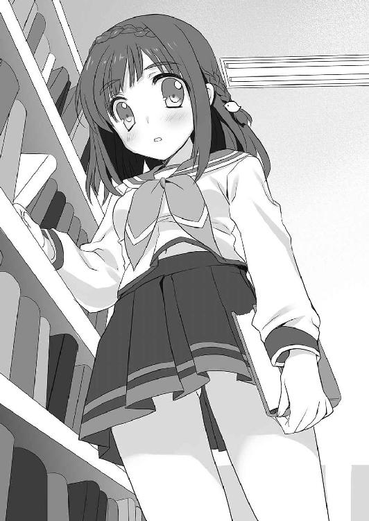
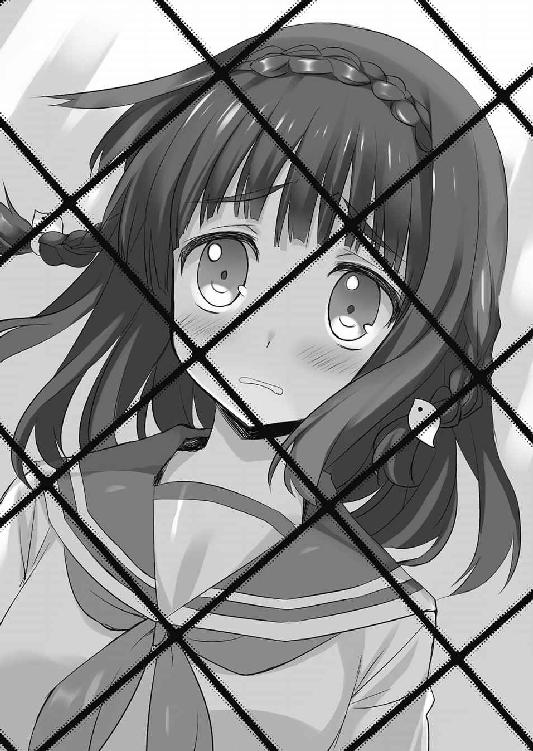

| おおコウスケよ、えらべないとはなさけない！ (富士見ファンタジア文庫) | |
| 竹岡 葉月 | |
| 富士見書房 (2011) | |

おおコウスケよ、えらべないとはなさけない！
竹岡葉月

富士見ファンタジア文庫
本作品の全部または一部を無断で複製、転載、配信、送信したり、ホームページ上に転載することを禁止します。また、本作品の内容を無断で改変、改ざん等を行うことも禁止します。
本作品購入時にご承諾いただいた規約により、有償・無償にかかわらず本作品を第三者に譲渡することはできません。
本作品を示すサムネイルなどのイメージ画像は、再ダウンロード時に予告なく変更される場合があります。
本作品は縦書きでレイアウトされています。
また、ご覧になるリーディングシステムにより、表示の差が認められることがあります。
口絵・本文イラスト 奥村ひのき
ドットキャラ製作 今野隼史
その日、津賀昴介は天野井螢とデートをする予定だった。
彼女は同じ中学校に通う同級生で、クラスこそ違うが、校内の図書室に通ううちに仲良くなった。
図書室で出会うだけあって、彼女はとても本が好きだ。
本好き文系少女にありがちなことに、ちょっと内気で引っ込み思案だが、昴介の前では屈託のない普通の女の子になるのもとても可愛いのだ。
『明日の日曜日、サンタで会おうよ』と、そんな彼女からメールが来た。
カフェ・サンタとは、町のショッピングセンターに入ったハンバーガーのチェーン店だ。
昴介が言われた通りに顔を出すと、天野井螢は通路沿いのオープン席に、すでに席を取っていた。
さらっとした彼女の長い黒髪が、まず目に入る。昴介はにやけそうになった。
「よう」
「あ、津賀君、おはよう」
微笑む螢の脇を通って、向かいの座席に腰掛ける。
「貸した本、おもしろかった？」
「んー、まあまあ」
学校の延長線上の、たわいもない会話。
まじまじと彼女を見るのも照れくさくて、ついテナントの前を通り過ぎていく人ばかりを見てしまう。
店の隣は複合型映画館が入っていて、ちょうど初回を観終えた男女がぞろぞろと歩いて出てくるところだった。
「カップル、多いよね」
「日曜だしな」
でも正直、どの野郎に付いてる子より螢が可愛いと思う。
「ほんと──焼き払われればいいのに」
──コン。
──コン。コン。コン。
──コン。コン。コン。コン。コン。コン。
「あ、天野井」
「なに？」
「そ......その手元にあるのはなんだ？」
昴介は、いくぶん青ざめながら聞いた。
彼女はカフェのテーブルの上で、なぜか金槌をふるっていた。
「なにって、バットに、釘」
「そりゃわかる！ 見りゃわかる！ （釘＋バット）×打撃＝釘バット！」
「昨日と一昨日でね、『ハイスクール・パニック』と『ヴァーノン・ゴッド・リトル』と『夜啼きの森』を一気読みしたの。おもしろかったあ......真に迫るっていうか、今も主人公の気持ちが離れないぐらい」
それらの本は、舞台や設定に差はあれ、銃乱射による大量殺人事件がテーマなところだけは一致していた。
「これは、津賀君のぶん。私のぶんはもうできてるの」
足下から、グリップ以外みっちり釘が生えた木製バットを取り出す螢。
先が尖っていなければ、頰ずりの一つもしていそうな表情だった。
「これで目の前を歩いてく恋愛脳のらぶらぶカップルたちをかち割るの......ふふふ、発情には死あるのみよ。デッド・オア・ラブ......」
「天野井、しっかりしろ！」
「どうして？ 津賀君も一緒にかち割ろうよ。トモダチでしょう？」
ずしゃああああ。
昴介のハートに一〇〇のダメージ！
「そ、その関係性で俺を呼ぶなあ」
「わけがわからないよ。それならなんのためにここに来たの？」
「そりゃもちろん、デート」
ぶうん！
『ト』の母音を言い終える前に釘バットが飛んだ。
「津賀君のばかああああああ！」
ああ、自分は今、螢に殴られているのだろう。周囲の悲鳴がひどく遠く聞こえる。カップルや家族連れで賑わう休日のショッピングセンターが、とんだ惨劇の会場になってしまった。
「トモダチって、トモダチって言ったのに！」
最期に見た螢の姿は、ひどく赤かった。
ＢＡＤ ＥＮＤ．
「────────死ぬのかよ」
昴介は、自分が肉塊になっていく感触を思い返し、ぶるっと体を震わせた。
なんてたちの悪い夢だろう。
螢に撲殺されて、中二で臨終だなんて縁起が悪すぎる。
現実の昴介は違う。あれから希望の高校に進学し、友達も沢山増えた。もちろん螢も同じ高校だ。昼休みには、こうして屋上で一緒に弁当を食べる。
昴介が地面から起き上がると、彼女も笑った。
「さ、コースケ。もう一度、あーん」
彼女は天使のような笑顔のまま、昴介に弁当の中身を食べさせようとした。しかし、その臭気を嗅いだ途端、昴介は素早く飛び退いた。
「だっ、誰だおまえ！」
「だれって、彗ですよー。宮沢彗は彗星の彗なのです」
螢と同じ顔なのに!?
「うっ、噓だ噓だ噓だいろいろ噓だっ！」
「噓じゃないですって。コースケの最愛のカノジョで、Ｃ組公認のらぶらぶカップルなのです」
「噓だああ！ その顔で愛とかラブとか語るなあ」
そしてそのちくわの天ぷらの異臭はなんだ。
天野井螢は、読書好きの内気な女の子で、そしてちょっぴり恋愛アンチなのがたまにキズだった。目の前の少女とは、言うこともやることも正反対だ。
顔はそっくりだけど。本当にそっくりだけど。
彼女はニヤッと、『不思議の国のアリス』のチェシャ猫のように笑った。
「ほらコースケ、あーん？」
「食えるかそんなシュールストレミング！」
「ひど。ただのちくわなのにー」
「ちくわで代用できるお前がすごいわ！」
シュールストレミングはな、世界で一番くさい缶詰だぞ!?
「ノンノン！ いける！ やれる！ コースケならレッツ・バキューム！」
「嚙めないのかよ！」
「騙されちゃだめだよ津賀君！」
ばーんと屋上の出入り口が開き、中学の制服を着た螢が飛び出してきた。
「あ、天野井!?」
「ひどいよ、津賀君。私以外の子と仲良くなるなんて」
真新しい釘が光るバットを片手に、螢は肩を震わせる。
「天野井っ。ぶ、無事だったのか。つかやっぱり宮沢とは別人でいいんだな」
「あれれコースケ、いったいどこのどなたさんでしょーかこの子」
彗が昴介の後ろから、右腕にしがみつくように顔を出す。
螢のこめかみに青筋が立つ。
「津賀君から離れてこのメス豚ぁ！」
「あははは。なんか楽しそう。えい」
さらにすりすりと、彗が昴介の二の腕に頰ずりをする。
あまのいほたる は ちからを ためた！
ほたる の こうげき！
「うわあああああああん！」
螢は泣きながら釘バットで襲いかかってきた。
「ちょっ、待てこら！ 殺るのは俺か！ 死ぬって天野井！」
「津賀君が、津賀君が汚されちゃったよ。私の津賀君がおかしくなっちゃったよ。やり直そう津賀君！」
「死んで出直せってか!?」
「ほらコースケ、あーん」
彗はマイペースにちくわを食べさせようとする。
ちくわと釘バットに追われる昴介は、最終的に屋上のフェンスを乗り越え、川の向こうの自由な世界を目指して飛んだ。
「あ──────────────────────────」
──真実は どこに あるのか。
そして彼は、今度こそ目覚まし時計を止めた。
「...........................................................................................................................うえっぷ」
新しい朝。
冒険のはじまり。
だがコウスケよ。えらべないとはなさけない！
１
──ニート。
現時点で定職についておらず、なおかつ求職活動も職業訓練もしていない状態をニートと呼ぶなら、津賀昴介（14）はまごうことなき学内ニートであった。
「............アンダースコートってさ、なんでパンツ隠しなのにパンツっぽいんだろうな......」
窓の外は、灼熱の太陽。九月に入ってもなおやかましいセミの鳴き声も、むさくるしい顧問の怒声も、「声出せや声ぇ！」な先輩のゲキも、窓を閉め切った図書室の中には届かない。まあなんてすばらしいことでしょう。
数ヶ月前まで丸坊主だった髪も、一夏放置したおかげですっかりのびた。
こうして冷房の吹き出し口に椅子を置き、日焼けした女子テニス部員の練習風景を窓越しに観賞する生活など、少し前なら考えられないものだった。
沖原良夜が、仏像の写真集をめくる手を止めた。
「昴介。いまのはー、けっこう響いちゃったかもしれないね」
「なんかやたらシンとしてるよな、ここ」
人がいるのを忘れてしまいそうだ。
昴介が通う雛口市立東中の図書室は、グラウンドやテニスコートに面した校舎の二階にある。昼休みや放課後になると鍵が開き、昴介たち以外にも人はいるのだが、めったに音がしない。
たとえば貸し出しカウンターにいる『物集』という三年生の図書委員は、黙々と壊れた本の修理をしているし、書架の本を手に取る生徒も、やはり一言もしゃべらない。
ちょっとロボットみたいだ。
そんな風に思うこともあった。
昴介とは違う回路とプログラムで動いている。
「だってここ、図書室だし」
ひかえめな反論を、昴介は聞いた。
利用者がしゃべった。それにまず昴介は驚いた。
昴介は椅子の上で、のろのろと首を動かす。
「図書室は、本を借りるところなの。それを邪魔するような私語はゲンキン。それが普通なの」
「............や、やめようよお、ホタルちゃん」
おお、そこからか。
図書室の中は、意外に平面マップではなく立体マップ仕立てなのだ。
昴介の遥か頭上の踏み台に乗り、ずっと本を選んでいた女子だった。
ここから見上げると、スカートの中身が見えそうで見えない。胸元の名札には、『天野井』の三文字。二年三組、天野井螢。
綺麗に切りそろえた前髪の下、くっきりとした眉が弧を描いている。一部の女子ほど抜いたり描いたりはしていないが、天然の立派な眉だ。そして黒目が目立つ大きな瞳で真っ直ぐに見下ろされると、ちょっとたじろぎそうにもなった。
──天野井ってこういう顔してたのか？
地味どころか、かなり可愛い方──のような気がする。
今まで特に気にしたこともなく、廊下ですれ違っても適当にしていた少女の顔が、はっきりと上書き、そして保存された気がした。アマノイホタル、カナリカワイイホウ。
もちろん知名度という点では、踏み台の下で小さくなって赤面している殿村クララ・アーベントロートの方が上かもしれない。金髪碧眼、いかにもな白人だけど日本人なんですよと、入学するなり周知徹底させられたぐらいなのだ。
だがどちらも総合すればおとなしくて目立たない、卒業するまで接点はない、そんな風に思っていた女子には違いなかったのである。

いやはや。今さらながらびっくりだ。
「津賀君は、なんでここにいるの？ ずっと野球部のひとだったのに。いつまでここにいるの？」
「............きたくないから」
昴介は、やや目をそむけ気味につぶやいた。
「え、ごめん聞こえない。なに？」
「働きたくないんだよっ」
控えめに言い直したつもりだったのに、また部屋いっぱいに響き渡ってしまった。もう嫌だこの部屋。
仕方ないので、昴介は開き直ることにした。
「いいんだってもう。俺もうじゅーぶんがんばったんだって。うちの野球部ってな、むちゃくちゃ練習厳しいんだぞ知ってるか？ 朝は朝練だろ、昼休みは昼練だろ、放課後は夕飯前まで打って走って打って走って打って走ってばっちこーいばっちこーいってゲロ吐くまで練習させられて、土曜も練習で日曜は試合で、やっとわかったんだよ。俺べつに野球好きでもなんでもなくね？ って」
お前なら軟式の星になれるぞ。
入学してすぐ、軟式野球部顧問だった担任教師に肩を叩かれたのが運のつきだった。
彼はこの道で甲子園にも行ったらしい。一月前まで小学生だった昴介は、簡単にその言葉を信じてしまった。
ハードな練習も、全国の一言ですべて帳消しだった。
少子化のあおりで部員もぎりぎりで、全国どころか万年二回戦敗退でも、「お前たちは眠れる獅子だ」という顧問の言葉の方を信じた昴介だった。
愛と洗脳の日々は、今年の五月、昴介が入院するまで続いた。
朝、眠い目をこすりながら自転車をこぎ、電信柱に激突したのが原因だった。
「......退院してリハビリはじまってさ、やっと目が覚めたっつーか......部活ないって、なんにもない生活ってマジ最高って」
「そ、そう......」
「外が明るいうちに家に帰れるんだぞー」
「そうなんだ......」
「めざましテレビ見てから学校に行けるんだぞー」
「よかったね......」
「しかもさー、あの顧問、体力テストで平均より良さげだった奴には、片っ端から同じセリフ吐いて勧誘してたらしいんだよなー」
「引っかかったのは昴介だけだったけどね」
良夜は、黒背景の『国宝・木造釈迦如来坐像』のグラビアをしげしげと眺めている。
そんなに角度を変えて見たところで、おっぱいが見えるわけでも下着が見えるわけでもないのに意味不明だ。だがそうなのだ。こいつときたら昴介と同じセリフを顧問から受けておきながら、にっこり笑って「興味ないです」とのたまったらしい。
「たぶん途中で飽きるだろうし、僕が野球部で坊主って似合わなくない？」
白い歯を見せて螢たちに訊ねている良夜は、真剣に頭がおかしいと思う。
「そ、そうかもね」
螢たちもどぎまぎした顔でうなずいていた。
昴介よりも背が高く、ルックスもジャニーズばりのイケメン君なのだが、とにかく飽きっぽくて興味がころころ変わる。今のマイブームは仏像らしい。それもたぶん、二月はもたないだろう。これの前はＵＦＯだった。
坊主で野球はＮＧで、宇宙人とチャネリングするためにヘッドギアをかぶって家の屋根に登るのはＯＫな理由がよくわからない。
わからないからつきあいが続いているとも言えた。
「んで、俺も後から気づいたんだけどさ。高校の軟式って、全国行っても甲子園じゃないらしいじゃん」
「全国大会は明石公園第一野球場だね」
「あの顧問、なにからなにまで噓ぶっこきやがって」
「作戦勝ちとも言うねー」
「顧問のあほー」
「一年たつまで気づかなかった昴介もすごいよ」
洗脳が解けてしまえば、続ける理由はどこにも見あたらなかった。
ちょうど退院するのと前後して、新しい甘言で釣った新一年生が育ってきて、無理に部活に出る必要がなくなったのもとどめになった。
「もーいいんだ。俺、このまま卒業までパンダみたいにだらだら過ごしてやるから」
「うんうん」
「一分一秒たりとも動きたくないでござる。働きたくないでござる。働きたくないでござる」
「わかったよ昴介。働きたくないんだね」
「働きたくないでござる！」
ほぼ初対面に近い女子相手に、何をアホのように力説しているのだろう。
思いはするが止められなかった。昴介は、椅子の上で膝を抱えた。理想は動物園で大事に飼われるジャイアントパンダだった。
「そういうわけでさ、天野井さんたち。昴介こんなだから。ここにいるの許してやってよ」
良夜が写真集を置き、昴介の半端にのびた髪をかきまわしながら言った。
螢たちがどんな顔をしたのか、椅子の上で『屈葬』の姿勢になった昴介では、見ることができなかった。
「──なんにもない放課後だっ」
すぱーんと。
翌日も昴介は、図書室の扉を開けた。
あれだけ宣言した以上、はばかる物は何もない。遠慮なくぐだぐだだらだらできるというものだ。
貸し出しカウンターには、昨日と同じ『物集』という三年の女子生徒が座っていた。
「ちわっす」
「こんにちは」
やわらかそうな髪を結い上げ、顔も口調もおっとりという言葉がぴったりくる人だ。
カウンターに乗りそうな胸元も、がっちり視界に入れつつ昴介はうなずき、ずんずんと図書室の奥へと突き進んだ。そして冷房の吹き出し口に椅子を置き、窓から女子テニス部員のきゃっきゃうふふを眺め倒した。
五時になって、その三年でおっぱいな先輩が「そろそろ戸締まりするから」と言いに来た。
昴介は椅子を元の位置に片付け、サブバッグを背負って帰る支度をはじめた。
この時間帯になれば、表もだいぶ涼しく帰りやすくなるのだ。
「さよならっす先輩」
「物集月穂よ。さよなら津賀君」
さらに次の日は大雨だった。
校庭で活動する部活はすべて屋内での筋トレになってしまったので、昴介がここで見るべきものは何もない。
仕方ないので、窓際でひたすらぼーっとする。
「............」
「............」
「............」
「............」
一本だけ生えたホクロの毛を抜き、頰杖をつく手を替える。
「............」
「............」
「............」
「............」
ぼーっとする。
イケメンの良夜は、床でガンダーラ美術の全集をめくりはじめた。新聞紙ぐらいの大きさがあり、めくってもめくっても砂漠と仏像が出てくる怖い本のようだった。
昴介はまだぼーっとしていた。
「せめて何か読んだら？」
目を開けながら寝ているような昴介に、声をかけたのは天野井螢だった。
「......なんで？」
「退屈じゃない？」
今度はちゃんと床の上。セーラー服の胸に、薄紫色のハードカバーを抱いたまま、昴介を見下ろしている。『チグリスと×××××ス』と、題名の頭だけが見えた。
教室のある階や校庭で見かける時より、この少女は強気になっている気がする。ここまで男子に話しかけるようなタイプではないと思っていたのだが。
周りに大量にある本や書棚が、彼女と眉毛を強くしているのだろうか。
「げじげじパワー」
「うそっ、虫!? どこ、どこっ！」
やっぱり可愛いよなあと思うが、彼女が言っている言葉の意味はよくわからない。
知らなかったのだ。退屈『だから』本を読むという世界。退屈じゃない読書というものがあるなんてこと。
「や。べつに退屈とかないし」
螢は少し残念そうな顔をした。
やがて時計の針も五時になる。
月穂が戸締まりの準備をはじめ、昴介たちも帰り支度をはじめる。
「ほんとに今日も何もしなかったわねえ」
月穂が朗らかに微笑って言った。
東中図書室、常連メンバーその一。
まずは『三年の田村さん』。勤勉な受験生らしく、文庫本の他に受験ガイドなども手早くチェックして去っていく。
その二。『疾風の小倉』。棚一つにびっちり詰まった新書コーナー以外は、めったに近寄らない。とにかく無駄口を叩かず三十秒で選んで三十秒で去っていく。
その三。『返さない神林』。あだ名の意味？ 言うまでもないだろう。借りるのはいいけどなかなか返さないからだ。
そして天野井螢も、東中図書室の常連の一人だ。
いつも仲のいいお友達は、金髪少女の殿村クララ・アーベントロートで、彼女が委員会に出ている間、図書室で小説などを読んで待っている。同じく彼女が習い事で早く家に帰る時も、図書室で何かしらページをめくってから家に帰る。
本が好きなのももちろんだが、とにかく図書室という場所が大好きっ子らしい。
図書委員長の物集月穂とも仲がいいようだ。ときどきカウンター越しに話をしている。
「──月穂先輩。それ、変です。どうしてそういう見方しかできないんですか」
「変かしら。こういう形態の愛情があってもいいと思わない？」
「思いません。まったく。メロスとセリヌンティウスは男同士なんですよ。普通に友情物として見ればいいんです。愛じゃないです。トモダチなんですト・モ・ダ・チ」
「んー、つまらないわねえ......友情......ときめきがいまひとつ......」
「友情のどこがつまらないんですか。信じられません」
「じゃあハチ公物語」
「あれも友情です」
「犬なのに？」
「犬でもですです」
好物ジャンル、友情物。禁断方面のラブが好きな月穂とは意見が割れる模様。
昴介も、だてにニートの暇人はしていなかった。
この静かすぎる図書室の中でも、人の入れ替わりや交流、主義主張はあるようで、けれどそれが目立ちすぎたりすることは決してない。
よくよく注意していればなんとなくわかる程度で、田村も小倉も螢でさえも、とにかく最後は黙って本を借りたり読んだりする作業に戻ってしまう。
はじめはこのノリの意味がわからなくて気味悪くもあったのだが、主役が違うんだなと思い直すようになったらだいぶ変わった。
この部屋は──なんだかんだと言っても『本』が主役なのだ。昴介たち人間ではない。
本の脇役である人間の無駄口が少ないのもそのせいかもしれない。
でも、やっぱり同じぐらいに思う。だから何？
昴介にとって、本とは図書室の棚を埋めるものであり、図書室は昴介のニートライフを許してくれる場に過ぎなかった。
なんの興味もわかなかったのだ。
ある時、昴介は野球部の練習にかちあった。
赤とんぼが舞うグラウンドの外周を、ユニフォームを着た野球部員たちが走っていく。
五時で図書室が閉まっても、みんなまだまだ真剣で一生懸命だ。
すでに退部済みの昴介は、昇降口を一歩出て、制服のまま彼らの勇姿を見送った。
（......よーやるわ）
はじめに出てきた感想。
あの濃密な集団の輪の中から、昴介という人間が抜けても、一年生は入ってきたし試合もできた。今となってはどうしてあんなに夢中になれたのか、思い出すこともできないのだ。
ちょっとつまらない奴になってきてるかもしれない、自分。
「おお。どうだー津賀っ。そろそろバットを握りたい頃じゃないか？」
思う横から、ばしっと肩を叩かれた。
野球部の顧問だった。日々ノックをこなす顧問の腕は、いつもながらがっしりと太い。
「んん？」
「......いえ、いーっす」
やはり気持ちは動かなかった。
一度は同じように肩を叩かれてはじまったのに、昴介の心の起動スイッチはすっかり固くなってしまったようだ。
それはそれで少し寂しい、かもしれない。
一人で昇降口に戻ると、天野井螢が下駄箱のフタを持ち上げていた。
あらためて昴介と目が合い、彼女の中で止まっていた時間が流れ出したように、ぱたんと木製のフタが落ちた。
「津賀君」
「帰んのか？」
こくりと、螢はうなずいた。
この日はクララが習い事に行く日だった。螢は一人で図書室に居残っていた。
けっきょく下駄箱の前で立ち話をしたのは、時間にしてほんの一分ほどだった。
喋っていたのは、なんだかんだと昴介の方が多いぐらいだった。後ろの廊下を他の生徒が通るたび、螢は口をつぐんだ。
「んじゃな」
「さよなら、津賀君」
小さな声。
やはり螢は、二階の図書室以外で会うと影が薄くなる気がする。
こういうのをなんと言うのかずっと考えていたが、夕飯でうどんをすすっている時に思い出した。
「そうだ」
うはうどんのう。そして内弁慶のうというやつだ。
だがそのままさらに数日たつ頃には、テニス女子を見たところでどうとも思わなくなってしまったのには参った。
「──単純に見飽きたってことじゃないの？ 変でもないよ」
昴介は、図書室の窓辺で絶望するしかなかった。
そんな日が来ていいはずがなかったのだ。船旅の途中で食料が尽きるぐらいまずいことなのだ。
「......部活やめたら、思う存分、観察してやろうと、思ってたのに......！」
「案外短い夢だったねえ......」
「どうすんだよこれから。プールも今月いっぱいで終わっちまうし。今からあっちに移動すんのか？」
「その前に覗けるとこを探そうかー。無理に覗いたら生活指導の先生にはっ倒されると思うよ」
良夜の言うことは、どこまでも正論だった。
パンダのようにだらだら過ごす。思う存分暇を楽しむ。口では簡単に言えた野望が、とたんに難しく思えてきた。ジーザス......！
「──津賀君」
だがそんな時、天野井螢が、またも踏み台の上からこちらを見ていた。
「な、なんだよ天野井──」
「やっぱり本、読もうよ」
読書。
またその話かという気分だった。
「関係ないだろ。俺は忙しくて」
「忙しくない。飽きちゃったっていま言ってたよね」
福耳の地獄耳。そして内緒の話をするには、図書室は静かすぎた。
書架の隙間に見える貸し出しカウンターでは、物集月穂がことの成り行きを見守るように微笑んでいる。
螢は螢で、ここにいれば無敵なのだ。
「せっかく図書室にいるのに、一冊も読まないなんてもったいないと思う。津賀君とかでもおもしろいって思う小説、いっぱいあるよ」
──津賀君とかでもだと？
それは本当に頭の上から発せられた言葉で、なんだか格下の赤ちゃん呼ばわりされた気もして、むかっ腹がたってしまったのだ。
おまえなんかに俺の何がわかる。
「は。小説しょーせつショーセツって、偉そうになんだよ。俺にケータイ小説でも読めっていうのかよ。『恋空』？」
「ち、違うの。小説にもいろんなジャンルがあってね」
「だいたい俺、小説とか馬鹿馬鹿しくて読む気しないから。しょせん噓っぱちの絵空事だろ？ しかも字ばっかりびっしり詰まってて。それこそ時間の無駄じゃないか」
尻をぺちんぺちん叩きそうな勢いで話している途中、螢の眉の根がゆがみ、頰が紅潮していくのがわかった。
無言で踏み台から飛び降り、ぷいと顔をそむけて去っていく。
「ありゃりゃ」
他人事のような良夜の声が、ひどくかんに障った。
確かに今のはやり過ぎたかなーと、言い過ぎで泣かしてしまったかなと思うのだ。
ただでさえおとなしめの女子だというのに。
昴介の喉の奥に、何度体験しても慣れない、苦くて面倒くさいものがこみ上げてくる。
「じゃあ津賀君、これ読んで」
だけど螢は、昴介の前に舞い戻ってきた。
太めの眉の根に皺が寄りまくった仏頂面で、軽く息を弾ませ、現れた。
「読んでもないのに言われたくないし。津賀君の読解能力になんの問題もなくて、マンガ以外読めませんって感じじゃなかったら、これぐらいすぐ読めるでしょ」
「これぐらいって」
「ほらこれ」
椅子の上でのけぞり気味の昴介の腹のあたりに、一冊の小説をつきつけてくる。
ものは厚紙で製本したハードカバーだった。成り行きで受け取ると、予想以上にずしりと重い。ソフトカバーのコミック本とは訳が違う。
そして螢は、昴介が頭に浮かべた断りの文句の、さらに先を言った。
「もちろん、津賀君の時間を無駄にはさせないつもり。津賀君がちゃんと最後まで読んだら、その小説のラストシーン、私が──津賀君にやってあげる」
な。
なんですと──────!?
「読んだぞ、天野井！」
二日ほど徹夜してしまったが、確かに読んだ。
図書室の書架で本を選んでいた螢は、眼の下に隈を作って駆け込んできた昴介を見て目を丸くした。
「は、早いね、津賀君」
「お、おう。ほ、本気出せばこんなもんだ。とにかく天野井、約束だからな......！」
読み終わった本を、呼吸を整えながら棚に横置きする。もう無視はできないように。
おあつらえむきに、図書室内に人の姿はなかった。良夜もクララも、いつもカウンターに陣取っている月穂も席を外している。奇跡だ。
書架の片隅で、昴介に退路を断たれた形の螢は、観念したようにうつむいた。
「......たしかに、約束だもんね」
螢は消え入りそうな声でつぶやく。そう言う彼女は、間違いなくそこいらのアイドルも真っ青の可愛さなのだ。
「あ、あのでもね、は、恥ずかしいからちょっと後ろ向いて壁になっててくれる？」
「わ、わかった」
懇願される形で、昴介は後ろを向いた。その背中で、ごそごそと衣ずれの音がしはじめる。
「なんつーか......ラストの方、びっくりしたよ。あんな......けっこうエロっぽいシーン山盛りで......」
「鈍感な津賀君が悪いんだよ」
ふと自分の足下を見れば、ついさっきまで螢が結んでいたはずのスカーフが、セーラーカラーの上着と一緒にリノリウムの床に落ちていた。体中の血管という血管が、ばっくんばっくん猛スピードで血液を運んでいく。
しばらくして、螢が「いいよ」とささやいた。
昴介は、おそるおそる振り返った。
ちょうど制服を脱いで、下着だけになった螢が、胸元をおさえて立っていた。
赤らむ頰と、ほんの少しだけ恨めしげな眉と瞳が、蛍光灯の切れた薄明かりに浮かび上がる。
「ずっと津賀君のこと見てたのに、気づいてくれないんだもん......」
彼女のブラジャーは、薄いピンク色だった。紐のところに、小さなリボンがついている。思っていた以上に量感のある大きな胸が、螢の手の下でやわらかそうな谷間を作っている。
その下のなだらかな腹部も──なめらかな曲線を描く大人びた腰や太ももも──セーラー服の厚い布地からどうして想像できただろうか。
「天野井......」
「筋は覚えてるでしょう？ 全部やっていいからね」
螢は甘く呟き、昴介に身をゆだねてきた。そのとろけそうな体ごと、今度は昴介が書架に寄りかかることになる。全身で螢の存在を感じながら、小説のくだりにあった一文を思い返し、彼女の背中のホックを外しにかかった──。
「おわああ──────────────っ！」
派手に飛び起きてみれば、そこは家の布団の上だった。
昴介が小五の時に完成した分譲マンションだ。三ＬＤＫ。昴介に与えられた個室は五・五畳相当の洋室。大丈夫。寝る前となんら変わっていない。
ひとまず枕元に置いていた携帯電話で時間を確認すると、午前四時半を少し回った頃合いだった。ここから二度寝をするにも中途半端な時間で、昴介は目を覚まそうと思い切ってベッドから起き上がった。
電気をつけると、あらためて散らかりきった自分の部屋が目に飛び込んできた。
「............あは。あはは。夢。夢。夢ですか、夢ぇ......」
まったく、なんつーものを見てしまったのだ。
一応、夢の原因はわかっていた。学習机の上に、鞄と一緒に置いてある本がまずいのだ。
──小説のラストシーン、私が津賀君にやってあげる。
いくらなんでも、その、なあ？
昴介は借りた本を手に取り、あらためて装丁を眺める。
本の作者は、外国の人だった。作者の国籍どころか、性別すらわからない。表紙は金髪の美男美女が、夕日に包まれ草の上で身を寄せ合っている写真だった。
タイトルは『抱擁の道程』。意味がわからなくて辞書まで引いて調べてしまった。
抱擁──親しみや愛情をこめて相手を抱くこととあった。
道程──みちのり。物事が変化していく筋道とあった。ちなみに童貞にあらず。
夕飯を食べてから、試しに冒頭だけ読んでみたのだ。いきなり人間の視点ではなく、動物の犬の目線ではじまったから驚いたが、なにしろ表紙が『男と女』でタイトルが『抱擁の道程』である。もうありとあらゆる妄想のスイッチが入って大暴走だった。
犬、上等だエロいぞおおおおお！ 納屋にガレージ、すげーエロいぞおおおおお！ ソーセージが朝食に、もうエロエロだひゃっはあああああ！ 牛に仔が生まれたという八文字だけで裏読みの深読みがはじまる。
ここからどういうアクロバティックな展開を経てエロスになだれこむのか。どれだけエロエロになってくれるのか。考えるだけでおなかがいっぱいになり、先に進まず寝落ちしてしまったのだ。
昴介の記憶違いでなければ、天野井螢はかなり思い詰めた顔をしていた。相当大胆なことをする覚悟があるということだ。それこそ夢で見たような展開も──。
「ないないないないって！」
血迷うな。
だいたい天野井螢が、あんなに巨乳のはずがあるか。どう考えても先日お世話になったグラビアアイドルの顔だけすげ替えた状態だったろう。なんだよお前、見たのかよ。見てないけどわかるだろ。頭の中で、何人もの昴介の声が響き渡る。
本をベッドに置いて、勢いよく体を後ろに倒した。
ちくしょう、天野井螢め。
オトコの妄想に火を点けすぎなのだ。
謎が解きたければ、一歩一歩読んでいくしかなった。
放課後、昴介が女子テニス部を見るために用意した窓際の椅子は、本を読む場所に変わった。
「津賀君ー。全部読まなきゃだめだからねー」
うっ。
うまいことはしょって、ラストシーンだけ読んでしまおうかとも思ったのだが、螢に釘を刺されてしまった。
「テストするから。ちゃんと真ん中部分も」
夏服に包まれた彼女は、深い笑みを浮かべている。
ちょうどパラ読みをはじめたところを見つかって、昴介は本を閉じるしかなかった。
彼女は制服を着た両腕で、ハードカバーの本を抱いている。自転車レースの写真に、小難しくて縁起の悪そうなタイトルが付いていた。
スカーフに隠れた螢の胸元は、夢で見たほど大きくはない、気もする。しかし、その格好のまま背を向けて下段の本を取る時、ブラジャーの横線がくっきり浮き出て落ち着かない気分にもなる。
昴介は、閉じてしまった本を読む作業に戻った。一度は妄想に傾きかけた気持ちを切り替え、読んだところの切れ目をまた追いはじめる。
──いわゆる『抱擁の道程』という話は、アメリカのごく普通の家に、一匹の子犬が迷い込むところからはじまる。
豆粒、ビーンと名付けられたその子犬は、五歳の一人息子と一緒に、すくすくと大きく育つ。息子の夢はメジャーリーガー。隣の家の双子とともに、お古のバットを振り回す毎日。草むらに飛んでいったボールをくわえて持ち帰るのがビーンの役目だ。
しかしその少年自身が八歳になる頃、ある変化が起きる。
町の缶詰工場が縮小になり、『パパ』を含めた多くの人が職を失ったのだ。
現場のまとめ役だった『パパ』は、真っ先に上にたてついてクビになったと噂された。しばらくは日曜日以外でもキャッチボールにつきあえると『パパ』は笑ったが、新しい仕事はなかなか決まらない。さすがにパパも笑えなくなった。
これからどうなるだろう。
先が見えない空気は少年にも伝わり、少年が投げるボールを拾うビーンにも、同じ気配は伝わっていく。
やがて、事態の黒幕とも呼べる人物が姿を現しはじめる──。
「──津賀君たち。そろそろ閉めようと思うの」
はっと我にかえった。
物集月穂が、図書室のキーを鈴のようにつまんで振っていた。
壁の時計は、五時五分前。
「ふわあ。もうそんな時間なんだ。早かったね、昴介」
良夜が床の上で肩を回し、広げた美術全集の何巻目かを閉じる。
いったいどれぐらいの時間読んでいたのだろう。すぐには実感がわかなかった。
昴介の手元には、まだ半分にも達していない本がある。ほんのりクリームがかった紙の上には、細かい字が並んでいる。
（そっか。もう五時か）
ついさっきまで、これを目で追って読んでいた。
だが読むというよりはそう。
（飛んでた）
どこか遠いところに飛んでいって、ぽとんと落ちて戻ってきたような気分だった。
手の平のどこかに、硬い犬の毛の手触りと、ゴムボールの感触が残っている気がした。
小説はさらに続く。
すべての元凶は、『パパ』の正義感をうとましく思った、缶詰工場の社長によるものだった。
もうこの町にいても未来はない。『パパ』と『ママ』は何度も話し合い、遠い親戚のつてをたどって引っ越しをすることに決めた。だけどそこにビーンは連れていけない。ビーンは少年とも仲の良かった双子の家に託される。
──さよなら。ごめん。元気で。
少年は泣きながらビーンを抱きしめる。引っ越し先の町は遠い。これが最後の別れとわかっていた。
わかっていなかったのは、犬のビーンだけだった。
そして──。
「天野井。うるさいよ」
昴介が図書室の指定席で本を読む間、閲覧席で螢とクララが雑誌を広げ、笑っていた。
二人ははっと息をのんだ。
「喋るなって言ったのは誰だよ」
「......そ、そんなに怒らなくても、いいじゃない」
螢が小さく呟いている。ちゃんと聞こえてるぞと言おうとしたが、面倒なのでやめた。
「ぴりぴりしてるねえ」
良夜の声。
脳みその奥で、キーンと戦闘機が飛んでいくような音がしている。それでもページをめくる手は止めない。
自分はかなりいらだっているのだろうか。
飼い主の少年に置いていかれたビーンは、双子の家で暮らしはじめた。
それでもずっと、少年のことを待ち続けた。
あたたかい双子の家の犬小屋を抜け出して、何度も行方不明になった。いつも最後に見つかるのは、すでに空き家となった少年の家だ。
──ビーンは向こうの家に行くべきだ。
ガレージにたった一つ残っていたボールをくわえて丸くなるビーンを見た時、双子はとうとう決心した。
──親切な人へ。
この子を大事な家族に会わせてあげてください。
あなたの旅の予定を変える必要はありません。予定が合うところまで連れていってください。あと、水とお肉を少し分けてあげてください。
住所はカリフォルニア州の×××です。
くりかえします。
あなたの予定を変える必要はありません。
首輪のバッグにそんな手紙と少年の写真、ゴムボールを添えて、一番はじめのヒッチハイク場所へ連れていった。西へ、少年のいる町へと続く、まっすぐなハイウェイへと。
ビーンは、通りがかった飼料会社のトレーラーに乗って旅立った。小さな双子たちは、必ず少年に会えると信じて手を振った。
叱られるのはわかっていても、ビーンに幸せになってほしかったから。
アメリカ東海岸から西海岸へ。
ビーンの大陸横断の旅がはじまる。
『抱擁の道程』の最終ページに到達したのは、五・五畳、家のベッドの中。
外は白みはじめていた。
「読んだぞ、天野井」
こんなセリフを、夢の中でも吐いた気がする。
今度の場所は図書室の片隅ではなく、人のいない階段の踊り場だった。
ちょうど五時間目の授業が終わり、彼女だけが下へ降りていくのが見えたから、手すりから身を乗り出してそう言った。
現実の彼女は、もっとそっけなかった。
「......どうだった？」
「どうって、そりゃ」
昴介は言葉に詰まる。その間に、螢の方が階段を上がってきた。
いま、鞄の中には『抱擁の道程』が入っている。ようやくラストまで読み終わった約束の本だ。
「その顔、ほんとに最後まで読んだみたいだね」
きれいにそろえた前髪の下、素朴な太さの眉が弧を描いている。
見た目はこんなにおとなしくて真面目そうで、そのくせしたたかな真似もしてくれる彼女を見ていると、昴介は腹がたって腹がたってしょうがなくなるのだ。
黙って、本を返した。
「......もしかして津賀君、エッチなのとか期待してた？」
「なわけねーだろ」
ものすごい噓つきだ。
結論から言えば、本は昴介が想像していたほどエロくはならなかったのだ。
最後の最後までビーンという犬の視点で物語は進み、奇跡のような旅を経て、飼い主の少年のもとにたどりついて幕を閉じる。
ラストシーンは、少年に頭をなでられるビーンだった。
「あ、でも、とりあえず約束は約束だよね。ほら頭だして津賀君。なでてあげるから」
「ふざけんなよ。そんなのいらねーよ！」
怒鳴りたい気持ちがそのまま声に出た。
昴介の半端に伸びた髪へ手を伸ばしていた螢は、雷に打たれたように止まる。
止まって、そして、
「......そ、そうだよね。やっぱりその、失礼は失礼だったよね。ごめんなさい」
目の前で見る間にしおれていった。
図書室の強気の魔法も、この場所では通用しない。はじめは昴介をなでようとしていた手が、行き場をなくして宙を泳ぎ、最後は自分自身のスカートのひだをつかむ。それでもなんとか笑おうとしているようだが、うまくいかない。螢は必死に言葉を紡ぐ。
「で、でもね、その、言い訳かもしれないけど、津賀君を馬鹿にしたかったとか、そういうのじゃないの。どうしても津賀君に本、読んでもらいたくて。一回本気で読んでくれたら、きっと楽しいのもわかってくれるって思って。だから私──」
だから余計に腹がたつんだよ。
今にも泣きそうな顔の螢を見ると、昴介は何も言えなくなってしまうのだ。だって本当に面白かったのだから。
昴介の心は、ずっとアメリカの片田舎に飛んでいた。行ったことのない景色が目に浮かんで、犬のビーンと一緒に冒険していた。
最高時速百二十キロで走るトレーラーの上で浴びる風は気持ちよかった。砂漠の夜に出会ったコヨーテの群れは本当に恐ろしかった。モーテルの主人にもらった一切れの肉をかみしめる感慨。首筋をなでてくれるがさがさとした優しい手。そして待ち望んだ少年との再会。一緒に旅をしてきた、傷だらけのゴムボールを少年が放る。ビーンがそれをくわえて持ってくる。この頃にはもう涙腺が決壊していた。明け方の五・五畳の布団の中で、ぐすぐす洟をすすっていたのだ。
そして最後の解説を見てわかったのだが、『抱擁の道程』は実在のエピソードをもとにして創作した小説らしい。パーフェクト。絵空事だから嫌だという昴介の希望を、見事に叶えた選定だった。
何もしたくないと言い張って、退屈で死にそうな昴介のことを見て、観察して、どういうものが好きそうか、どうしたら読んでもらえるか、ずっと考えていたに違いない。
本の半ばを過ぎたあたりから、昴介はかなりいらだっていた。
今ここでこうして手に汗握っている気持ちも、先を読みたくなっている気持ちも、ビーンがんばれと祈る気持ちも、螢にとっては計算通り、エロ目当てのスケベ根性でがんばっているように見えているのだろうかと。
たしかにはじめはそうだったけど、でも今は違うんだよ。ちゃんと物語が読みたくて読んでるんだよ。そんな目で見るなよ天野井。そう思うもどかしさを、うまく言葉にすることができない。悔しくて腹立たしくて。
「ごめんね、津賀君。どうしたら許してくれる......？」
素直に謝れる螢と、黙りこむ自分の違いはなんだろう。
「......なんにも、しなくていーし」
片言のような言葉が漏れた。
もっと沢山本を読めば、このどうにもならない思いに、正しい意味の言葉をあてることもできるのだろうか。
「謝るのも、どうでもいい。ただ俺は」
彼女に会ったら、一つだけ訊いてみたいことがあったのだ。
「その。ラストの、ちょっと前に、モーテルの電話が鳴るだろ。あれの意味？ なんで大事っぽく書いてあるのかよくわかんなくて」
「電話？」
螢はきょとんと、我に返ったような顔をした。
「保健所からの電話のこと？」
「そうなの？ あれ保健所なの？」
「はっきりとは書かれてないけど、たぶんそれ以外ないと思う。前の章でアンナが管理センターの電話番号を調べてる場面があったでしょう」
「でも時間差でビーンは出発」
「〝そういう運命だった〟って地の文の流れとも合うし」
「そっか。それっぽい。お前頭いい」
螢が、はにかむように笑んだ。不意打ちの可愛さにどきりとした。
「私、これはじめて読んだ時ぼろぼろ泣いたの」
やわらかい表情で、螢が本の感想を語る。本のことを語っているのに、昴介自身のことを語ってくれているような気がした。こんな不思議な高揚感、昴介ははじめてだった。
彼女が語る思いも筋書きも、みな昴介の中にあるからだ。思い描くことができるからだ。
あるあるある。すげーわかるよと。
たった一冊、同じ本を読み切っただけなのに。
「......つーかさ、なんでこんな変なタイトルと表紙なんだ......？」
「あ、それはね、英語の原題をそのまんま直訳しちゃったからとかで、表紙は一度映画化したからその映画の女優さんと俳優さんがメインのに変わっちゃって......」
「犬どこにもいねーじゃんかよ」
「私もヘンだとは思うんだけど......」
話題はつきない。
沢山話し続けた彼女は、最後にこんなことを言った。
「もし津賀君がよかったら、他にもおすすめしたいのがあるんだけど......読んでみたりしない？」
昴介はうなずきたかったのだが、本当に尻尾を振る犬のようになってしまうのも格好悪かったので、「たまにはな」とだけ言った。
「よかった。じゃあまた、図書室でね」
螢は弾んだ声でそう言うと、きびすを返し、階段を駆け下りていった。
最後の二段をわざと両足で着地して、背中の髪が元気に散った。そういう彼女を見るのもはじめてだった。
楽しかったと、螢もそう思ったのだろうか。
遅れて昴介も、階段を降りる。
一階まで行き、昇降口にさしかかると、まだ誰もいないグラウンドが見えた。
バックネットの前でバットを振る自分を想像する。
『──おお。どうだー津賀っ。今度こそバットを握りたい頃じゃないか？』
幻の顧問の声も聞こえてくる。
だけど自分は。
「......いえ、いーっす」
ハイウェイを走る風の感触が、まだ頰に残っているから。
なんてもちろんそんなことを口にはしないけれど。全身くたくた無我夢中というのも違うけれど。でも、心は動いた。そーゆーのも悪くないと知った。
明日もたぶん、昴介は図書室に行くだろう。
螢に会うため。脳内ダイブ。グラウンドではなく、まだ知らない世界を飛ぶために。
２
東中の図書室は、昼休みと放課後に鍵が開く。
今は金曜日の昼下がり。天野井螢と殿村クララ・アーベントロートの仲良し二人組は、閲覧席の隅に腰掛け、写真が綺麗なお料理本などを紐解いていた。
さして代わり映えのしない東中図書室だが、最近になって少しだけ変化があった。
「............................................................あま、のいっ」
「きゃあ」
少女二人の顔が、ホラー映画のヒロインのようにひきつる。
図書室の床の上を、腐れゾンビな顔色の昴介が這い寄ってきたのだ。
「おまえは、いったい、なんちゅー本を読ませやがったんだあ......！」
ずるりにゅるりと、実に気味の悪い匍匐前進。
そのまま青息吐息でテーブルにたどりつくと、まさしくゾンビが墓から蘇るように立ち上がり、天板の上に一冊の本を置いた。
「まともに夕飯食えなかったじゃねーか......うえ。思い出したらまた吐き気が......」
「あれ、おもしろくなかった？ 『眼球奇譚』」
「むちゃくちゃグロ怖......っつか、この間のと似たようなのって言っただろ！」
「だから『時計館の殺人』と同じ作者さんよ？」
「ぜんぜん別もんだったぞ！ 探偵も出て来なかったし！」
「そうだった？」
「笑うなっつの。わざとやってんだろ天野井」
「ちなみにその本、私じゃなくてクラりんの本だから」
「──え」
螢以上におとなしい金髪碧眼少女の、思わぬホラー趣味が判明したり。
「お前の？ マジで殿村のなのかっ？」
「........................あっ、え、えとえと、あの、うん。そう......なの......」
「津賀君、津賀君、あんまりクラりんいじめないでよ」
「べつにいじめてないっての」
「いじめてるよ」
あまり話したことがなかった隣のクラスの女の子が、意外にいたずら好きでいい性格をしていることがわかったり。
「いいから笑うなってこら」
その笑った顔もけっこう可愛いことを知ったり。
昴介が、こうして図書室で本を読むようになって見えてきたことだ。まったく世の中どうなるのかわからねーぞというのが、最近の感想だった。
「綾辻ホラーはこれだけじゃなくてねー、ずばり『殺人鬼』なんて本もあるんだけど借りてく？」
「やめとくわ」
昴介は言った。ご飯はおいしくいただきたい。
「でも津賀君って、なんだかんだ文句言っても借りたらちゃんと最後まで読むよね。野球部と一緒？」
「だって気持ち悪いだろ。途中でおもしろくなるかもしれねーし......」
「うん。そこがいいと思うの」
どきっとした。
お、おいおい。いいって何が？ 俺のことが？ 内心で動揺しまくる昴介だが、螢は席を立った。
「ちょっと待ってて。『時計館』が良くて『眼球奇譚』がアウトなら他にお勧めできるのいっぱいあるし。何がいいかなあ、ロジック重視で、探偵さんがかっこよくて......島田荘司か有栖川か......森博嗣は理系寄りすぎるかな。あっ、月穂先輩！ その本もう返却済みですか──？」
まさに水を得た魚のように、本の並ぶ書架の森へと飛び込んでいってしまった。
後に残されるのは、昴介と殿村クララ・アーベントロートと、超グロ怖かった『眼球奇譚』である。やだやだ、表紙の目玉がこっち見てるアルヨ。
「行っちまいましたよ」
取り繕うようにクララに話しかけた。
それにしてもお見事な眼と髪である。朝の光を取り出して紡いだような金色の髪に、澄んだマリンブルーの瞳。昔からある高そうな西洋人形そっくりだ。
「............あっ、あ、あの、ホタルちゃんね......」
彼女は話しながら、どんどんとうつむいた。頰どころか、耳まで真っ赤だった。
こんなに気が弱そうなのに、グログロのグチョグチョンはＯＫなのか。別のところに昴介は感心してしまうのだった。
「その、ほ、ほんとにね、たのしいんだとおもうの。つ、ツガくんみたいにおすすめきいてくれる人、ほとんどいないから......だから......」
「ねえ津賀君、津賀君、これとかどう？」
そして螢が舞い戻ってくる。細い腕に、大量の本を携えて。
「えっと島田荘司の『異邦の騎士』でしょ、有栖川有栖が『学生アリスシリーズ』と『火村シリーズ』で初期から一冊ずつ。森博嗣はお試しで『すべてがＦになる』からどうかな。『姑獲鳥の夏』はけっこう分厚いけど京極夏彦にしては薄い方なんだよ」
「ちょっと待て」
「結末に怒らないなら『翼ある闇』と『コズミック』も一読の価値ありだよ。あともう原点回帰で『モルグ街の悪夢』からはじめちゃおうかな、とか。世界ではじめての推理小説なんだよ。津賀君翻訳も読める人だもんね。あとはあとはあとは」
「いったい何冊読ませる気だ天野井──────っ！」
テーブルいっぱい、玩具のプラレールのように並んでいくお勧め本に圧倒され、昴介は叫んでいた。
「え、ごめんね。ちょっと多い？」
「なんだっけアレ、背中に薪背負って本読んで偉い人みたいな」
「二宮金次郎」
「そうそれ。俺にキンジローになれと？」
「じゃあ減らすね。選択肢は多い方がいいと思ったんだけど......」
「いや待て待て待て、何も読みたくねーとは言ってないんだぞ？」
右から半分を脇に除けようとするのを、横から制する。
眉間に皺を寄せて選定に入ると、螢がうれしそうに瞳を細めた。だがしかし、今は本を選ぶのが先である。ここから減らすと言われると、そこにおもしろそうなのが混じっているような気がするのだ。
「うが。マジ悩むな......」
「ねえ。お取り込み中のとこ悪いんだけどさー、そんな本とか読んでる場合じゃないかもしれないよ？」
振り返ると、友人の良夜がいた。
その手には、津賀昴介の国語のテストが燦然と輝いていた。お点はずばり、省エネ価格で二十三点なり。
「おまっ、こんなとこで見せびらかすことねーじゃねーか！」
「教室の机に置きっぱなしになってたから回収してきたんだ」
「ありがとう良夜。心の友よ」
テストをひったくったその手で肩を抱いた。
「わ。びっくり。津賀君、そんなに国語苦手なんだ。本はけっこう読めるのになんで？」
啞然とばかりに螢に呟かれ、昴介は頰が熱くなった。
「......だ、だってなー、べつにどーだっていいだろー、作者が考えてることとか文の主語が誰とか......」
「うんうん、正確に言うとどの教科もまんべんなく微妙だねー」
「うるさい良夜っ。社会は俺よか悪かったくせに」
「鎌倉時代って気分じゃなかったんだ」
「なんの気分だったんだよ」
「......ロココ？」
「せめて国内にしろ」
「天野井さんとか教えてやってよ」
良夜が言った。昴介はぎょっとした。
「もうじき中間テストだしさ。僕ら毎回こんな感じなんだよ」
「お、おい。いきなりそんな無茶な──」
「いいけど、べつに」
あっさりとうなずかれてまたびっくりだ。
「うん。そうだよクラりん。今度の日曜日、二人もうちに来てもらえばいいんだよ。みんなで勉強会にするの。ね？」
螢は名案とばかりにクララに同意を求めている。彼女はクララの両手を取ったまま、昴介たちに言った。
「あのねあのね、日曜日にクラりんに英語教えてあげる約束だったの。津賀君や沖原君たちもうちにおいでよ。勉強会ってことにしよう」
螢がクララに？ クララが螢にではなく？
とりあえず螢はすっかり盛り上がってしまっているようだ。
勉強会。螢の家。みんなそろってお邪魔じゃまじゃま──。
「だってさ、昴介。よかったね」
提案者はのほほんと笑っている。良夜、お前すげえよ。さすがイケメン様だよ！
「はーい決まり。日曜日は図書室友の会の勉強会に決定ね」
「つ、つか天野井さ、そのナントカ友の会ってのはなんなんだ？」
「え？ 私が付けたの。東中の図書室でできたトモダチの会だから、東中図書室友の会」
「はい？」
「私もいろいろ考えたんだよね。これだけ仲良くなったんだから、新しくちゃんとしたグループ名を作るべきだって。クラりんだけの時は本読みガールズ・ピュアで問題なかったんだけど」
問題なかったのか!?
愕然としつつクララを凝視する昴介。クララは悲しげな顔で青い目をそらした。親友でも螢の暴走センスはフォローできないようだった。
「津賀君たち男子だもんね......あんまりヤンキーっぽいのは可愛くないし。今度こそ吉屋信子とかモンゴメリっぽく『輝ける○○のつぼみ』とか『永遠の××の園』とか格調高めに付けたかったんだけど」
勘弁してくれ！ 俺には卑猥な隠語にしか聞こえない！
「やっぱやだよね？」
「......い、いやもういいから。東中図書室友の会最高だから」
「そうなんだ。良かった気に入ってくれて」
螢はほくほくしている。恥ずかしいにもほどがある。
だが大まじめに『わたしのかんがえたかっこいいおともだちねーむ』を語っている螢を見てしまうと、昴介はそれ以上何も言えなくなってしまうのである。
とりあえず本気なのは確かなようで。
昴介たちもグループにカウントしてくれているのも確かなようで。
そうなると昴介もけっこう流されてしまうもので、五時間目の授業でこっそり携帯をいじり、
（よしできた）
待ち合わせ場所の連絡用に交換したばかりの螢とクララのアドレスを、『東中図書室友の会』という新規グループに放り込んでしまったぐらいには重症だった。
『日曜日。氷川神社の前に、十時集合です。よろしくね』
夜九時近くになって、螢からメールが届いた。
絵文字も小文字も最小限の、けれど確かに螢から届いたメールを、昴介は家のソファに寝そべり、ぼんやりと眺めた。
考えてみれば、同じ学校の女の子の家に遊びに行くのなど、小学校二年の『川西エリカちゃん』のお誕生日会以来だ。エリカちゃんはプライドが高くてわがままで、プレゼントが気に入らないと駄々をこねて大変だったことしか覚えていない。
（遊ぶんじゃなくて勉強だけどな！）
浮かれるなと言い聞かせるのだが、この落ち着きのなさは試合の前日ともまた違うものがあった。
うれしいのか憂鬱なのかもよくわからない。せっかく届いたメールに、連絡事項以外のメッセージがなくてがっかりなのかほっとしているのかもよくわからない。
ただもう気持ちばかりがそわそわどきどき、不安定なことこの上なく──。
「昴介──お邪魔よっ！」
「はぐ」
いきなりＴシャツごと胴体をつかまれ、次の瞬間には一回転してソファから床に転げ落とされていた。
「な、なにすんだよアヒル！」
「真昼よ、ま、ひ、る。正しくは真昼お姉さまとお呼びなさいと何度言ったらわかるの？」
理解したくねーからに決まってるだろ。
昴介の姉、津賀真昼が背もたれの向こうからこちらを見下ろしていた。
たった三歳違うだけで神か悪魔のように君臨し、昴介より半畳多い六畳の個室を優先的に与えられ、悪逆の限りを尽くす恐ろしい存在、それが真昼だと昴介は思っている。
彼女は風呂上がりの濡れ髪をタオルでまとめ、下は腹巻きのような袖なしチューブトップに短パン姿だった。津賀家の遺伝子にしてはよくぞという愛くるしい外見だが、小三でヘソのゴマを取りすぎて夜間外来に駆け込み、中二までサンタを信じていたことは特筆しておくべきだろう。
「早く髪乾かしてドラマ見るのよ。もたもたしてたらはじまっちゃうじゃない」
「知るかよ。どこでも好きに見りゃいいだろ」
彼女の携帯にはワンセグ機能も付いているのだ。
「あーやだやだ。あんたあたしにあんなちっこい画面でサクラギ君を見ろって言うの？ 我が弟ながら信じられないアホ発言よ。絶対モテないわね。ほらおかーさーん！ ドラマはじまるよー！ サクラギ君出るよー！」
真昼は叫びながら背もたれを乗り越え、ソファの上にあぐらをかく。
そのままタオルで濡れた髪をごしごしこすっていると、台所で洗い物をしていた母親まで、エプロンを取ってリビングにやってくる。
家の大画面テレビを前に、津賀家女二人のドラマ鑑賞会がはじまった。
「やっぱりサクラギ君、かっこいいなー」
「この女優さん、ちょっと太ったんじゃないの？」
「太ったっていうか豊胸？ 整形？」
「してるでしょうそれは。タニウチセイジと熱愛中だって話よ」
「え、タニウチセイジって奥さんいるんじゃなかった？」
「いるわよ宝塚出身の綺麗な人が。真昼が小さい頃だけどね、結婚式なんて生中継したんだから」
「わー、じゃフリンじゃない」
「どうするのかしらねえ。慰謝料とかすごいことになりそうだけど」
「そもそも離婚するの？ あ、今のサクラギ君ちょーいい！ がちかっこいい！」
「そう言えば真昼が騒いでたサクラギ君似の塾の彼はどうしたの？」
「あー、出番終わっちゃったー。なによもう。犯人とかどうでもいいから早く次のパート行けばいいのに」
重ねて言うが、これはドラマを見ながらの会話である。話の筋としては、割と硬派なサスペンスドラマらしい。
「サクラギ君、もっと普通のドラマ出ればいいのに。なんでこんな堅苦しいのばっか出るんだろ。胸がきゅーってするラブいストーリーとか似合うのにー」
「お母さん韓流みたいのがいいわ」
「なんでもいいな。べったべたでラブラブなら！」
「......恋愛モノじゃなきゃ意味ねーのかよ」
思わず独白したら、真昼が耳ざとくこちらを睨みつけた。
「わかってないのはあんたよ。この世にイケメンと恋バナが嫌いな女なんていないから」
天野井はちげーよ。
心の中で反論する自分がいた。
だってたぶんそうなのだ。ここにいる昴介が『物語』というものに興味をなくしてしまったのも、真昼が恋愛至上主義の面食いだった影響が大きいのだ。
家にあった絵本は、母親が真昼に買ってあげたシンデレラや白雪姫のようなお姫様中心の恋愛物語ばかりだった。テレビで仮面ライダーや戦隊物が見たくても、『戦ってるだけのつまんない話』と馬鹿にされて見る気がどんどん失せていった。そのうち昴介が見たかった仮面ライダーの主演俳優がゴールデンタイムに進出し、甘ったるい恋愛ドラマに出演するようになると、真昼たちは喜んでその俳優をもてはやした。昴介はますますふてくされ、ドラマを含めた『噓っぱちの創作物』全般を毛嫌いするようになった。
だけど螢が貸してくれた本は、『抱擁の道程』を含めて恋愛物は一冊もない。
それでもミステリー、ホラー、ＳＦに歴史物と、ジャンルは多彩で、しかもちゃんとおもしろくて、今のところまったく飽きる気がしないぐらいだ。
そうだよ、別にイケメンとラブラブが出て来なくたって、おもしろいもんはおもしろいんだよ。
昴介は螢が貸してくれる本を読み、その感想を螢と言い合いながら、長年の胸のつかえが取れる思いを繰り返していたのである。
（でも、実は俺に合わせてくれてるだけとか？）
どきりとした。
かなり悪魔なささやきだった。
なんだかんだと言っても、天野井螢も真昼と同じで、本当は恋愛至上主義のイケメン大好きっ子かもしれない。家ではラブい少女漫画を読みながら、テレビ画面の美少年に向かって『サクラギくーん☆』と叫んでいるかもしれない。単にその一面を、昴介には見せないようにしているだけで。
「........................いや、ぜったい違うし」
彼女は真昼とは違う。その直感を信じたい。
折しもテレビのザッピングをはじめた真昼が、うまく『サクラギ君』出演のＣＭを引き当てて歓声を上げた。『サクラギ君』は白い歯を輝かせてガムの宣伝をしていた。
命短し恋せよ乙女。
ただし相手はイケメンに限る。
そんな世界は、そんな世界は、こちらから願い下げだ──っ！
ついに日曜日になった。
昴介が自転車をこいで待ち合わせの神社に行くと、すでに良夜が到着していた。
良夜はサドルの高いクロスバイクでも、びったり足の裏が地面についている足長のイケメン君だ。これが入り口の前で風に吹かれていると、何かの撮影のようだった。
「鼻毛ぐらい伸ばせよ」
「いきなりひどくないかな」
「三本だ。それで世界が変わるぞ」
「変わった先に何があるかだね」
要望は出したので許してやることにする。
良夜の鞄からはみ出た携帯ストラップが、金メッキの観音様と五円玉というおかん仕様で逆に安心した。
「まだ誰も来てないのか？」
「うん。でもそろそろ、殿村さんが来る頃じゃないかな」
良夜の予言は当たった。
こちらがやって来ていくらもしないうちに、紺色のママチャリに乗った殿村クララ・アーベントロートが現れた。
いつもの金髪な三つ編みに、膝下まであるフレアのジャンパースカートという出で立ちだ。おとなしい彼女は私服もかなりおしとやかだった。童話の世界の村娘のようだ。
「おおい殿村、殿村。何言ってんだかわからねーからこっち来て話せよ」
クララはわざわざ十五メートル以上離れたところで降りて、その場で喋りはじめてくれるものだから、昴介は声を張り上げた。
彼女はぎくっと顔を赤らめ、自転車を押しながら近づいてきた。
「........................あ、あの、あのその、このままね、ホタルちゃんの家にね、いってほしいの。ほ、ホタルちゃん、家でまってるから」
「場所は？」
「............わたっ、わたしがあんない。するの。ごめんなさい」
つつけばそのまま蒸発するのではないかという恐縮ぶりだった。
「......ああ、うん、じゃあ、頼むわ」
「い、いくね。ごめんね」
彼女は決死の覚悟とばかりに、自転車を押して先導をはじめる。とりあえずそういうことらしいのでついていく。
ガードレールも何もない歩道の脇を、廃材を積んだダンプが走っていった。
道は一方通行だが、交通量はかなり多い。とても並んで歩けないので、一人ずつ一列になって進んでいく。先頭は一応クララだ。
「ねえ殿村さん。天野井さん家ってマンション？ 戸建て？ 自転車置く場所あるかな」
車の音で、ほとんど何を言っているか聞こえない。
「あ、そう。一軒家だけど自転車は置けるんだ。そりゃ良かった」
もはや良夜の声しか拾えないが、会話の内容はなんとなくわかった。
そうしてたどりついた『自転車が置けちゃう一軒家』は、昴介の予想をはるかに超えていた。
でかい。本当にでかい。
昔ながらの木の塀に囲まれた、純和風の一軒家である。
両隣に売り出し中の、こぢんまりとした三階建ての建て売り住宅なら、ゆうに五、六軒は入るだろう。造りは古く、決して華美でも豪華でもないが、とにかくスペースに余裕がある建て方だ。
（すげー）
昴介が口を開けていると、クララが門のインターホンを鳴らした。
「は、はいっていいって」
言われるままに通用口の扉を開け、良夜と昴介が自転車ごと中に入る。今度は良夜が扉を支えてクララの自転車を入れる。
「えと、自転車はね、いつもそこの納屋においておくの」
庭の片隅にある、古びたガレージのような建物を指さされ、昴介はまた仰天した。納屋ですか！ そういうものがまだこのご近所にあったとは！
「やっぱり天野井さんって、あの天野井だったんだ......」
「あの？」
良夜はうなずいた。
「うん。僕もよく知らないけど。このあたりじゃ昔からある家らしいよ。旧家って言うのかな」
「キューカ」
苔むした古池の向こうに、赤い鳥居の小さな祠があった。塀の向こうの工場やマンションさえ視界に入れなければ、そんな景色に『旧家』という硬い響きはとてもしっくりきた。
ふと昴介は、前に父親が話していたことを思い出した。
いわゆる最近の雛口市には、三種類の住民が存在するのだという話だ。
第一は、お江戸の昔から、このあたりの田んぼを耕してきた農民と地主さんで構成された、旧雛口村住民系列。
第二は昭和になって鉄工業が盛んになり、大小の工場の林立と一緒に流入してきた、雛口工業団地系列。
そして第三は、不況でその工場が相次いで潰れ、その跡地にできた新興マンション目当てに移り住んできた、東京ベッドタウン組系列。
昴介の家がまさにこれだ。小五で社宅から今の分譲マンションに引っ越してきた。
今となっては二番と三番の住民が雛口の主流だと言っていたが、どっこいこんな身近に一番のお宅が存在していたのだ。
「やっほう。津賀君たち、いらっしゃい！」
玄関の引き戸が開き、螢が顔を出してほっとしてはっとした。
彼女はノースリーブのトップスに、小花模様のスカートをはいていた。これがまたむちゃくちゃ可愛いのだ。中学の野暮ったいセーラー服とハイソックスに比べて、肌色部分が多いのも素晴らしい。足下が玄関用の突っかけなのも気にならず、いいもん見たわーと隠れてガッツポーズを取りたくなった。
「ホタルちゃん、その手どうしたの？」
「あ、これね。きのう洗い物してたらお皿割っちゃって。かっこ悪いね」
指先に巻いた絆創膏を隠すようになで、螢が笑った。
「とりあえず私の部屋行こう。みんなあがってあがって」
言われるまま、昴介の部屋ぐらいありそうな玄関のたたきで靴を脱ぎ、中に上がらせてもらった。
家の中は、一言で言うならお線香の匂いが染みついていた。
外観の古さを裏切らない内装だった。
和室の違い棚には、日本各地の民芸品が飾ってある。床の間には鶴と亀の掛け軸。振り子のついたねじ巻き式の柱時計。日めくりのカレンダー。仏壇と神棚。家具も建具も三十年ぐらい前で止まっているように見える。
一階の廊下のつきあたり、ピンクの絨毯が敷かれた螢の部屋を見た時、やっと現代に戻ってきた気がした。
「座布団の数、足りてるよね。好きなとこに座っちゃってくれる？」
「あの、ホタルちゃん。こ、これね、ママがみんなでたべなさいって」
「うわ、すごいうれしい。おやつになったら食べようね」
クララが螢に、持参した菓子の包みを手渡している。昴介たちも、口を開けながらカーペットの上に腰をおろした。
八畳ほどの和室だった。綺麗にアイロンをかけた制服が、壁のハンガーに一式さがっていた。ファイルや教科書をおさめた文机の横に、なぜか食器棚が鎮座していてびっくりしたが、どうやらこれが彼女の本棚らしい。
姉の真昼の部屋は、メイク道具や少女漫画やぬいぐるみがあふれかえって足の踏み場もないが、螢の部屋はひどくすっきりしている感じだ。
（つーか。こ、この引き出し開けるとパンツとか入っちゃってるとか？）
すっきりしててもあるものはあるはず。そう思うとタンスの取っ手一つ一つが、昴介の妄想回路を刺激してくれる。本能のようなものである。
「──そこ、知りたいの？」
昴介はぎくっとした。
ふと気づけば、螢が冷ややかな目でこちらを見つめていた。
「私の下着ぐらいしか入ってないけど」
「ごっ、誤解だって天野井！ 誤解なんだ！」
「なんか残念だな......津賀君がそんなにエッチだったなんて」
穴があったら入りたい。というか単に想像しただけじゃないか、未遂だろ未遂！
そう思ったら昴介の手に、いつのまにかサクランボ柄の下着が握られていたから仰天した。引き出しも開いていて、中にパステルカラーのパンツやブラジャーがぎっしり詰まっている。なんでだああ!?
「や、だからそのっ。ボク、ボク小さいからわかんないよ！ あぷーん」
「どうせ見るならちゃんと見ればいいのに」
昴介が半泣きで目をそらそうとする前で、タンスのパンツがいっせいに飛び上がった。
はばたくパンツは天井付近をぐるぐる飛び回っている。その下で螢が花柄のスカートをたくしあげた。繊細なレースに縁取られた、可愛らしい純白の下着があらわになった。
「ほら、クラりんのだってあるんだから」
「......つ、ツガくん、わたしのパンツ......みる？」
殿村まで？ というかなんでそんなに気合いの入ったガーターベルトに黒レースなんて下にはいてるんですか？
「津賀君、どっちのパンツが好き？」
「すき？」
そんなこと言われても。どっちもすばらしくパンツがパンツがパンツがパンツが。
「り、良夜はっ、良夜はどこに!?」
「爆発してイケメン星に帰っちゃったじゃない。忘れちゃったの？」
そんなん知るか、いいんですかうわ────！
────うんまあ、本当にあるわけないんだけどさ。
「さ、はじめよっか」
昴介の脳内劇場などおかまいなしに、現実は進行している。
「うん。でもその前に感想いい？ 天野井さんがすごいお嬢様だったことにびっくりだよ」
爆発したはずのイケメン星人・良夜が言い、パンツイリュージョンマスターだった螢は「うそっ」と顔を赤くした。
「そんなことぜんぜんないよ！ 沖原君勘違いしてるよ。キャビアとトンブリぐらい間違えてるよ」
「でも豪邸だよねー」
「単に古いだけ。おじいちゃんの家だもんここ」
かたくなな螢の言い分を、昴介たちも信じたわけではなかった。しかしそれ以上追及できる雰囲気でもなかったので、話はそのままうやむやになりそうだった。
「いいからほら、みんな勉強しよう。なにからやる？ 英語？ 国語？ 社会──？」
螢は座卓に置いたペンケースのファスナーを開けた。
清く正しく、みんなでお勉強会の開始だった。
ところで勉強会と名の付くもので、真面目に勉強が進んだ例がある人がいるなら教えてほしい。
数ページも進まないうちに、昴介は衝撃の事実に震えることになった。
「う、うそだっ」
「..............................ほんと、だもん」
「し、信じらんねー。マジ信じらんねー。本気で英語できないのか殿村っ」
「やめなよ津賀君」
螢にとがめられても、昴介はまだ衝撃から立ち直れなかった。
「き、聞き間違いじゃなかったのかよ。俺、てっきり殿村が天野井に英語教えんのかと思ってたのに。天野井が殿村にかよ」
「......そう、なの。ご、ごめんね」
「オヤはぜんぜん英語話さないのか？」
「はなさないの。マ、ママは日本語とドイツ語しかわからないから」
殿村クララ・アーベントロートは、いかにも西洋人な見た目に反して、英語がほとんど話せないらしい。
なんでもシングルマザーでドイツ人なクララ母が、日本人の殿村父と知り合って今の殿村家があるのだそうだ。殿村父はドイツ語がまったくわからないので、家庭内言語は日本語で統一しているのだという。
金髪＝外国＝英語という図式で物事を考えていたが、確かに英語以外の言葉も世界には沢山あるのだ。
ネタにされたクララは、激しいしょんぼり顔でため息をついた。
「..................ほんとに、すごい、こまるの。ふつうにね、あるいてるだけなのにね、青い目の外国人さんとかがぺらぺらぺらーってはなしかけてくるの。しゃべれるっておもってるみたい」
「そりゃ殿村も青い目の外国人さんに見えるしな」
「ちがうのに。わかってもらおうっておもうんだけど、頭がふわーってなっておいつかないの。そのときのことおもいだすから、英語の時間とかすごいにがて。こわい」
昴介はためしに教科書の一単元を開いて見せてみた。
クララは英文を見つめる。十秒後──『生まれてはじめて酸っぱいものを食べた赤ちゃん』というネットの投稿動画を思い出すしかめっつらになった。
「ごめんホタルちゃん......お水くれる......？」
重症である。
螢がクララのために水を取りに行っている間、また雑談になった。
「そういや僕さー、小三の時に殿村さんと一緒のクラスになったんだけどさ。覚えてる、殿村さん？」
ふと思い出したように良夜が言った。それは昴介が雛口に越してくる前の話だった。
「たしか日直かなんかで宿題のプリント届けにいったんだ。そしたら伊東四朗そっくりのお父さんとニコール・キッドマンそっくりのお母さんが、二人でおそろいの浴衣着て古今亭志ん朝の落語のＣＤ聴いてたんだよ」
「おまえ夢見たんだよ」
「夢じゃないよ。今も遊びに行くと二人でおそば打ってくれるもの。おいしいの」
螢がグラスの水を持って現れた。
「私はすごいうらやましかったけどな。ほのぼの円満って感じで」
「ぜんぜん想像つかねーや」
「そう。私も見るまで信じられなかったけどね」
クララは螢からもらった水に口をつける。螢は座布団の上に横座りをする。いまちょっとだけ下着の線が出た！ いやいやもういいかげんにしろ俺。
その時だった。
──りん。りりりりりりりりん。りりりりりりりりん。
電話が鳴った。
携帯とも、昴介の家にあるＦＡＸ付きの固定電話とも微妙に響きが違う音だ。
「──いけない」
螢が血相を変えて部屋を飛び出していった。
その間も留守電に切り替わることもなく、ベルはいつまでも非常ベルのように鳴り続けた。たぶん、本物のベルを鳴らして呼び出しをする、ダイヤル式の黒電話だ。昴介もドラマの中以外で聞くのははじめてだった。
「おまえ、ああいう音の電話使ったことある？」
「うーん。たぶんソバ屋かどっかで見た気はするんだけど......」
音が途切れた時は、正直少しほっとした。電子音のやわらかいメロディーに慣れた身には、心臓に悪いボリュームとぶしつけさだった。
その後も天野井家の旧家ぶりをネタに雑談していると、螢が戻ってきた。
彼女はかなり悲痛な顔をしていた。
「ど、どーかしたのか？」
「あの、津賀君......ごめん。今日はここでおしまいにしていい？」
さすがに驚いた。
「うちのおじいちゃんとお父さんがね、お客さん連れて帰ってくるみたいなの。準備もしなきゃだし、友達呼ぶなんて言ってないから......」
言葉を濁す。おそらく怒られるのだろう。
「ごめんね。ごめんね。ほんとごめんね！ 今日は絶対大丈夫だと思ったんだけど」
いつものクララばりに申し訳なさそうな顔を見れば、昴介たちも責める気にはならなかった。
──ちょっと寂しくはあったけれど。
「そんな謝らなくていいよ、天野井さん。どうせ僕ら二人だけいたって勉強なんてしやしないだろうし」
「わたしも、今日じゃなきゃダメってわけじゃないし......」
「ほんと？」
良夜とクララに慰められ、彼女はようやく顔を上げた。
「あ、でも天野井さん。帰る前に床の間があった和室だけはちょっと見せてもらっていい？」
「あそこの？ べ、べつにいいけど......」
「ありがとう！」
良夜はいそいそと部屋の外へ消えていった。螢がぽかんとしたまま呟いた。
「......なんか......沖原君って、ちょっとヘン......じゃなくて面白いよね......」
そこは素直にヘンと言ってやるべきだと思う。
どうやら良夜、仏像好きとして、見逃せないブッダでロックなグッズでもあったようだ。
「わ、わたしも、ちょっとだけごめんね。ごめんね」
遅れてクララも手を挙げた。最後の手洗いへと消えていった。
そして一時的に、部屋は昴介と螢二人だけになる。
「ごめんね、津賀君。こんなことになっちゃって」
「や、しょーがねーだろ。親厳しいならさ」
会話はなんとか続けるものの、彼女の方をまじまじと見るのも気恥ずかしくて、昴介は目をそらした。かわりに見るものを探す。タンスはいけない。パンツが飛ぶ。
しかしあらためて見れば見るほど、こざっぱりと片付いた部屋だった。
アイロンのかかった制服。プリントの一枚もはみ出ていない机。雛口の『旧家』というのはここまでお片付けを徹底しなければならないのだろうか。
（あれこれ......なんか置いた跡か？）
昴介が座っている絨毯の一部に、四角く毛足が潰れている一角があった。
大きさにしてタタミ一畳半ぐらいの長方形。よっぽど重い家具でも乗せていないと、ここまでぺったりしない気がする。本棚？ タンス？ どちらも部屋にあるが、形が違う。
あとはもう、気になるものと言えば本だけなのだ。
淡く無個性とも言える八畳間の中で、唯一異彩を放つ食器棚いっぱいの本。表面的にはミステリーがやや多そうに見える。次が歴史物だろうか。
「あ、あんまり変なとこじろじろ見ないでよ津賀君。恥ずかしいよ」
ラインナップから性格を読み取ろうと眺めていたら、螢が顔を赤らめながら抗議した。まるで裸を見られましたとでも言いたげな顔で、そっちの方がよっぽどエロいわと言ってやりたかった。
それならもう、見るのは螢以外にないのである。
ど真ん中の真正面から。螢の顔を堂々と！ これもまた拷問ではないだろうか。
「あ、天野井は──なんで本を読むんだ？」
「えっ、なんでって......」
同時にクララが、部屋に戻ってきた。遅れて良夜も。
特に良夜の方は、いいものが見られたとばかりに満足そうだった。
「んじゃ、帰ろっか昴介」
螢と昴介の話は、そこで一時中断になった。
母屋を出て、表の納屋で自転車の鍵を差し込んでいると、「待って！」と螢の声がした。
螢が財布とエコバッグを持って、玄関からこちらに走ってくる。
「──ごめん。私も一緒していい!?」
「あれー、天野井さん。留守番してなくていいの？」
「その前にお茶菓子買ってこないと。駅前のお店って決まってるの」
「そりゃ大変だ」
良夜のコメントに、螢は苦笑した。
「じゃあ途中までは歩いて帰ろう。駅の方なんだよね」
「うん。ありがとう沖原君」
成り行きのまま自転車を押して、話しながら歩けるように裏道を選んで進んだ。
はじめに道が分かれたのは、良夜だった。「んじゃねー」と笑いながら、自転車にまたがって走っていった。
お次はクララである。
「......じ、じゃあね、ホタルちゃん。つ、ツガくん」
「あとでメールするね」
なぜかぺこぺこ頭を下げながら遠ざかるクララを、螢は手を振り見送った。
二人は同じ小学校だったらしいので、家が近所でも別におかしくないだろう。
一番駅寄りの家に住んでいるのは昴介で、そうなると螢と一緒にいる距離が長いのも昴介になるのだ。
「行こうか、津賀君」
またこの二人っきりパターンかよ！
あらためて螢に言われて、昴介は脈拍がばくばくと高まるのがわかった。
上の空にならないよう、適当に返事をするだけで精一杯だ。
「──そうだ津賀君、次はどんな本がいい？」
この時昴介は、本や読書のことなどほとんど考えていなくて、それを言った螢のことを考えていたのである。
「俺は──」
「泣けるのとか。笑えるのとか。ミステリーとかファンタジーとか。いろいろあるよね。この間読んでおもしろかったのはね──」
たったいま正面からの風に吹かれてあらわになった、白い額が綺麗に見えたことととか。薄手のカーディガンのやわらかい布地を押し上げる、小さな胸のふくらみについてとか。空想と現実のパンツの差について再びとか。
そんなとりとめのないことを、とにかくいっぱい考えて考えて考えて。
「恋愛......」
「ん？」
「恋愛物って......天野井あんまり貸さないよな、とか」
意識せず口にして、昴介は後悔した。
「────ああん？」
螢が、チンピラになっていた。
もとより太めだった眉がますます味ノリみたいな太さになり、顎はしゃくれ、目は険しい三白眼に。顔には深いゴルゴ皺がざっくりと──。
「なに？ いまなんて言った？ 恋愛物？ 本気で？」
「なんなんだよ！」
「津賀君、まさか恋愛物とか好きなの？」
そんな本格ヤクザの幻想が見えるぐらいに、苦虫をかみつぶした顔をしているのである。
イケメンと恋バナが嫌いな女子なんていないというのが、姉・真昼の持論だったのだ。昴介は混乱し青ざめた。むしろ引いた。
「いや、好きっつーかー......よくわかんねーけど......そういうの好きなんがフツーなんじゃねーの？ 女ってさ」
「ああそうだよね。フツーはそうだよね。でもそこで一般論でくくられたくないし私は」
まだ尻尾の先にチンピラヤクザを残しながら、螢が吐き捨てる。
まさかこんなに、人間のクズだカスだ廃棄物だと言わんばかりの顔をされるとは思わなかった。どうしよう俺。
「天野井は違うのか？」
「違うんだろうね。ヒーローとヒロインで恋してますとか愛してますあなたを信じてますとか言われてもよくわかんない。わざわざ知りたくないっていうか......その後どうするのって冷めてきちゃうんだよね。現実でも彼氏彼女が無意味にいちゃついてたりするの見ると生ぬるい目で見ちゃうっていうか」
どこからどう見ても女の子らしく見える彼女は、「蹴り倒したくなるよね」と愛らしく苦笑した。
あれだけ真剣に『東中図書室友の会』の名前を考えていたのに。
楽しそうに本の感想を言い合っていたのに。
「だから読むのもリアルでもトモダチがいいの。トモダチなら家とか親戚とか関係ないし。一生続けられるし。ね、津賀君」
どきりとした。
「──あ、ごめん津賀君。私そろそろお別れだ」
「ちょっと待てよっ」
「？ 和菓子のお店こっちにあるんだけど」
駅前商店街の入り口を指さされ、やっと別れの意味がそちらなのだと気がついた。
螢はあらためて昴介に向き直り、ほんの少しだけためらった後、はにかむように微笑んだ。
「じゃあね、津賀君。また明日会おう。ほんと──津賀君が私とトモダチになってくれて良かった」
まるで告白のようにそれだけ言ってきびすを返し、ぱたぱたと走り去っていく。小花模様のスカートから伸びる白い足が、買い物中の人混みの間に消えていく。
昴介はしばらくその場に立ちつくし、やがて、時間切れのように歩き出した。
自転車を押す。からからとチェーンが空回りする音が聞こえる。螢の言葉のリフレインがそれにかぶさる。
今日は螢のいろいろな面が見られた気がする。
良かったな、津賀昴介。彼女は真昼などとは違ったのだ。
甘ったるい恋だのなんだのに血道を上げず（ちょっとチンピラっぽかったが）、イケメンでもない昴介と友達になれてうれしいと言ってくれたのだ。
一生続けられる、大事な大事なトモダチと認めてくれたのだ。
とてもうれしいはずなのに。誇らしいはずなのに。
（なんで俺......がっかりしてるんだ？）
胸に風穴が開いた理由は、自分でもよくわからなかった。首をひねりながら家路についた。
３
──天野井螢の選択肢に『恋』はない。
──『トモダチ』はあっても『恋』はない。
だからなんだって話だけど──。
「本の入れ替え？」
「そうなの津賀君たち。手伝ってくれない？」
十月に入り、東中の制服が冬服に替わった。学校の色面積から肌色が減って、一気に黒っぽいものが増えた。
昴介はその時、螢おすすめの青春剣道小説（ぜんぜん想像がつかない！）を借りたばかりで、そこに図書委員長の物集月穂が寄ってきて手を合わせたのだ。
なんでも棚の古い本を一部下げて廃棄し、かわりに新しい本を入れる作業がしたいらしい。
「とっても簡単よ。古い本にね、リサイクルのハンコを押して段ボールに詰めるのと、新しい本にラベル付けてカバー付けて棚に移動させるの」
「うえ......めんどくさそ......」
「そう言わないで。お願い。入った本は優先で貸してあげるから」
「物はずばり何すか？」
「高校入試ガイドと職業ガイドの『○○になるには』シリーズ一式でしょ、あと『13歳のハローワーク』？」
「びみょー」
そもそもどうして月穂が一人で、外部の人間に助っ人を頼まないといけないのだろう。他の図書委員は何をしているのか。
疑問をぶつけたら、月穂は悲しげに目を伏せた。
「だって......みんなそんな力仕事するなんて聞いてないってやる気ないんだもの......」
「あー」
「みんな『図書委員』に夢見過ぎなのよ。おしとやかな文学少女は裏方に必要ないわ。非力な文学少年もノーサンキューよ。本なんて原材料で考えれば丸太と一緒なのに。ガンホーガンホーよ。『耳をすませば』よりも『フルメタル・ジャケット』よ」
「二の腕ムキムキっすか先輩」
「津賀君より太いかもしれないわよ？ 比べてみる？」
笑えない冗談を言い合っていると、横で螢が手をあげた。
「私、手伝いますよ」
「本当？ 螢ちゃん！」
月穂が顔を輝かせる。
「はい。本のカバーかけとか、先輩に教えてもらったことありますし。お手伝いできると思います」
「ありがとう。とっても助かるわ！」
「クラりんも大丈夫だよね？」
クララが小さくうなずいた。二人とも基本は真面目な優等生なのだ。頼まれてもいないのに立候補である。
昴介は、少しわざとらしくため息をついた。
「おうおう、しょーがねーな。そんなら俺もつきあっ......」
「僕、エンリョしていいですか？」
なんだっておい。
良夜が『社会』の棚から地図帳を引き抜きながら言った。
「夜になったら深夜バスに乗って宇和島行くんだ。寝だめしたいんだけど」
「お、おい。いきなりどーしたんだよ。まさか寺で観音様でも公開してるのか？」
「え、なんでそんなこと？」
良夜の方がきょとんと目を丸くした。
「愛媛県宇和島って言ったら、普通は闘牛に決まってるじゃないか」
「は？」
「黒大王の三連覇がかかってるんだよ？ 鬼引丸と突撃三号の関脇対決も見逃せないし。勢子と牛の熱い絆と燃えるバトルだよ。闘牛はニッポンの文化です。以上」
彼は淡々と言って説明を切り上げると、地図帳片手に書架の奥へと消えてしまった。
螢が呆然と呟く。
「わっ、わかんない......沖原君って......闘牛......？」
「なんかブームが切り替わったのか......？」
昴介は、椅子に置きっぱなしになっている、良夜の荷物をチェックした。サブバッグから覗く携帯ストラップが、金の観音様から牛の角になっていた。これは本格的にマイブームが切り替わった証だ。
「にしてもなんで牛......」
「あっ」
クララがふいに言って口をおさえた。
「殿村？」
「あ、あの、か、かかか、かんちがいかもしれないけど......その」
「勘違いでもいーって。なんか思い出したなら言え殿村」
彼女は切れ切れの声で説明した。
「こ、このあいだね、ホタルちゃんのお家で勉強会したときにね、その、オキハラくん、ずっと和室のなかでうごかなかったの。違い棚にかざった置物のまえで......」
「え、まさか──おじいちゃんの宇和島土産？ 化粧まわしつけた黒い牛の置物」
「それっ」
「それだ！」
昴介は思わずビンゴと叫んだ。
「ごっ、ごめんねごめんねホタルちゃん」
「クラりんがなんで謝るの。悪いのはうちの置物でしょう。ごめんねごめんね」
「つーかお前らそろって謝る意味わかんねーよ」
「でもうちのせいで沖原君が牛に」
どういう会話だ。
女子にとっては、美形でイケメンな良夜が牛一色になるのはかなりショックらしい。
それにしても、同情すべきは仏像の方だった。実に短いマイブームだったな仏像ブーム。これからは牛の時代だってよ。何があいつの琴線に触れるのかぜんぜんわかんねーな。
しかし今は、昴介自身が選択の真っ最中でもあった。
「ねえお願い、津賀君。次に本を買う時は、津賀君のリクエストを一番に聞いてあげるっていうのはどう？」
「あ、それいいな。津賀君うらやましい」
「なんでもいいわ。ライトノベルでも絵本でもハードカバーでも参考書でも実用書でも。先生には私から伝えておくから」
さすがは東中図書室の牢名主と名高い月穂である。図書室内における権力は教師より高し。螢まで羨望のまなざしの条件を出してきた。
「お、俺は──」
「ね、いいでしょう？」
「ああわかったやるやる！」
半ばやけくそのように答えたら、月穂は本当にほっと息をついて喜んでくれた。
でも彼女が新刊購入の話をしてくれて助かったとも思った。
だって本当は螢が手をあげた時点で参加するつもりだったことを、口にしないですんだのだから。
とりあえず良夜に関しては、時間ぎりぎりまでつきあえと言ってつきあわせた。
まずは廃棄する本を棚から引き抜き、抱えて隣の準備室に持っていく。
「どんどんいくぞー、どんどん」
「はいどんどんー」
ブックトラックなどという上等なワゴンはないので、全部人力だ。
言われた本を二人がかりで移動させ、準備室のテーブルに「うらあ」と置いた。
「終わったっす！」
「さっすが男の子コンビ。クララちゃん、この背のところに廃棄のスタンプ押してくれる？」
「は、はい」
「で、新しく入れる本はこっちね。チェックは螢ちゃんにお願いしようかしら。リストと現物を照らし合わせて冊数を確認して、ラベルを貼るのは沖原君で」
「了解です」
「ああそうだいけない。ねえ津賀君。悪いんだけど私の教室からファイルとサブバッグ持ってきてもらえる？」
「俺っすか？」
「三年三組だから。入ってすぐの机の上に置いてあるからすぐわかるわ」
クララたちを指導する手を休めず、月穂は急がしそうだった。
まあ仕方がない。手伝うと決めたのは昴介なので、大人しく三年の教室に向かうことにした。
時計の針は、午後四時を少し過ぎた頃だろうか。
この時間帯の校舎内は、ひどく閑散としていた。表のグラウンドの喧噪も、音楽室で音階を奏でる吹奏楽部の音出しも、四階にある三年生の教室側にまでは届かないようだ。
（だーれもいねーなー）
鼻歌を歌ってもばれなさそうだ。
なにげなく三年三組の扉に手をかけた昴介は、そのまま冷凍されてしまった。
扉にはまったガラス越しに、中の様子が見てとれた。そこで制服姿の男子と女子が、教室の片隅で抱き合って唇と唇をくっつけ合っていた。
（うええええ？）
おいおいおい。こんなところで何やってんだよと焦る気持ちと、でも目を離せない気持ちがせめぎ合う。生のキスシーン、しかも学校内で生徒同士などはじめてのことだったのだ。さすが三年生はひと味違うのだ。男子の方は髪にヘンな寝癖ができているし、女子の方はぶっちゃけ足が太い。しかしキスをしているという事実の前には圧倒的にどうでもいいことなのだ。しかしまだやってるよえらい長いな。
「津賀君、何やってんの？」
ふんぎゃあああああああああああああああああああああ。
昴介は心の中で大絶叫した。
「おま、おま、おま、おま」
「いつまでたっても戻ってこないから、月穂先輩心配してるよ──って、なんで中入らないの？」
だめだだめだ天野井。だめなんだ。
いくら心の中で叫んでも、螢には通じない。彼女は固まる昴介の脇を素通りし、禁断の扉に手をかけてしまう。中の状態を視界に入れてしまう。
「............こっ」
ほらなやっぱり。普通はびっくりするだろ。気まずいだろむちゃくちゃ。
しかし彼女は、次の瞬間、何事もなかったように扉を開けた。
（噓だろ──っ）
さらにさっさと中へ入って、月穂の鞄とファイルを回収して、「失礼しました」とカップルに一礼までして戻ってきてしまった。
昴介は信じられなかった。
半ば呆然としながら、しかし歩き出す螢に追いつくために足を動かす。
先を歩く螢の顔は見えないものの、取るに足りませんとばかりのそっけない足取りに、昴介のプライドもいたく刺激された。どうしたんだ天野井螢。図書室以外の場所ではおとなしい初期属性はどこに行ってしまったのだ。設定変更なのか。
「......おまえ、よく......」
ひるみもしなかったというか。
「津賀君」
「なに」
「死ねばいいのに」
「俺が!?」
「校内でいちゃつくって意味わかんないし。ナニアレ。信じらんない」
どうやらさきほどのカップルに憤っているようだった。
「......き、気持ちはわからなくもねーけど。あんま簡単に死ねとか言うなよな......」
「じゃあ隕石が落ちてほしい。あの教室中心に半径一キロ蒸発」
「それ一緒だし。一キロじゃ俺らも死ぬぞ」
「私ね、津賀君」
「あ、ああ」
「ずっとずっと疑問なんだけどね。なんでみんな、キスとかしたがるのかな」
そんなことを俺に聞かないでください。お願いします。
「むしろエッチするのはよくわかるんだけど」
「ええうっ」
わかるのかむしろ！
「結婚して子供産むためだよね？」
「あ、う、うん。そうだよな。正しいよなほんと」
「他に方法ないし。子孫繁栄。シュノホゾン」
百戦錬磨のエロマスター的答えが返ってきたらどうしようかと思った。
「でも結婚するのも子供産むのも、今の私たちにとってはゲンジツテキじゃないよね。かわりにしてるのがキスってことかな？ 何か意味あるのかな」
振り返ってこちらの顔をうかがってくるのは、黒い呪詛の言葉を吐いていたとは思えないほど、澄んだ大きな瞳だ。
「意味って......た、単にきもちいいとかそういうのもあんじゃねーの？」
「キスすると気持ちいいんだ？」
聞かないで！ お願い！
「た、たぶん」
「そっか......やっぱりそういうものなのかな......」
ものすごく突き放して『恋愛』という現象を見ている気がする。
憎しみにも似たフィルターがかかっているのは確かだが、こちらが今まで適当に流してきたことを、螢は大まじめにラベリングして分析しているようなのだ。
「も、もういいだろ。それぐらいで」
「ねえ津賀君、キスしてみたくない？」
吹きそうになった。
「は、はあ!?」
「ちょっと試してみたくなったの。だめ？」
螢は冗談を言っているわけではないようだった。立ち止まる螢の真横には、無人の教室がある。ひとっこひとりいない教室が。目の前には真顔の螢。
綺麗な声で話す唇や瞳を、意識するなという方が無理があって。
「津賀君と私はトモダチだけど、別にキスぐらいじゃなんにも変わらないと思う。どう？」
「ど、どうって......」
「それとも変わっちゃうのかな。そんなにキスってすごいものなのかな」
できるものならやってみたいと思っていた。それはもう心から。相手が螢ならたぶん最高だった。
夢がかなう。その誘惑と好奇心の方が先に勝った。
たとえそれが、どれだけ突飛でおかしな状況でも。
「やだ？」
「べつに、いーけどさ」
二人でそのまま、開いていた教室に入った。壁際に荷物を置いて螢が立ち、目を閉じた。
いいか昴介。実験だ。実験だ。これはただの実験なんだ。
昴介は螢の腕に手を添え、キスをするべき角度について計算をしまくり、心臓を破裂しそうにしながら、目の前の螢と唇を重ね──。
「──ほわっちゃあああああああ、忘れものおおおおおおお！」
テニス部のウィンドブレーカーを着た女子が、悲鳴まじりに飛び込んできた。
「いやんもーやーもーしんじらんなーい。またタブチに叱られるってば、ほらあったよあった！ やっぱここにあったし！ ばかーばかー、あたしばかああああああん」
てえいっ。
彼女は机の前で一回転してから、その机のフックに引っかけてあった巾着袋を持って教室を走り出ていった。
昴介たちは、とっさに床にしゃがみこんだ姿勢でそれを見送った。
（だれだよ、タブチって）
たぶん、見つかりはしなかったと思う。それはたぶん大丈夫。それよりきちんと唇に行けたのか、ぜんぜんずれてしまったのかわからない状況が痛すぎる。なんという失態！
壁際に身を寄せ合ったまま、螢と二人で呼吸が整うのを待った。
完全に物音がしなくなってから、昴介は立ち上がった。
自分でも顔が熱いなと思っていたが、螢の方はもっとひどかった。
彼女は腰が抜けたとばかりに、呆然と床にへたりこんでいた。顔はわかるぐらいに耳まで真っ赤だった。
「............おい天野井。大丈夫か？」
「ねえつがくん」
「なんだよ」
「やっぱりキスはやめよう。こういうのはよくないよ」
自分で誘っておきながら、こんなことを言うのだ。
だからもう昴介はどうしようもないのである。顔の真っ赤具合は指摘しない。助け起こすのにつないだ右手が、はっとするほど熱いことも口にしない。かわりに思う。
──俺、彼女のことが好きだ。
宙から星が落ちてきたかのように、昴介の身に降りかかってきた感情の正体を、認める。
その一途さも真面目さも間違い具合も全部が好きだと。
「大丈夫だよね。なんにも変わってなんかないよね」
天野井螢の選択肢に『恋』はない。『トモダチ』はあっても『恋』はない。わかっている。
決してかないっこないのにそうなってしまったのだ。
「......隠れる意味なんて、なかったのにね」
「あ、う、うん」
噓つきな日々の、これがはじまり。
４
それは、いきなりやってきた。
「ぶんかさい？」
『そう。文化祭。津賀君どう？』
十一月になったばかりの日曜日だった。
朝八時半、いきなり携帯が鳴った。螢からだった。
『風見町のね、星南高校って知ってる？ 月穂先輩が昨日行ってきてね、すごいおもしろかったって言ってたから行ってみない？ 今日が最終日なんだって』
もちろん布団の中で惰眠をむさぼっていた昴介は、半分寝ぼけ眼で螢の声を聞いていた。
ブンカサイ。コレカラアソビニ。文化祭。これから遊びに。
「......あ、天野井と二人でか？」
『ち、違うよっ。クラりんもいるし、沖原君にも声かけるよ』
「そ、そっか」
『みんな一緒がいいよ』
我ながら馬鹿なことを聞いたと思った。全部寝起きなのが悪いのだ。
ぐしゃぐしゃと布団の上で髪をかき回したら、やっと目が覚めてきた。
「......べつに俺は、いいけど」
『うん。じゃあ雛口駅に九時半集合ね』
あっさりと通話は切れた。履歴には二分半の通話記録が残った。
未だに踏ん切りが悪いと言うか──やっぱりまだなんかぎくしゃくしている気がする。
螢と示し合わせ、キスっぽいことをしてみたはいいが、彼女は今まで通り『トモダチ』を尊び『トモダチ』という関係を貫き通そうとしている。無理がある？ ばかばかしい？ だけどそれが螢の信念なのだ。
昴介は現在中学二年生で、高校の存在はまだ遠かった。こんな風に、いきなり文化祭ですと言われても、すぐにはイメージがわかない。でもそれでも、こうして耳に残る螢の声を繰り返すだけで幸せ。遊びに誘われたなら倍幸せ。これはたぶん強がりじゃない。
昴介は布団を出て部屋を出た。
「アヒル！ おまえいつまで朝風呂入ってんだよ！ 洗面所入るぞ！」
「なによやめてよ、入ったら殺すわよ！」
「顔洗うだけだよ！ てめーのハダカなんて誰が見るか！」
「ブッコロス！」
「ヘソノゴマ！」
洗面所の引き戸を挟んで姉と怒鳴り合ったり蹴り合ったり。
リビングでは父親と母親が、「どこも不景気ねえ」と先週と同じようなことを喋っていたり。
ベランダの向こうでは、工場が潰れてできた空き地に、いつのまにやらマンション建築の看板が立っていたり。
いつも通りの雛口の日曜日がはじまろうとしていた。
数年前に再開発した雛口駅前は、日曜ということもあって大勢の人でごったがえしていた。螢はクララと一緒に、コンコース近くの公衆電話前に立っていた。
だが待て。その周りを、野郎が取り囲んでいるのはどういうわけだ？
全員高校生ぐらいで、茶髪やロン毛の軽そうな連中である。
「津賀君！」
輪の中心にいた螢が、やってきた昴介を見つけて、クララと一緒に飛び出してきた。
必死な顔で昴介の後ろに回る。きゅっとシャツの背中をつかんでくる。
「わ、わけわかんないの。用事あるって言ってるのに、遊ぼうってしつこくて」
螢たちに逃げ出された高校生が、真正面から昴介を睨んでくる。はっきり言って血の気が引いたが、これ、逃げるわけにもいかないよな。えーっとえーっとえーっと。
「な、なにか御用......っすか」
敬語になっちゃってるぞ。いいのか年上なら。
幸い向こうは、「べっつに」「つまんね」と舌打ち程度で諦めて去ってくれた。
「............はー、よかったー......」
螢が、心底ほっとしたように呟く。むしろ昴介の方が言いたい台詞だった。まじボコられなくて良かった、本当に良かった。
「何やってんだよお前ら......」
「だって......」
あらためて見ると、えらくレベルの高い女子じゃないですかと驚きそうになる。
螢は裾にレースのついた生成のワンピースに、丈の短い黒のボレロを羽織っている。足下は革のショートブーツをはいて、ちょっと気合いの入った感じだ。『高校』に行くのでオシャレをしてきたのかもしれない。
クララも似たようなデザインで、白と黒を反転させたような色合いのワンピースを着ている。示し合わせてお揃いにしたのかもしれない。
教室では影の薄い地味系少女というレッテルも、この格好では通用しないだろう。そりゃナンパだって引っかかるというものだ。
そんな二人が、自分を見つけて頼りにしてくる。これはちょっとばかり快感というやつかもしれない。
ゆるむ口をごまかすように咳払いをした。
「あ、あとはもう良夜だけか？」
「うんそう──」
「来たよー」
いきなり後ろから、幽霊のように声をかけられた。良夜だった。
こちらもかなりアイドル顔だが、相当眠そうな顔をしていた。聞けば夜行バスで新潟の牛を見て帰ってきたばかりらしい。
「......新潟かよ......」
「もう貯金がつきたからねー。正月までおとなしくしてるよー」
ぼんやり呟く良夜にだれもがドン引きだったが、たぶんこれぐらいでちょうどいい。ほんの少し牛くさい気がしたがイケメンなので問題ない。
目指す星南高校へは、駅前から出ている路線バスに乗っていくのだという。
「天野井、場所わかるのか？」
「うーん、たぶん平気かも......」
たぶんでかもか。はなはだ頼りない。
行き方の頼りは、月穂からもらったメールだけらしい。とにかくペデストリアンデッキを通り、目当てのバスが出ているバス停へ向かった。先導役の螢は、携帯の画面を見ながら真剣に階段を下りていった。見ていて危なっかしいぐらいだった。
と、いきなりその頭が揺れた。
「ひあっ」
最後の一段を踏み外して、踊り場に尻餅をついてしまう。
「ホ、ホタルちゃんだいじょうぶ？」
「............び、びっくりした」
「大丈夫かよおい──」
近くにいた昴介は、螢に手を貸した。特におかしい流れではなかったと思う。螢も自然に昴介の手をつかみ返し、立ち上がったところで、急に我に返ったように手を離した。
「あっ、ありがとうね津賀君！」
「おっ、おう任せろ！」
わざとらしいほど満面の笑みだ。昴介も釣られて笑ってしまうほど。
螢は「汚れちゃうよ。スカート白なのに」とぼやきながら、ひたすら薄い布地の尻をはたいている。手を貸してもらった昴介とは、もう目を合わそうとしない。
──これも友達か。こんなのでも友達か。とびっきりの信頼をこめた友人か。
頼ってきたり突き放したり、訳がわからないぞこんちくしょう。
ため息まじりの想いをためこみながら、皆と一緒に高校行きのバスに乗りこんだ。
そして、文化祭。
第四十五回、星南高校星雲祭とあった。
正門の入場ゲートは、見上げるほどの高さのバルーンアートである。
後ろの校舎から下がる何枚もの懸垂幕も、行き来する人も、『騒いでやりまっせ』という熱気がぷんぷんと伝わってくる。
「すごい」
「すげー」
「すごいねー」
「......す、すごいね」
「僕さ、前にイトコの高校の文化祭に連れてってもらったことあるけど、こんな豪華じゃなかったよ」
「豪華っつーか......」
「盛り上げ感？ 意外と冷めてるとこは冷めてるみたいだよ」
良夜がみっちりと予定のつまった体育館のタイムスケジュールをチェックしながら言った。校舎や校庭でも、行事は盛りだくさんのようだ。
「ふむ。なるほどね。さすがは月穂先輩ご推薦ってとこかな」
「でもまだこんなのは序の口らしいけどね、沖原君」
「そう？ なんかお勧めあるの？」
「月穂先輩が、『ランガナタンの勧誘員には気をつけて』だって」
良夜は一瞬、黙り込んだ。
「いみがまったくわからない」
「私にもわからないけど。でも、まずは普通に遊ぼうよ」
その言葉には賛成だった。昴介たちは、何も考えずに校舎の中へと飛び込んだ。
「はああああああい、ざーんねーん！ これ残念賞ね」
「........................ドモ。アリガトゴザイマス」
「またのごりよーおまちしてますっ。うふっ」
ビニールボールを的に投げてストライクを狙うゲームで、残念賞のお星様ストラップをもらった。ソフトボールのショートパンツ、太ももバーンなユニフォームを着たお姉さまたちは、ノリのいい投げキッスで昴介を送り出してくれた。
一方で東中図書室友の会一同による『残念でかわいそうな津賀君』を見る目がつらい。
「......津賀君、春まで野球部......」
「..................だからもう辞めたって言ってるだろーがー......」
本当に才能なかったんだなと思い知る、お星様のマスコット付きストラップだった。いかにも何かの景品だったような、プラスチック製の安っぽい作りだ。
仕方ないので、むりやり押しつけることにした。
「やるからこれ」
「え、私に？ い、いいの？」
螢が真顔で戸惑ったので、むかっ腹がたってしまった。
「あんなあ。こんなん意味なんてなんもねーって！ 俺が持っててもしょーがないだろーがー！」
本当にやりにくいったらない。
目に映るのは、非日常のお祭り騒ぎだ。可愛い女子高生がミニスカートのメイドさんになって歩いている。全身トイレットペーパーを巻いてミイラになった男子高生がお化け屋敷の客引きをしている。学校の中でおでんやフランクフルトが売られている。ただそれだけでもすごいことのような気がするのだ。
良夜が女子高生に囲まれて写メを撮られまくったり、クララがイギリス人留学生アネットさんに捕まって卒倒しかけたり、それなりのハプニングもあった。
「──どうした殿村ー。急がねーと茶菓子がなくなるぞー」
そして午後一番の演劇部の劇を見た後、そろって茶道部の茶室に向かうところだった。
目当ては先着順のお菓子だったのだが、クララが一人、集団から遅れていた。
「クラりーん、どうしたの？」
彼女は何かを気にするように、廊下の途中にあるガラス戸を覗きこもうとしていた。
赤い顔のまま、こちらを向く。
「......あ、あのあの、あのね。こ、ここって、図書室なんだなっておもって......」
──なんですと？
クララのその一言に、昴介たちは耳をダンボにした。
一人ぼけっとしている良夜のシャツをつかんで、クララのところに舞い戻った。閉まったままの硝子扉に張り付いた。
（こ、これは......！）
文化祭開催中のせいだろうか。ドアは施錠され、明かりもついていない状態だが、中の設備の豪華さは、中学のそれとは比較にならないことぐらいすぐにわかった。
「なんだこれ......コーコーって公立でもこんな立派な図書室ついてるのか......？」
「室っていうか館？」
「ああ図書館だな。完全に図書館だ」
「ざ、雑誌コーナーに『活字俱楽部』が置いてあるよ......」
「天野井おまえあんな小さい表紙見えるのか？」
「だってあの表紙のデザイン見覚えあるもん。本屋さんで見たもの！ 特集『海外ファンタジー』！」
カウンターに置かれたパソコンモニター。広々とした閲覧席。新刊コーナー。みな自分の見えるところから好きなことを言い合った。
動じてなかったのは、マイペースの良夜ぐらいだったろう。
「つまりあれか？ 月穂先輩が言ってたお勧めってこれのことか？」
「そうなんじゃないかな......受かればここの設備使い放題なんだよね......」
「くううう」
それはかなりおいしいことのような気がするのだ。
「でもさー昴介」
「なんだよ」
「月穂先輩、変なことも言ってたんだよね。ランガなんたらがどうとか......」
「──そこの君たち、本が好きかね？」
星南のブレザーを着た二人組が、こちらを見ていた。
片方は優男めいた銀縁眼鏡の男子だ。しかしわざわざ四十五度の角度に半身をねじり、中指で眼鏡のブリッジを押さえ、余った手でこちらを指さしているので、なにやらあまりお近づきになりたくない雰囲気だった。
もう一人はショートカットの真面目そうな女子で、大きな百科事典の一冊を小脇に抱えつつ、頭痛をこらえているようにも見えた。まあ割と普通だ。
もちろん、どちらも面識はまったくなかった。
「えっと......」
「僕にはわかる。翼の運命が僕に囁けと命じてくる。君たちは中学生だ。学年は──そう、ずばり、三年生！」
「いや二年っすけど......」
「二年生！ もちろん知っていたとも。再開と一緒に使えるではないか。なんの問題もない」
「いいかげんにしなさいよアカボシ。意味わかんないこと言ってむっちゃびびらせてるわよ可哀想に」
ショートの女子が、持っていた事典でナルな眼鏡の背中をどついた。眼鏡はあわてて両手を上げた。
「ああ失敬。べつに怪しいものではないのだ。警戒しなくて結構。単にお仲間だったらうれしいと思っただけであるからして」
今さら無理だ。どう見たって怪しい。
「何か用すか」
「僕は二年の赤星だ。赤星忍。しのぶれど、色に出にけり我が恋は。今日はご覧の通り、第一図書室の方は閉まっているのだよ。かわりと言ったらなんだが、有志で第二図書室を開放してるゆえ見学に来ないかと思ってね」
「すっごいへんぴなとこにあるから、誰も来なくて退屈してるのよ。ちゃんと普通の人もいるから心配しないで」
ショートの女子も、今さらながら加勢した。
昴介たちは、互いに顔を見合わせた。図書室が二つあるなどはじめて聞いた。
「お茶も出すからどうだい？ 中学生諸君！」
「............まあ、その、ちょっとだけ、ぐらいなら......」
後で知る。彼らこそが月穂の言っていた『ランガナタンの勧誘員』だということに。
二人が案内してくれたのは、なぜか校舎の外だった。
ブラスバンドの演奏が漏れ聞こえる体育館裏を突き進み、その音すら届かない川縁近くにまでやってきた時はどうしようかと思った。
「......ど、どうするよ良夜。やばくなったらフェンス越えて逃げるか？」
一応女子二人を連れている人間として、良夜にこっそり相談をする。
先を歩く高校生二人は、マイペースに獣道を歩き続けていた。
やがてたどりついた場所は、ずいぶんと古めかしい二階建ての建物だった。
築五十年はたっているだろう。蔦のからまる壁に屋根。教室のある校舎に比べて圧倒的に古く見える。
「旧校舎なの。みんな靴のまま入っちゃっていいからね」
「グーテンターク！ 書と混沌を好む我が同士たちよ。カモとネギ......ではなくて客人を連れてきたぞ！」
忍が正面玄関をくぐり、奥に向かって無駄に艶のあるバリトンを張り上げる。
どこかから音楽が聞こえてくる。少しだけけだるい、弾むようなピアノの音だ。
彼らの後について廊下を進み、焦げ茶色のドアをくぐると、昴介は息をのんだ。そこには──楽園が広がっていたのだ。
確かに元の施設としては、図書室にあたるものなのだと思う。部屋いっぱいに作り付けの書架が並び、カウンターがあり、書見台と閲覧用のテーブルがある。棚には本が並んでいる。だから図書室だ。
しかし本以外のものも、同じように棚に並べて置いてあるのだ。
古い植物図鑑の横には羊歯の標本。楽器の弾き方の横にはバイオリンケース。手芸の棚の前には小さな丸テーブルが置いてあり、やや冷たい印象の女子生徒が、せっせと針を動かしヌイグルミの足を作っていた。医学の棚の目印は、白衣を着せられた人体解剖人形だ。遠目に見ても一発でなんの棚だかわかる。
表紙を通路側に向けて陳列した本の横には、誰かが書いたお勧めポップが貼ってある。筆跡がそれぞれ違うので、複数の人間で書いているのかもしれない。
玩具屋？ 本屋？ そこに学校の備品を足して混ぜてぶちまけたような混沌ぶりだ。それでいて図書室らしい静謐さもある。蔵書と棚の古さのせいかもしれない。
「どうだい。なかなかおもしろい趣向だろう？」
口を開けて呆然としていたら、忍が棚にもたれてポーズを決めていた。
逆光の中で髪をかきあげ、
「キタンなきご意見を──伺おうではないか」
大丈夫だろうかこの人。
「いや......なんか......すげーっすね、ここ......何かの展示なんですか......？」
「はっ。そんな生やさしいレベルと思われては困る。ここ第二図書室はその場かぎりのお祭り企画などではなく、僕らが現在進行形で育てている革命的スペースなのだよ」
「育てる？」
「そうとも。数学者にして図書館学の父、かのＳ・Ｒ・ランガナタン氏は図書館学五原則の中で、図書館のあるべき姿をこう定義した。まずひとーつ、『本は利用するためのものである』、ふたーつ、『本はすべての人のものである。または、すべての人のために提供されなければならない』。三つ『すべての本をその読者に』、四つ『読者の時間を節約せよ』。そして最後の五つ目。『図書館は成長する有機体である』──とね。僕らとしてはこの五番目に大きく着目し、新校舎に図書室ができてお払い箱になった旧図書室を、有志の手で進化させようと実験中なのさ」
ここはもともと星南高校唯一の図書室だったらしい。だが新しい校舎に新しい図書室ができ、こちらの図書室は蔵書ごと倉庫扱いになって朽ちていくばかりだったのだという。それを不満に思った一部の図書委員や旧図書室の常連が、『第二図書室』と称して改造をはじめた。結果がこの有り様ということらしい。
「第一の方で睨まれた連中が寄せ集まってるだけと言う輩もいるが、逆境もまたミューズの微笑みにアクセスするための極上のエッセンスとなるのだよ、わかるかね？」
言い回しはさっぱりわからなかったが──確かにこんな図書室、学校どころかどんな町の図書館でも見たことがない。
野村克也の野球理論の横に、アナログ野球盤までセットで貸し出している図書館がどこにあるだろう。サッカーの棚はレッズとアルディージャの関連本が陣取り合戦のように増殖していて、ファン同士の確執がうかがえる。
もし自分がここにいたら、どんな一冊を加えるだろう。何を手に取るだろう。どんな図書室に育てていくだろう。
「時に君たち、飲み物はお茶が良いかね？ 珈琲が良いかね？ それが聞きたかったのだが」
「あ、ええと、な、なんでもいいっす！」
「なるほど。実にあたりさわりなく主体性にかける意見だ。ならば僕が独断と偏見で珈琲と断定しよう。そこの君、光の速さで珈琲の準備を」
指を鳴らしてショートのお姉さんに命令し、お姉さんに虫を見るような目で睨まれていた。
「あのっ、すいません赤星さん。ほんとにこれ、有志だけでやってらっしゃるんですか？」
螢がそんな忍に質問をした。
「ああ、その通りだよ可憐なるＪＣ。ジョシ・チューガクセイの略だ。残念ながらしばらく耐震工事で使えないがね」
「そんな......」
「であるからこそ、君たちのような次の次の世代にはぜひとも興味をもっていただきたく──」
「もちろん入ります！」
螢は断言していた。
のんびり休んでいた他の生徒たちも、昴介や良夜やクララも、忍もショートのお姉さんも、びっくりするほどの大声だった。
「入ります。受験します。合格して、それでここの図書室使います！ 絶対です！」
「はっはっは、それは良いね。また思春期の移ろいやすい心に火を灯してしまったか」
「クラりんも入るよね？」
手をつないで真剣に問われ、クララはとりあえず『こくこく』と首だけ縦に振った。
「沖原君も！」
「......うーん。まあ悪くはなさそうだよね」
「津賀君も！」
昴介がうなずくよりも前に、螢は破顔していた。
「ほらみんな行くって言ってます！」
先走りすぎだ天野井螢。
けれど止める気にはならなかった。その時の螢の目の輝きようと言ったら、本当に宝の山を前にしたようだったのである。
万が一にも忍本人に惚れたという線はないと思うので（そうだったら死ぬ！）、本当にこの第二図書室自体が気に入ったのだろう。
「四人も予約が入ったか！ さすがは僕！ 僕の目に狂いなし！ ハレルヤ！」
「ほんとに素敵なとこです。絶対星南受けます。決めました」
たとえばだ。あの棚の向こうに螢が立っている。ほんの少し大人びて、星南の制服を着て、昴介の名前を呼ぶ。
『コースケ』
それは確かに──悪くない光景に思えた。
一緒に本の貸し借りをしたり、二人並んで勉強したり、書架の隅でくっついたりいちゃついたりいちゃついたり。
「おーい昴介ー？ どうかしたー？」
「悪かない......悪かないぞ......」
高校生の自分。
二年後の自分。
夢見てもいい。不可能を可能にするぐらい、遠い遠い先の話なのだから。
第二図書室を出てからも、天野井螢の興奮はさめなかった。
まるで竜宮城に行ってきたかのようだった。隣のクララにあれこれと話し続けている。
昴介たちは、そんな二人を後ろから眺めて歩いた。
「天野井さあ、あれもう完全に受かる気でいるよな......」
「そうだね。天野井さんたちなら余裕だろうね」
「たちならって？」
「え、だって星南ってけっこう偏差値高いんじゃなかった？」
「うそマジ？」
「うん。おバカじゃ入れないと思うよ」
聞いていないぞそんなこと。
「............あ、天野井、さっき、俺らに入れって......」
「そんな涙目になんなくてもさ。どうせ先の話だし。どうなるかなんてわかんないよ。ぜんぜん別のとこ行くかもしれないし」
馬鹿は無理。馬鹿は無理。馬鹿は無理。
エコーがかかり目の前が暗くなっていく一方で、先を行く螢たちはひどく暢気なのだ。
「つーがー、くん！」
螢が振り返ってこちらを見つめる。咲きこぼれる、白い花のような笑顔。
「みんなで星南、合格しようね！ ぜったいだよ！」
喋る言葉よりも何よりも、その姿や笑顔にみとれてしまう自分。
ああもう、どうしようかね。
やっぱり友達になんか思えない。好きだって。
言っちゃいけないのに喉の奥にまでこみあげていた。
５
天野井螢は、学校でぼんやりすることが多くなった。
「......もしもし月穂先輩。あれ、もうずっとあんな感じで？」
「そうね。ずっとあんな感じね」
「どうしちゃったのやら......」
螢は閲覧席のテーブルに両頰をついたまま、本も開かず天井を見ている。心ここにあらずという状態だ。
クララの委員会が終わるのを待つまでの間とはいえ、変と言えば変だった。
月穂と良夜が、遠巻きにそんな螢をネタにしている。
「あ、わかった沖原君。恋よ。恋煩いよ」
「どうですかねえ。おーいおーい、あーまのーいさーん」
しつこく呼び続けたあげく、
「......はっ、はいっ。あ、ええとすいませんわかりません！ どこから読みますか!?」
螢は『続 イギリスのお話はおいしい。』を両手に立ち上がって──ボッと赤面した。
「あっはっは。いま何時だかわかる？」
「..............................やーだーもーう、恥っずかしい......」
「ここ図書室だよー。誰も指したりしないよー」
「最低だあ......」
螢は本を閉じ、べたんとテーブルに突っ伏した。
「なんかダメだなー。星雲祭行っちゃってから戻って来れない」
「そんなに楽しかったの？」
月穂の質問に、螢はぶんぶんとうなずいた。
「すっごく。夢みたいでした。先輩が言ってたみたいに校舎綺麗だったし屋台おいしかったし中の人たち友情爆発してたし図書室使いやすそうだったし第二図書室すんごいかっこよかったし。うちの文化祭なんかかすみそう」
「東中のはお祭りじゃなくて文化発表会だもの」
「『翼をください』と『大地讃頌』歌うために市民会館まで行くなんてもったいないですよ」
「練習してる？」
話は三日後にある東中文化発表会についてになっていた。
月穂が言ったように、文化発表会は文化と名こそついているが、ようは合唱コンクールと美術展示の総称なのだ。これのために音楽の授業は合唱一辺倒になり、クラス単位の居残り練習なども行われ、当日はわざわざ市役所前のホールにまで歩いて行く。
気合いは入っているが、螢の言うようなお祭り騒ぎとはほど遠い。ごく普通の年中行事だ。
そしてそんな会話を遠目に眺める昴介はといえば、書架の間で『高校受験ガイド』などを開いていた。
（......みんな気楽でいいよな、こんちくしょー）
あれからあらためて、星南高校のレベルというものを確かめてみたのだ。
あまり期待しないようにしていたが、これがもう、笑えるぐらいに高かった。この学校より上のレベルはいくつかあるが、国語二十三点の人間から見ればみんな一緒だ。四捨五入の誤差レベルだ。
入れというのか。今から一から勉強して。
（じょーだんじゃねーぞ。無理だって。こんなとこ俺が入れるかよっ）
いくらまだ一年以上あるとはいえ。いいや、一年ちょっとしかないと考えるべきだろうか。
「あーあ。早く卒業したいな」
「気が早いわよ螢ちゃん」
そうだぞ気が早すぎるぞ天野井螢。そんなに生き急いでどうするよ。夢見心地の螢の横顔に、昴介はおっさんのように説教したくてしょうがなくなる。
「......いま卒業できたら......そうしたらもうちょっと......うーん......」
「......あの、ツガくん？」
「うっ」
ぎくりとした。螢を見るのに忙しかったら、真後ろにクララがいた。
「殿村か！」
クララは不思議そうに首をかしげた。一人で身を乗り出していたのがばればれで、もう笑ってごまかすしかない。
あらためて彼女が、書架から離れて螢のところへ歩いていった。螢がそんなクララを出迎え、「あ、おかえりクラりん」と手を広げている。そうやってクララをハグするしなやかな体も綺麗な声も、昴介にはなくてはならないものになってしまっていた。
天野井螢。彼女が行きたいのは星南高校。
もし彼女と、このさき高校が別になってしまうとするなら──。
（いやだ）
はっきりと頭が否定した。
わかりやすいほど嫌だと叫んだ。
答えはすでに、出ているようなものだった。
「──よし」
そうして十一月某日、午後八時四十五分。津賀昴介、自宅の風呂場にて背水の陣の覚悟を決める。
星南に行けるかどうかはわからない。けれど螢と別れるのは嫌なのだ。
せめてがんばってみる勇気をもらうためにも、文化発表会の日に螢をつかまえて、ちゃんと今の想いを告げる。告白する。
それしかないと思った。
市民会館の舞台上で、指揮者の少年が大きく礼をした。
ぱらぱらとまばらな拍手に包まれながら、一年二組の生徒が退場していく。
人に聴かせるほどうまいわけでもないが、それでも形式にのっとってお披露目をしなければならない。だって文化発表会の合唱コンクールだから。
客席を埋める聴衆＝生徒も大して期待はしていない。気になっているのは自分のクラスの出番ぐらいだろう。
カラオケボックスに似ているかもしれない。今日は市民会館を借り切っての大カラオケ大会。ああなんて豪勢だろう。
「どうしたの津賀君、ちゃんと席について──」
「腹痛いんです」
昴介がしかめっつらで訴えたら、担任の女性教師はおとなしくトイレに行くのを許してくれた。
「こいつ、緊張して腹くだしてやんの」
クラスの一部から失笑に似た笑い声が上がったが、昴介は言い訳も何もせず、座席と座席の狭い隙間を通って通路へ出た。
緊張は緊張でも、別の緊張なのだ。歌うのが怖いのではなく、その後に待っている螢への告白を考えて緊張しているだなんて、口にできるはずがなかった。
ロビーのトイレでためこんだ緊張を解放し、少しだけリラックスできた気がした。
ホールのロビーは吹き抜けの広い造りだ。天井の高いところにシャンデリアまでさがっている。通りに面した壁は硝子張りで、向かいの市役所の建物もよく見えた。
円形に並ぶ中央のソファにも、喫煙所の周りにも人はいない。みな客席の方に入ってしまっているようだ。
このままクラスの席にとんぼ返りするのもバカらしい気がして、昴介は少し休憩することにした。
（あ、どっこいせ）
大仰に布張りのソファに腰をおろし、足を組んで背もたれに両手をのばす。必殺キャバクラ社長座り。なんという解放感！ 鼻歌の一つも出てきそうだ。
だが本当に歌う前に、その『声』は耳に入ってきた。
「......わかってる。大丈夫。ちゃんと終わらせていくから。見捨てたりなんかしないから。心配しないで」
昴介の真後ろだ。観葉植物を挟んだ向かいのソファからだった。
ぎょっとして社長座りを解除した。
同じ東中の女子生徒のようだ。携帯で誰かに話している。
おさえた声。かろうじて聞き取れるぐらいの小声。薄いピンクの携帯に、いつかどこかで見たような、お星様のストラップがぶら下がって──。
「もういい？ 切るよ？ じゃあね──」
そして通話を切って顔を上げた少女と、昴介は鉢植え越しに目が合ってしまった。
「あまのい......」
「津賀、君」
螢だったのだ。
とにかく驚いてしまった。こんなところで螢に会うなんて。
「......び、びっくりした。なんで津賀君？」
「や。そりゃこっちのセリフだって......」
落ちてくる前髪をかきあげながら、螢が目を丸くしている。気持ちは同じだ。
こんな風にひとり隠れて携帯ぼそぼそなんて、螢がするとは思えなかったのに。
「先生には内緒ね。お願い。お手洗い行ってるってことにしてるから」
「あ、ああ」
それも似たようなものだった。
誰との電話かは、何故かつっこめなかった。そういう空気ではなかったのだとしか言えない。
仮に知っている相手でも知らない相手でも、嫌な気分になりそうだったから、かもしれない。
「......その携帯のストラップって......」
「あ、これ？ そうなの、津賀君がくれたやつ」
螢は数本さがったストラップの中から、星の部分をつついていたずらっぽく微笑んだ。くれたというか、こちらが無理に押しつけたのだ。ちゃちな作りの上にゲームの残念賞という代物で、とてもつけてもらえるとは思わなかった。
絶対に捨てられていると思っていたのだ。
「そろそろ中、入ろうか。誰か見回り来るかもしれないし」
ちくしょう。ちょっと感動しそうだった。
そのまま客席へ歩きはじめた螢は、しかし、直前になって振り返った。
「天野井？」
「──ねえ津賀君。このままね......さぼっちゃったらどうなると思う？」
うええええ？
「うわあ、ほんとに誰もいない！」
人気のない校舎の廊下を前にして、螢は歓声をあげた。
「あんま大声出すなって」
「わかってるよ。もしもーし。だれもいませんかー」
おさえた声で呼びかける真似をしている。
コンクールをさぼろうと言いだした螢が、行き先に選んだのは、なぜか東中学校だった。
螢本人いわく、『えっ、だってほら、先生も生徒も市民会館にいるってわかってるでしょう？ マックに行くより見つからないんじゃないかな』とのことである。
（......天野井って......実は悪知恵働くタイプなんだよな......）
ついつい忘れそうになるが。
時計の針は午前十時。いつもなら授業中のはずなのに、晴れた日差しが差しこむ教室には誰もいなくて、それがずっと続いていて変な感じだ。校庭にも誰もいない。
この世の中から、人間がいなくなったと言われたら信じてしまいそうな気がしてくる。
「ほら津賀君、津賀君、落書きし放題だよ」
だけど螢はいるのだ。昴介の目の前にいる。それでもう充分な気もした。
オールオッケーなのだ。
黒板の前で笑う螢につきあって、一緒に落書きをした。
白に赤に黄色に緑に。授業でめったに使わない色チョークもふんだんに使って、でかでかと黒板いっぱい、『しいたけ』と書いた。
「なんで？ なんで野菜なの!?」
「俺に聞くな！」
「おっかしーよー！」
隣の教室には『はくさい』と書いた。螢ものりのりで、「次はれんこんにしよう」と泣き笑いで提案した。意味もわからずげらげら笑いながら、教室という教室に野菜の名前を書きまくった。『こねぎ』の三文字で息ができなくなるほど笑ったのなどはじめてだった。
最終的にたどりついたのは、渡り廊下の向こうにある体育館だった。
「お、やった。鍵開いてる」
重い金属扉を開ける。
体育館の中は、美術展示のパネルが整然と並んでいた。水彩画や書道など、合唱コンクールの後、クラス順で見て回る予定になっているものだ。
「津賀君の絵、どこにある？」
「べつに見なくていい」
「え、なんで？」
「俺の傑作はここにはない」
「しいたけ？」
「もちろん」
二人でまた笑った。
目に付く絵を一回りして、ステージの端に腰掛け休憩もする。なんて贅沢な見学コースだ。たった二人で体育館使い放題だ。
ふと気づけば、螢がステージ袖のピアノに近づいていた。
「ここのピアノね、フタの鍵壊れてるんだよ。知ってた？」
いや、初耳だ。螢は本当にフタを開け、椅子に腰掛けた。高く澄んだ音が響いた。
「天野井、ピアノ弾けるのか？」
「うん、ちょっとだけね。小学校でやめちゃったから」
螢の部屋で見た絨毯のへこみを、急に思い出した。本棚かタンスを想像していたが、確かにあれは、アップライト式のピアノを置いていたと言われればしっくりくる。
「できれば続けたかったんだけど。なんか全部中途半端になっちゃってるね」
昴介がなんと言うべきか迷っていたら、螢は笑った。
「はい津賀君、立って歌って歌って」
「はあ!?」
螢はいきなり伴奏をはじめた。今年の課題曲の『翼をください』だった。
「さぼっちゃったんだから、せめてここでちゃんと歌わないと」
「無茶言うな！」
いくら人がいないとはいえ、無茶ぶりにもほどがある。
「えー、歌わないんだ」
さすがにそこまで恥をかき捨てられない。螢は一人で女声パートまで歌いはじめた。
翼があれば自由な空へ飛んでいきたいと、想像上のステージでは、男女混声合唱が高らかに歌いあげている。たった一つの切なる願いごとだと。
現実では、螢が一人きり。
昴介はもう仕方なく、螢の四分の一ぐらいの声量で、男声パートを口ずさみはじめた。
「──翼をくださいってさ。本をくださいって言うのと似てるよね」
そんな時、ふいに螢が言った。ピアノを弾く手は休めずに。
「......なんだよ、それ」
「だって私が本読む理由って、それだもの」
自由に。
「本とか読んでる時だけはね、私は私じゃなくなるの。私以外の誰かになれるの。どこにだって行ける。なんにだってなれる。ねえ、思ったことない？ 飛んでるみたいだって」
あるよ。
心の中で呟いた。
昴介は何度だってある。
螢に出会って、何をしていいかわからない空っぽの自分の中に、何十という人間が宿って消えていった。
男だったり女だったり、老人だったり子供だったり、人間ですらない時もあった。
その時々の主人公の瞳を借りて、行ったことのない世界を冒険した。味わったことのない感情を教えてもらった。
総じて言うなら、それが『読書』というものなら、昴介はきちんと知っていた。
教えてもらったのだ、すぐ横にいる天野井螢に。
「飛んじゃって、飛びすぎちゃって、もう戻ってこれなくてもいいって、思うぐらい」
じっとしていてもこみあげてくる気持ちを、震えるほどの想いを、ここにいる彼女に伝えたいと思うのは、間違いだろうか。
大丈夫。おびえるな。
きっと彼女ならわかってくれる。
昴介は振り返って螢の顔を見上げた。
「でもこっちにだって津賀君とかいるし。割り切るのは難しいね」
「なあ、天野井」
「ん？」
「本当にトモダチじゃなきゃダメなのか？」
ぴりっと、一瞬電気が走った気がした。
「......なに？」
「天野井の側にいて、一生続くのって、トモダチ以外にはないのか？」
螢の両手が止まった。音楽が体育館から消えた。
昴介はステージの上に立ち上がる。あとはもう昴介の言葉しかない。そして螢だ。
「俺は、できれば、天野井と──」
「おいそこの！ そこで何やってる！」
正面の出入り口に、大人が立ちふさがっていた。
ビヤ樽かカーネル人形そっくりの体形は、間違いなく東中の校長だ。
「いま合唱コンクールだろう！ 何年何組だ。担任の先生は──」
昴介は、とっさに走った。螢の手をつかんでさらに奥へ。
まだ校内に居残っている人間もいたのだ。校長先生とは盲点だった。
「津賀君」
「いいから行くぞ！」
ステージを降りずに、裏口から表へ出ればまだ間に合う。
薄暗い緞帳の間を駆け抜け、裏口の鍵をこじ開けて、表に出た。目の前は立ち枯れたヘチマ棚とフェンスだ。目の前は人通りの少ない住宅街の小道が続いている。
「これ、よじ登れるか？」
「う、うん」
螢は必死に錆びたフェンスに足をかけ、おぼつかない手つきでよじ登っていく。だが遅い。
「天野井。焦んなくていいから。絶対間に合う」
螢は声を出す余裕もないらしく、首だけ振ってうなずいて、フェンスをまたぎ越えていく。校長のあの体形を考えれば、彼女がここを乗り越えるぐらいの時間は稼げるはずなのだ。昴介は下で見守り続け、やっと彼女は公道の上に飛び降りた。
「怪我ないか？」
「津賀君も早く。校長先生来ちゃうよ」
「俺はいいから」
螢は目を見開いた。
昴介は金網越しに小さく笑った。
「あの校長、俺のことだけ見て『そこの』って言ってた。袖に天野井がいるって気づいてなかった」
「つが、くん......」
「だからとっとと逃げちまえ」
「でもっ。やだよこんなっ。ちゃんと一緒に、最後まで」
「天野井と並んで捕まって、できてるなんて言われる方がやなんだよ」
これは少しだけ噓だ。
螢は今にも泣きそうなぐらい顔をくしゃくしゃにした。
錆びた金網にからんでいる彼女の指が、力の入れすぎでいっそう白くなる。

「津賀君、ほんと......いっぱい......」
「ほら行けって」
「ありがと。ありがとうね......っ！」
そうそう。礼を言ってくれた方がよっぽどうれしい。昴介はやっと走りだしてくれた螢を見送り、あらためて怒り心頭のカーネル校長を出迎えに行った。
「こ、こ、このさぼり小僧がーっ！」
「ういーっす。マジすいませーん！」
べつに今日必ず告白しないといけないというわけではないのだ。だからまた日を改めてチャレンジすればいいのだ。
生まれて初めて校長室に連行され、歴代の校長先生の写真に囲まれながら、えんえんと説教をくらった。給食までカーネル校長とサシで食べるはめになった。反省文を書かされ、解放された頃には下校時刻になっていた。
でも誰が予想しただろう。これが──天野井螢とかわした最後の会話になるなんて。
６
「無断欠席？」
「そうみたい」
コンクールの翌日、天野井螢は図書室に来ず、それどころか学校にすら来なかった。
書架の片隅で、クララは心配そうに携帯を見つめている。
「メールだしてるんだけど、返事がないの」
「昨日、先生にむっちゃ叱られたとか......？」
「しかられる？」
不思議そうなクララの顔で、その線だけはないなとわかった。
やはり螢はあの後、うまく市民会館に戻ることができたのだ。そしてうまい理由をつけてクラスの列に潜り込むこともできた。
だとしたらどうしてしまったのだろう。
昴介もメールを出した。同じく返事はなかなかやって来なかった。
夜、思い切って電話をかけた。
信じられない文句が返ってきた。
「......え？」
──オカケニナッタ電話番号ハ、現在ツカワレテオリマセン──。
意味が、まったくわからなかった。本当にまったく。
次の日も螢は欠席で、職員室では担任や学年主任が一カ所に固まって話し合っていた。家庭訪問も行われると聞いた。
彼女のあの大きな和風の屋敷が、もぬけの空になっているとわかったのは、昴介自身でも、東中図書室友の会のメンバーの口からでもなく、母親がする長電話の口からだった。
「──昴介。ちょっとあんたこっち来なさい」
姉の真昼が珍しく、廊下にいた昴介を自分の部屋へと招き入れた。
彼女はひどく言葉少なで、寝る直前だった昴介をベッドに座らせ、無造作に頭をなで、そして大昔、昴介がまだ幼稚園児だった頃のように、ぎゅっと両手で頭を抱えこんだ。
「あんたは聞かなくていいから」
それはケンカをしている両親の声を、昴介に耳に入れたくない時によくした行動だった。
だけどあの時と同じだ。真昼が気を利かせて昴介の耳をふさごうとしたって、聞こえるものは聞こえてしまう。
「──まああ、そうなの。やっぱり夜逃げなのね、天野井さんの。家族全員ってたまらないわよねえ──」
リビングから響く母の声が、真昼に抱かれた昴介の心を凍らせていく。
噓だ。噓だ。噓だ。噓だ。噓だ。
闇雲に叫べたらどんなに良かっただろう。
螢が中学に上がる頃あたりから、父親の会社がかなり経営不振だったとか、祖父の家の権利も差し押さえられていたとか、噂はいろいろ聞こえた。生命保険金のために一家心中などという単語さえも、当たり前に昴介の周りに落ちていた。山梨の山中に捨てられていた大宮ナンバーの車の噂。昔出ていった母親の実家がどこにあるとか。本当か噓かもわからずに、すべてが手垢にまみれて転がっていた。
昴介の日常は、その泥と手垢を乗り越えて生きて呼吸をすることだった。
「──やっぱ整形だろ整形。逃げきんならさ。意外に性転換してたりな」
「きつー。オレなら死ぬー」
時間がたてばたつほど、螢が学校にいた実感が消えていく。
まるでネットの噂話をするように、螢を中傷して笑う奴ら。教室の掃除の最中に、ホウキにもたれて笑いながら言う奴など死んでしまえばいい。
「昴介、昴介やめろっ！」
──気づけば良夜にはがいじめにされていて、「うるさい」と昴介は吠えた。
机や椅子をなぎ倒し、馬乗りになってむかつくモノを殴り続けたせいで、床にはあちこち血が飛んでいた。相手に加えて昴介の拳の血も混じっていた。
「二度とそんな口きくな！ ぜってーだ！」
殴った昴介も、殴られた男子生徒も、騒動の理由を口にしなかったので、昴介には『唐突にキレて殴りかかった男』というレッテルが付いた。別にそれでもかまわなかった。
大事なものはもうなかったのだ。
息をするのにも疲れた時、昴介は螢の家の前に立っていた。
何がしたかったというわけではない。もう夕方だった。門は固く閉ざされ、家の窓に明かりはなかった。
友の会のメンバーで、この家に押しかけたこともあったのだ。
「なんでだよ、天野井......っ！」
どれだけ頼んでも答えはない。想いの出口はどこにもない。
かさぶたになりかけた右の拳を、もう一度門柱に打ち付けた。
「なんで......っ」
「ほんとにね......」
声に振り返ると、金髪碧眼の少女が立っていた。
クララだった。
重く腫れぼったい瞼に、乾いた頰。東中の冬服にカーディガンを羽織って。相当泣きはらしたのが、やつれた輪郭からもよくわかった。
「ホタルちゃん、すごいつらかったとおもうのに。しんどかったとおもうのに。なんで......」
彼女は拳の甲で、再びあふれてくる涙をぬぐった。
「なんで......わたしたちにはなしてくれなかったのかな......っ。わたしたちって、ホタルちゃんにとってなんだったのかな......っ」
そんなものわからないよ。
昴介は、泣き出す彼女の気持ちが痛いほどによくわかった。けれど慰めの言葉は出てこなかった。螢にとって自分がなんだったのか。そんなもの昴介にだってわからなかったからだ。
教えてくれる人がいるなら、誰であろうとすがりたかった。
「ねえ。もどってくるよね。きっともどってくるよねツガくん。だってトモダチだって、高校だっていっしょにいくっていってた。ねえツガくん。しんじていいよね」
ただ黙って泣きじゃくるクララの側に居続けることが精一杯で。
どれだけそこにいただろう。
見上げる雛口の夕暮れを、黒い鳥が飛んでいくのが見えた。あれはたぶん──鴉だ。
こんな工場とマンションと駐車場しかないような街に、彼らが羽を休める場所はあるのだろうか。
螢の行方はわからない。あの鳥たちの行き先もわからない。昴介にはわからない。
──翼をくださいって、本をくださいってことだよね。
だけど彼女の心の行き先はわかるのかもしれない。たとえば家に帰って、机の上の本を開けば、そこには悲しみがない自由な空が待っている。
同じタイトルの空を飛ぶことはできる。
「ああ、信じたいよな」
確信などない。ただの希望だ。
クララの嗚咽が響く中、強く強く、すがり祈るように思った。
７
それから螢のことを忘れたことは、一度だってない。
地元の中学を卒業し、なんとか志望の星南高校にすべりこむこともできた。今は肩にリュックサックを引っかけたまま、目指す図書室へと続く階段を駆け下りる。
（やべ。時間ぎりぎりだよこれ）
閉館直前の第一図書室に、人はまばらだった。
貸し出し返却カウンターには、こちらでも図書委員になった物集月穂が座っていた。
「こんにちは。遅かったのね津賀君。返却だけ？」
「いや、一応借りるつもり......」
リュックサックをひっくり返す勢いで、返却本をカウンターに積み上げる。
「それじゃあ早くね」
「了解っす。目星は付けてますんで」
昴介はあらためて書架に行き、目を付けておいた本を十冊ほど引き抜き、カウンターに置いた。
「いっぱい借りるのね」
昴介が笑うと、彼女は黙って貸し出し手続きをしてくれた。
本は、読む。今でもよく読んでいる。一人の時も、周りに誰かがいる時も努めて。
借りたうちの一冊を読みながら校舎を出ると、西の空には夕焼けの残り香。東の空には月が浮かんでいた。
細い細い、子猫の爪のような銀の三日月だ。
その場で空を見上げていると、月のかかる向こうへと飛んで行けそうな気がした。
（──天野井。俺、読んでるぞ）
（──これからもこの先も読むぞ）
（──お前もどっかで読んでるんだろう？）
それだけが、今の昴介にとって唯一の絆であり確かなことだったから。
そして昴介は、あらためてページをめくる。ありとあらゆる喜怒哀楽を、紙の上で疑似体験する。
＊
＊
＊
＊
＊
＊
＊
（──たとえば超展開のご都合主義とかでさ、うっかりひょっこり戻ってきたって、俺はぜんぜん構わないからな。なあ、天野井──螢？）
そのまま校門に向かう途中、昴介は少女を一人見かけた。
彼女は同じ星南高校の制服を着ていて、桜が並ぶ植え込みの手前に立っていた。長い髪が風になびき、スカートの裾をはためかせている。
姿形は、天野井螢そのもので。けれどまとう雰囲気はまったく違う。
いま二人の頭上に浮かぶ三日月のように、ニッと口の端を引き上げる。
「うぃ、コースケ。お元気ですか？」
１
この川、ずっと歩いていくと何があるだろう。
そこまで詩的な気分だったわけでもないが、入学予定の高校が、ちょうど川の近くにあることはわかっていたので、ためしにちょっと早起きをして、朝の土手散歩と決め込んでみたのだ。
いま、津賀昴介は土手の上にいる。
小川と言い切るには少々立派な、けれど素朴な雰囲気の河川だ。
埼玉県南の雛口市と一口に言っても、高校のあたりはどの駅からも遠くて、通学でもしないかぎり足を踏み入れることはあまりなかったのだ。
（どーよ天野井。けっこーいい感じじゃね？）
お散歩のはじまりは、ごくごく普通の砂利道だった。
制服のポケットには、昨日買ったばかりの文庫本。首には出がけに三十分格闘した、真新しいネクタイ。周りをジョギング中の人が走っていき、犬を散歩させる人などともすれ違い、川面をカモなどが泳いでいて心和む。
しかし、ほんの十分ほどで、『なんかヘンだぞ』と違和感を覚えるようになった。
まず足下の地面がカラーアスファルトに切り替わった。
続いて要所要所にウッドデッキのベンチなどが出現しはじめた。
街灯が三十メートルに一本から十五メートルに一本になったのはなぜだろう。
街路樹がにょきにょき生えて、並木道にグレードアップだ。
他にも細かいところに違いがあったが、みなまでは言うまい。昴介もここまで来ると、自分は異世界にでも迷い込んでしまったのかと不安に思ったぐらいなのだ。千と千尋の神隠しなのだ。
だがふと真横を見て、柵にペンキで描かれたイチョウのマークで謎が解けた。
（──東京だよ、ここ）
県境を越えてしまったのだ。
銀杏。それは東京都のシンボルツリー。都のシンボルマークも銀杏の葉を模しております豆知識。
土手の向こうの町並み自体は何一つ変わらず、のんびりとした町工場が並んでいる。特に橋を渡ったわけでもなければ、川の水の色もそのままなのに、県と都の違いでこの格差なのだ。
「ふっ、負けないぜ天野井。これも格差社会ってやつさ......」
柵にもたれてたそがれていたら、後ろでぷっと吹き出された。
あわてて振り返ってみれば、入学予定の高校の制服を着た少女が、土手の斜面を早回しのような猛スピードで駆け上がっていくところだった。
聞かれた。
聞かれた。
しかも女子に聞かれて笑われた。
これが津賀昴介、入学初日のＷガックリ事件だったのである。
「──まーなんて言うの？ あんまり道が違いすぎてガックリきたんだよな。もう後半景色も見ないで新刊読みながら帰ってきちまったよ......」
「なるほどね......」
「黒くもなるぜ。ほんとに露骨に違うんだぞ。新宿の都庁とかザリガニのハサミみたいだしな。くっそう」
本当は独り言を聞かれた方が十万倍痛かったのだが、あえて口にはしなかった。
ともかく空は、晴れだ。気持ちいいぐらいの晴天。
どこからともなく薄紅の花びらが漂ってくる正門に、真新しい制服の群れはよく似合った。昴介たちも一応、その群れの一員ではある。
ソメイヨシノは葉桜になりかけながらも、ぎりぎり空気を読んでこの日までもったようだ。本日は市立星南高校の入学式である。
「とりあえず、昴介が機嫌悪そうだった理由はよくわかったかな」
「そんなにやばそうだったか？」
「目つきがねえ。悪かったねえ。後ろに立ったら狙撃されると思ったぐらいには」
「ゴルゴかよ」
「むしろのび太」
「こえーのび太だな」
そしてこうしてくっちゃべっている相手──沖原良夜という奴は、同い年のくせに在学三年目のような落ち着きをかもし出していた。
ひさしぶりに隣に並んで歩いてみたら、また向こうの背だけが伸びたらしく、目線の差が開いていた。こちらと違って、お洒落なブレザーが大変よく似合っている。このイケメン君めという罵りの言葉は、なんとか喉の奥に飲み込んだ。
せっかく良夜の方から、教室まで行こうと声をかけてきてくれたのだ。また一時のように、余計なケンカで波風をたてたくはない。
「いいかげん眼鏡かコンタクト考えれば？ 見えてないから余計に目とか細めて目つき悪くなるんだと思うよ」
入学初日。高校デビュー。このまま幸先のいいスタートを切りたかった。
「わかってるけど......めんどくせーんですよ」
「バイトする。部活する勉強する彼女作る。さあどれも正常な視力は必要不可欠だ」
「一部やろうと思ってできるもんでもないもんが混じってる気がすんのは気のせいか？」
「そうかな」
良夜はのほほんと笑い、言い返そうとする昴介を手で制した。
「その前にちょっといい？ 昴介」
「なんだよ」
「トノムラサン」
とっくにくぐった校門の方を、親指で指さした。
見れば並木の陰に一体化するように、星南の制服を着た殿村クララ・アーベントロートが、鞄で顔を隠しながら立っていた。
彼女は昴介たちに見つかって、観念したように鞄を抱きしめた。
「お、おお、おは、おはよう。ツガくんとオキハラくん......」
今にも消え入りそうな声音だった。
「......気づいてたなら声ぐらいかけろよ、殿村」
「............ご、ごめんなさいごめんなさいごめんなさい。あの、なかなか、勇気が、でなくて」
昴介たちが「来いよ」とわざわざ誘ってやると、彼女はようやく一緒に歩き出した。
「いつからいたんだ？」
「僕が昴介見つけた時にはもう近くにいたよね」
まわりくどい少女に、もったいぶった男の組み合わせである。クララはますます縮こまってうつむいた。
「......だ、だって。ツガくん、す、すごいこわい顔してあるいてたから。わたしなんかが声かけちゃダメなんじゃないかっておもって。中学いっしょなぐらいでなれなれしくはなしかけんなよボケカスとか、ぜったいおもってるよってかんがえちゃって、ほんとごめんねごめんねごめんね」
「いや殿村」
「そしたらオキハラくんがツガくんに声かけてるし。もうジャマしちゃいけないっておもったらうごくにうごけなくて。っていうか今でもおジャマしてるよね。ごめんね、ごめんね、ほんとごめんね。わたしなんかいてごめんね。きえるね、きえるね」
今日の彼女は、近年まれに見るダウナーモードのようだ。
まるで彼女の親友が居た頃のようである。
（しょーがーねーなー）
昴介は嘆息した。クララがここまで内気でダウナーなのには、一応訳があるのだ。
「うっわ、すごっ。あれってホンモノ？ 留学生？ ブロンドだー」
思う背中からさっそく、心ない声が飛んできた。
鞄で隠しきれないクララの白い頰が、みるみる真っ赤になっていく。
金髪碧眼。ＤＮＡ的にはアジアの血が一滴も入っていない、根っからの白人だそうだが、育ちはどっぷり日本なので、性格は大和撫子のニッポニア・ニッポンだった。むしろ彼女より引っ込み思案で気の小さい人間を昴介は知らない。
そんな彼女の高校デビューである。今年は同じ東中から受かった人間もひどく少ないと聞いている。無駄に注目を浴びまくる入学式の一日ぐらい、鬱で弱気でネガティブオーラ全開になるのも仕方ないかもしれない。
「ま、気楽に行こうよ、殿村さんも。殿村さんにとっちゃ微妙かもしれないけど、一応僕らはいるんだし」
「お、オキハラくん......」
良夜に慰められたクララは、泣きそうな顔で声をつまらせた。
「あー、そういや殿村。けっきょく新刊読んじまったから借りてくか？」
「あ、う、うん。ありがとう、ツガくんも......」
「中身はそんな悪くなかったぞ。あとそうそう、いいかげん借りてた本も返すわ」
昴介は、背負っていたリュックサックを、地面に『ゴスッ』と下ろした。
「ほんと長々と借りちまって悪かったな。こんなん貸してくれんの殿村ぐらいしかいねーし。春休みで一気に読めたから助かったわ。えーっとまずは『ＩＴ』が四冊だろ、『ザ・スタンド』が五冊、あー、これ良かったわ『死のロングウォーク』。バトロワ読み返したくなった。んで、『ゴールデンボーイ』と『シャイニング』の上下と『ミザリー』で映画化縛りがはじまって、残りは『ダーク・タワー』が全部で十六冊」
「ち、ちょっとまってツガくん」
「あとは『小説作法』と『ブルックリンの八月』が」
「わたしこんなにいっぱいもちかえれないよ────っ」
どさどさと積み上げるだけ積み上げたら、なぜかクララに悲鳴を上げられた。
「え、あれ、だめ？」
「......ごめんなさい。むり」
消え入りそうな小声で反論するクララの腕が、ふるふると震えている。
（そうか、無理か）
昴介が彼女に持たせたのは、全部で文庫三十二冊。ＡＬＬスティーヴン・キング。もれなくクララの蔵書である。
顔が真っ赤なのは、周りの注目を浴びまくっているせいなだけでもないようだ。
確かに彼女が肩から提げている平均的なスクールバッグでは、本日手渡されるであろうプリント類だけでパンパンになりそうだ。本を三十冊も入れるスペースがどこにもない。
「ここにコンビニ袋が......」
結んだポリ袋を取り出したら、眉がますます『ハ』の字な困り眉になったのでやめた。
「『ダーク・タワー』はまた今度にするな......」
「『ＩＴ』と『ザ・スタンド』もこんどでいい......」
半ベソで頼まれて、けっきょく三分の二を持ち帰ることになった。
「はー。魔法の鞄ってやつだね、昴介の鞄は......」
「くそ。これ返せたら『ドリームキャッチャー』と『クリスティーン』借りようと思ってたのに」
「まだ借りるんだ」
「借りるだろフツー」
紆余曲折の果て、いま昴介の頭を一番占めるようになったのがこれなのだ。逆に言うなら、これさえあれば何もいらないぐらいである。
魔法のリュックサックのファスナーを閉めたところで、くすくすと笑い声がした。
──またＷガックリの女か？
半睨みで振り返った昴介は、目を丸くした。
「みんな相変わらずみたいねえ」
「月穂先輩！」
「津賀君は前より磨きがかかっちゃった？」
校舎へ向かう新入生の人波にまぎれて、物集月穂が立っていたのだ。
昴介たちを前に、おっとり微笑んでいる姿は、東中の図書室で会っていた頃と変わらない。いや、ほんの少しだけ輪郭が大人っぽくなっただろうか。
襟のリボンは、新二年生を表す青だった。
「今日って二年生は授業──」
「ないけど。でも、入学おめでとうって言いたいから来ちゃったのよ」
昴介は、その場で月穂に拍手までされて、密かに胸を熱くしそうになる。ここに来るまで、本当に鼻血が出るほど勉強したのも本当なのだ。
「みんなほんと元気そうで嬉しいわ。私がいた時とぜんぜん変わってないところもあるし──変わっちゃったところもある感じ？」
──それもまた、鋭い指摘ではあった。
実を言うとこんな風に三人そろって話すのも、かなりひさしぶりだったのだ。
螢がいなくなり、月穂も卒業し、東中図書室友の会も、以前と同じような仲良しグループではいられなくなったとしか言えない。
「受験生でしたからね、僕ら」
良夜が何事もなかったように答えた。
「ええ、そうね沖原君。みんながんばってとっても偉いわ。ちゃんと四人全員、目標通り合格したんだものね」
はい？
昴介は聞き返しそうになってしまった。
「えーっと、月穂先輩......？ あの、今回受かったのは俺たちだけのはずっすけど......」
「だから四人でしょう？」
月穂先輩は、いきなり算数ができなくなってしまったのだろうか。もしくは突如霊感に目覚めてしまったか。
「俺と、殿村と、良夜と」
「あとはほら、彼女」
そう言って月穂は、逆光に目を細めながら、なぜか昴介たちの後ろを指さした。
つられて振り返った昴介は──息が止まった。
散り際の桜。薄紅のソメイヨシノ。
その枝の中段に、見慣れた髪の長い少女の姿があった。
制服のブレザーを脱いで、襟のリボンも取って、ブラウス一枚という身軽な格好だった。足下には、革靴ではなくスニーカーを履いている。
斜めがけの鞄は、部活小僧が使うようなスポーツメーカーのエナメルバッグ。まるで小猿か忍者か何かのように枝によじ登って手をのばしている姿に、野次馬が集まりはじめていた。
「ねえねえ、やっぱり危ないって！ 先生呼んだ方がいいって」
「へーきへーき。あとちょっと......っと」
彼女は入学早々勇気があると言うか、どうやら木の上で何か狙いを定めているようだ。枝先に引っかかっているチェックのリボンを拾いたいらしい。黒髪のあちこちに、薄紅色の花びらがからまってしまっている。
しかし手を伸ばすたびに、腰へ回したエナメルバッグ本体が半回転するので、彼女は業を煮やしたようにバッグを外して手元の枝に引っかけた。
その果敢な姿勢や格好はともかく。
いま現在進行形で枝のリボンを見据える横顔は、どう見ても螢なのだ。
天野井螢なのだ。
「......ホタルちゃん!?」
クララの声に、昴介の心臓は激しく脈打った。
少女が、枝の上でこちらに気づく。
目が合うが、なかなか次の言葉が出てこない。あらためて耳から聞いた禁断のワードに身動きが取れない。まさかまさかそんなまさか螢だなんて。
そのうちに彼女の方が、「あっ」とつぶやいた。
「もしかしてパンツとかみえちゃってますかっ？」
プリーツスカートの後ろをおさえるので、この馬鹿と叫びたかった。
枝につかまっていた手まで尻隠しに使ってくれたせいで、体ごと真っ逆さまだ。
「くそ馬鹿ったれ────────────────────」
昴介は走っていた。
大昔、日が暮れるまでフライを捕り続けていた足は、まだ言うことをきいてくれた。
ボールの落下点に飛び込むように、落ちる彼女の体を受け止めようと手を伸ばす。
──昴介。昴介。起きろって昴介。
（あ......んが......？）
そしてふと気づけば、昴介は仰向けの姿勢で倒れていた。
遅れて身動きをしようにも、時間差で後頭部がズキっと激しく痛む。
「昴介、大丈夫？」
「ツガくん、ツガくん、だいじょうぶ？」
横では良夜とクララが、覗き込むようにこちらの様子をうかがっていた。その星南の制服を見て、ここがどこで、今がいつなのかを悟る。よし大丈夫。自分平気。
「いやいいから殿村、動くな」
「そ、そう？」
クララが泣きそうな顔のまま『コープス・ブライド』のストラップがついた携帯を取り出し、一を二回に九を一回押しはじめそうなところを、昴介は手のひらで制した。
そんなことより、問題は螢だ。
桜の上から落ちてきた少女は、今も昴介の腹の上に、背中向きにまたがっている。
昴介は、この状態で目頭まで熱くなってきてしまった。
ほら見ろよ二人とも。こいつときたら、こちらのことをさんざん心配させておいて、ちゃっかり入学しているなんてずるすぎる。
でも良かった。本当に良かった。
「おい、あま──」
「......はっ、わたくし、いつまで馬乗っているかでした！」
彼女は我に返ったように叫んだ。そして昴介をまたいだ姿勢のまま身を起こし、そのままの歩幅でするすると後退していく。
ぎょっとした。それはもうくっきりはっきり思いっきり、プリーツスカートの中身をガン視させられていくルートだったからだ。
「ほっ」
細いながらもやわらかそうな内ももと、ぷりっとした水玉模様の小尻をご披露しながら、螢は昴介の体の上を移動していく。
最後はよろけた体を立て直すように、あらためて両足を閉じた。
両手を上げてポーズを決める螢と、昴介は目が合った。合ってしまった。
向こうは何度かまばたきをした後、ニヤリと口の端を引き上げる。
「みーたーなー」
「宮沢さーん！ こっち！ クラス分け出てるって！」
さえぎるように響いた呼び声に、少女は反応した。
「うぃ、そっちも今いきますよー！」
そう言って木の根元に置いてあった紙袋と上着をひっつかむと、勢いよく回れ右。白い校舎に向かって、「ぶーん」とジェット機のように駆けていく。
彼女の全身についた花びらが、ひらひらと残像のように歩道の上に散っていった。
昴介たちは、呆然啞然とその後ろ姿を見送るしかなくて。
「え、まって......」
「宮沢......」
「さん......？」
目も鼻も眉の太さも、どう見ても天野井螢その人なのに。
（宮沢!?）
訳がわからなかった。
「見間違い!? んなわけあるか！」
「でも宮沢さんって」
「ドッペルゲンガー、かしらねえ......」
物集月穂が、口許に人差し指をあて、どこか場違いなほどの暢気さで呟いた。
「......えー、あの先輩、それ、本気で言ってるとか？」
「だめかしら」
「だめってね......」
「津賀君、お顔が怖いわ」
「──あぶない！ 昴介、上！」
上？
良夜の警告に、クララの悲鳴が交差する。みしり、と何かが折れる音──。
「ぶっ」
次の瞬間、桜の枝と一緒に上から降ってきたエナメルのショルダーバッグに顔面を直撃され、昴介の意識は完全に飛んだ。

目が覚めたら、保健室のベッドの上だった。
「あ、起きたのね津賀君」
半分開いたカーテンの向こう。物集月穂が、養護教諭が座るであろう肘付きの回転椅子に座っていて、白衣姿で文庫本をめくっていた。
「......なんすか先輩、そのコスプレ寸前みたいな格好」
「養護の先生の代理だから。お借りしてみたの。雰囲気出るでしょう？」
本は泉鏡花の『外科室』なり。この人、ここまで変な人だったろうか。
「どう？ 津賀君。気分の方は。念のためお熱を測ってって言われているのよ」
近づいてきた月穂に、レトロな水銀タイプの体温計を渡され、昴介は言われるままにそれを脇に挟んだ。月穂はまた薬棚の前に歩いていった。
部屋の中にいるのは、二人だけのようだ。
「なんで先輩が保健室......？」
「あらあら。そこまで頭打っちゃったの？ 今日は入学式よ。沖原君やクララちゃんと一緒にいたじゃない」
「でも先輩、二年ですよね。授業は」
「だからお祝い。沖原君とクララちゃんは先に教室に行ってもらってるわ。一日目で遅刻させるわけにいかないし」
「そっすか......」
それで二年の月穂だけがここに居残っているということらしい。
「クラスが分かれて残念って、クララちゃん言ってたわ」
月穂は棚から絆創膏を持って、昴介の前にやってきた。
こちらの額に貼ってある絆創膏を剝がし、新しい絆創膏を貼り付けてくれる。
白魚のような指が、昴介の頰を包んでこそばゆい感じだった。例の立派なバストも健在で何より。
「うんうん。高校デビューは大事だものね。がんばって、津賀君」
「......デコにこんなん貼って、デビューもくそもないと思うんすけど」
「もう入学式もみんな済んじゃったから、戻るなら教室の方に直接行きなさいって。養護と担任の先生からの伝言よ」
「............そっすか」
「あ、ちなみに津賀君Ｃ組よ。つきあたりの階段上った四階だから。クララちゃんがＡ組で沖原君が隣のＤ組」
「........................そっすか」
「担任は吾妻研治先生。専門は国語な三十二歳独身男子。あだ名は『あがっちゃん』か『つまぴ』ね」
「..........................................そっすか」
どきどきのクラス発表。夢と希望の入学式。担任の先生はどんな人だろう。若くて美人な先生だといいのにな。
──なんだろう。べつに今さら大した期待があったわけではないが、高校入学一日目における大事なことを、すべてすっ飛ばしてしまったような気がした。
そのまま残念至極な気分で三分がたち、月穂によって体温計も回収された。
「ん、平熱。問題なさそう」
「俺、教室行きます」
「じゃ、私もお家に帰るわね」
身支度をはじめる昴介の横で、月穂も白衣を脱ぎはじめる。
「月穂先輩。一ついーすか」
「なに？」
「本当に俺たちのためだけに学校来たんですね」
「そうよ。楽しみにしてたんだもの。津賀君に会えるの」
「え」
脱いだ白衣を片手にふわりと微笑む月穂を見て、昴介は半分固まってしまう。
「津賀君に会えるのが楽しみ」
「え？」
「津賀君に会えるのが楽しみ」
あらためてその奇特っぷりについて考える。
例の失踪事件があって、昴介たちの身の回りの人間関係が大きく変わっても、彼女だけはいつも通りの図書委員長だったのだ。
なぜここまでしてくれるのだろうか。
「ええ？」
「津賀君に会えるのが楽しみ」
月穂は笑いながら答える。
間違いない。こちらの反応を見るのがおもしろいだけだ。
「もうじき例の場所も工事が終わるから」
「......それはまた」
「それまで第一図書室の方でがまんして」
昴介はベッドから降り、上履きにつま先を突っ込んだ。
「あとはそうそう、津賀君。このドッペル螢ちゃんの件も、何かわかったら教えてね」
事務机の上にあった、黄色いエナメルのショルダーバッグを指さされた瞬間、昴介はすべてを思い出した。履きかけの上履きごとこけそうになった。
それがあったあああああ！
──今はとにかく、自分の処遇だった。
月穂に言われた通り、昴介は突き当たりの階段を上って四階に行った。自分の鞄に加えて、例の落とし物の黄色いバッグも抱えながら。
リノリウム貼りの廊下に、人気はなかった。
扉の窓越しに、各教室を覗いていくと、どの教室にも昴介と同じ制服を着た男女が入っていて、教師の説明を受けたり雑談をしていたりした。
一年Ｃ組の教室の前に立ち、あらためて状況の確認。
なにやらいろいろあったわけだが、ここから昴介の高校デビューが本格的にはじまるのだ。
もちろん多くは求めない。適度に座り心地のいい椅子と机、そして困った時に宿題を融通しあえる程度の友人を確保できればそれでいい。あとは本だ。本がなんとかしてくれる。
よし。確認終了。
あくまで地味にさりげなく、そっとあまり目立たぬように引き戸を──。
がらこんと、思ったよりも大きな音が出た。
（やば）
教室内の私語が、いっせいにやんだ。
後ろの引き戸を開けた昴介に視線が飛ぶ。思わず昴介も息をのむ。
「おっ、来たか。気分の方はどうだ津賀」
教壇の前に立つ男だけが、空気も読まずに昴介の名を呼んだ。
中肉中背。属性眼鏡。あとは何を付け加えよう。髪は散髪済みだしヒゲも剃ってあるが、とりあえず式典用のダークスーツは、悲しいぐらいに似合っていない（足はぱちもんのクロックスサンダルだし。靴下赤いし）。
たぶん彼が三十二歳独身男子、つまぴこと吾妻研治先生というものなのだろう。
一縷の望みを託したであろう女子にも同情。これは実に冴えない眼鏡である。
「ちょうどなあ、自己紹介の時間だったんだ。いいからこのままこっち来てアピールしてけ。こっちだこっち」
ストーブにあたってモチ食ってけとばかりに手招きされ、昴介は前に出て行くしかなかった。
教壇の前に立つ。はい気をつけー。視線の集中砲火がどーん。
ものすごく注目されている気がするのは、デコに貼った絆創膏のせいだろうか。それとも背中のリュックサックと肩のエナメルバッグと、でかい鞄を二つも抱えた昴介自身のヘン顔のせいだろうか。
「..................ひ、東中出身の、津賀昴介、です。よろしくお願いします」
「おいおい、それだけかあ？ もっとイケてる俺なアピールしてもいいんだぞ？ ん？」
それだけっす勘弁してください。
「ああわかった。みんな聞いとけー、こっちの津賀は体調が悪くて式に出られなかったんだ。それで次の奴だが──」
昴介は、喋りながら目を付けていた、窓際の空席めがけてすべりこんだ。
鞄もおろさず椅子に腰掛け、口内にたまった二酸化炭素を吐き出す。
いきなり自己紹介など計算外もいいところだ。準備体操もなしに心臓麻痺を起こしてショック死してしまったらどうしてくれる。
あらためて周りを見れば、席の前と後ろ、隣同士などでひそひそと雑談もはじまっていて、こちらも予想以上にお友達らしい空気ができあがっている気がする。
（......まずい。俺、しくじったかも）
もしかして、クララの心配をしているどころではなく、ぼっちの心配をしなければならないのは自分の方なのだろうか。
せめて定刻通り教室に入っていれば。入学式ぐらい出ていれば。あそこで枝が折れてさえいなければ。悔やんでも悔やみきれない。
「次、出席番号三十八番、宮沢──宮沢──」
「あ、はいっ！」
「上の空なとこ悪いが、出番だ出番」
──昴介は、うなだれていた頭を上げた。
その脇を、あの時の少女が、軽やかな足取りですり抜けていった。
ひらひら、ひらひら、桜の花びらが舞う幻が、一瞬だけ見えた気がした。
こちらの心拍数がうなぎ登りに上昇していく中、少女は教壇の前に立った。
いまいち置き所のない両手をスカートの横でぶらぶらさせつつ、白い歯を見せ笑った。
「彗です。宮沢彗。一ヶ月前までアメリカにおりました」
可愛いじゃないかと色めき立つ男どもに加え、女子もアメリカという地名には反応した。キコクシジョなんだという呟きが方々で漏れる。
一方で昴介は、何度目をこすっても変わらないその顔立ちに震えそうだった。
やっぱり。どう見ても螢だ。
あの時から二年近く時間が経過すれば、絶対にこんな顔立ちになっているに違いない。そう納得したくなる進化形のモデルそのままだった。
「ほんとはですねー。ここで自己アピールするためのアイテムをいろいろ用意していたのですが。たいへん残念ながらそのアイテムを入れた鞄どっかに置き忘れてきてしまったのです。みなさん見ませんでしたか？ 四角くて、赤くて、ぴかぴかエナメルのショルダーバッグに入ってるのです──」
なにを。なにを適当なことくっちゃべってるんだよ。ふざけんなよ。宮沢じゃなくて天野井だろ。天野井螢。
こっちがどれだけ心配したと思ってるんだよ。良夜も殿村も大変だったんだぞ。
別人みたいなふりしやがって。心臓潰れそうな思いばかりさせやがって。
「大きさは、たぶんこれぐらいでー。もーないってわかるとテンション下がりますよねー」
返せ。俺の二年間返せよ。できないなら説明しろ。今までどこで何してたんだよ。
昴介はもう、我慢ができずに立ち上がった。
「ふざけんなよ天野井！ こっち見ろよ！」
向こうはジェスチャーの途中で固まった。
昴介は真っ向からその目をにらみ返す。
「うわあお......」
外国人くさい一声が漏れた。
「そーですか。やっぱりですか。やっぱりあそこで落っことしちゃってましたか！」
「は？」
「わざわざ持ってきてくれるなんてウレシスギですよ。サンクス！」
ふっと気がつけば。その天野井螢が、昴介の目の前にまで歩いてきていた。
彼女は立ちつくす昴介の手からエナエルバッグを受け取ると、余った手を昴介の腕にからめ、そのまま昴介の机に、ひょいと尻を載せた。
膝の上に置いた鞄の中から、まず出てきたのは星の形に曲がったタンバリンだ。続けてＵＦＯのフィギュア。何も言わずに昴介の手に載せてくる。
（は？ は？）
これが螢の回答？
意味がわからない訳がわからない。なぜＵＦＯとタンバリン？
さらに鞄の中から、シャンパンボトルを取り出してきたから、昴介はぎょっとする。
なにより担任・吾妻が顔色を変えた。
「お、おいおい、宮沢。そーれーは、さすがにまずいんじゃないか──」
「だいじょーぶですミスタつまぴ。お酒ではありません」
「酒じゃないって」
「はいはいみなさんご一緒にぃ」
わーん、つー、すりー。
ぱあん！
吾妻の制止も間に合わなかった。
酒瓶の形をした巨大なクラッカーが、素早く教室の天井めがけてぶっぱなされる。
Ｃ組四十二人がおさまる教室いっぱいに、銀色のメタルテープと、星の形の色紙が振りまかれる。
きらきら、きらきら、目眩がするほど。
「宮沢彗は彗星の彗。星の彗です！」
物理的にきらめく教室の真ん中で、彼女の宣言は鮮烈に響いた。
けれど昴介は、その一番近くに立ちつくし、声にならない悲鳴をあげる。
「うぃ。よろしくですね、ツガ・コースケ」
なにしてんだよ天野井螢──っ！
大騒ぎの教室で、なぜか満面の笑みで握手を求められ、成り行きでそれに応えてしまいながらも、呆然とする頭の中では、ずっと同じ言葉が渦巻いていた。
誰だこれ。なんだこれ。いったいなにが起きてるんだ!?
「ホウキまだある？」
「チリトリどこだー」
「せんせー。ゴミ箱いっぱいなんですけどー」
教室中に飛んだメタルテープと色紙は、全員で机や椅子を動かして掃除するしかなかった。
クラス一同微妙な顔でゴミをかき集める中、担任吾妻の声が響き渡る。
「残りの自己紹介はー、明日またなー！ だいたい片付けが終わったら各自解散。車に気をつけろよ、はめ外しすぎるなよ、歯ぁ磨いて寝ろよ、あと宮沢彗はちょっとこっちにカモーン」
「にゃあ」
「問答無用！ びしっと小粋に説教続行じゃ」
戦犯のイタズラ猫は吾妻に首根っこをおさえられ、教室の外へと連れ出されていく。
騒動の中で忘れ去られたＵＦＯのフィギュアが一つ、教卓の上に転がっていた。
「──あ、あの」
お前もしかしてと昴介は声をかけそうになるが、本人はただ歯を見せ笑った。片手を振りながら『またねー』と口が動いた。
そしてドアが閉まってからは、皆いっせいにテンションアップだ。
「──うわー、びっくりしたあ！」
「なんなのいったい。アメリカ式ってやつ？」
自分が体験した非常事態を、興奮気味に語り合う。
誰か彼女を詳しく知っている奴はいないかという話になった時、一人が昴介の方を向いた。睫毛にマスカラばっちり、デカ目に命をかけたジョシコーセーだった。
「そーいえば津賀くん、だっけー？ もしかしてー、宮沢さんとは知り合いとかなの？」
昴介はぎくりとした。
「あー、だな。言われてみりゃそうだよな。こっち見ろとか言ってなかった？」
「意味深な感じだったし」
「なになに、衝撃の再会？ 元カノとかそういうやつ？」
「うわすげ。ただならぬ関係とか期待していい!?」
探りの入った期待増し増しの視線が、四方八方から降り注ぐ。
いきなり追及の中心に置かれた昴介はたじろぎ、冷や汗がどっと流れ、それを極力顔に出さないよう、首を横に振るしかなかった。
「関係ない。ぜんぜん知らない奴だ」
「そーなのー？」
自分でも思う。本当にそうなのか？
「違うから」
本当に？ 本当に本当に無関係なのか？
「んでもー、なーんか怪しいなあ」
「しつこいぞ！」
予想以上にドスの利いた声が出てしまった。
くねくねしていたマスカラ女子は目をばっちんこと見開いたまま凍り付き、昴介はますます固まってしまう。場をごまかしきれずに教室を出たら、「つ、津賀君ってちょー怖い。マジ怖い。めっちゃ怖ーい」とマスカラ女子の大声が聞こえた。
（し、しかたねーだろーがー！）
同時にポケットの中でバイブが震えた。携帯を開くと、良夜からのメールだった。
『こっちＨＲ終わった。そっちはどう？ 状況聞かせて』
──とにかく頭を整理したかった。
昴介は考える間もなく返事を打ちにかかった。
そしてそのまま良夜やクララと合流し、高校から通り一本離れたファミレスに入った。
ランチタイムにぎりぎり引っかかる時間帯の店は混んでいたが、なんとか窓際のボックスシートに席を取ることができた。
「で、殿村さんのクラスはどう？ 馴染めそう？」
「......あ、う、うん。いろいろ、はなしかけてくるひとはいっぱいいる......かな」
「殿村さんの場合はそこから合う人を探すのが大変なんだよね」
「オキハラくんも、たいへんそう。女の子とか、さわいでたでしょう」
そのまま担任がどうだ、入学後の実力考査がどうだという話にのほほんと花を咲かせている。そこだけが春の日だまりのようだ。
右を見ても左を見ても、客の半分近くが星南の新一年生だった。式に参加した親と食事をとっている人間も多い。残りは子連れの主婦と、休憩中の町工場のおっさんだ。
横で黙って聞いていた昴介だったが、ふいにおはちが回ってきた。
「問題は昴介だよね」
「そ、そう。ツガくん、だ、だいじょうぶ？ あ、あの、入学式、でられなかったんだよね......？」
クララの心配そうな顔に、なんとなく目を合わせづらかった。
「べつに、なんともない......けど」
「けど？」
良夜は濁した昴介の語尾を聞き逃さなかった。
──仕方ない。これはやはり、言うしかないのだろう。
「天野井螢がいた」
直後、クララのコーヒーカップが、かしゃんと音をたててソーサーの上に落ちた。
「............あっ、あああああ、あれ、やっぱりホタルちゃんだったのっ？」
「としか思えねーんだけどさ......いやなんか俺もよくわかんなくてさ......」
「わかんないとかじゃなくてツガくん。ホタルちゃんだったんでしょう？ ね？ ね？」
おとなしいクララにあるまじき取り乱しように、良夜が割って入った。
「待って。落ち着こうよ殿村さん。整理して考えよう。いい？ とりあえず昴介は、その天野井さんらしい人にどこで会ったわけ？」
「Ｃ組の教室......」
「すごいよ、やっぱりホタルちゃん、ちゃんと星南うけてくれたんだよ。よかったあ......」
「殿村さんもうちょっとストップ。そこで昴介が迷う理由はなに？」
「沢山あるっつうか......名前自体がもう違う......」
顔は同じ。けれど名前は違った。宮沢彗だった。まとう雰囲気もまったく違った。
昴介が覚えているかぎり、螢はあんな風には笑わなかった。教室の真ん中で自己紹介のためにクラッカーをぶっ放すような人間ではなかった。
でも、赤の他人と言うには似すぎていた。
「そんなに違うの？ だって......ほんとそのままだったのに......」
「実は親戚とかどうだろう」
「で、でもでもオキハラくん。それもヘンだよ。わ、わたし、ホタルちゃんからそんな生き写しみたいにそっくりな子がいるなんてきいたことない」
「天野井さんはそんななんでもかんでも話すような子だったっけ？」
「──良夜」
それ以上言うなよと釘をさすつもりだった。
こんなところで、クララの泣き所を刺激する必要はないのだ。
ほら見ろ、彼女はわかりやすいぐらいに赤くなってうつむいてしまった。
けれど、言った良夜もすぐに静かになった。
目の前のファミレスの窓に、『べたこーん』とばかりに肝心の『螢』が張り付いていたからだ。
残念無念としか言いようがない。
あの癖のないさらさらの黒髪を見ろ。ステージのセンターも奪えそうなルックスを見ろ。
本当に顔だちだけなら記憶通りの美少女ぶりなのだが、それが建物を取り囲む植え込みを乗り越え、水族館のラッコを眺めるお子様のように張り付いているのである。
向こうは押しつけていた額を窓ガラスから離すと、『そっちに行ってもいい？』とばかりにテーブルを指さした。こちらが気圧されたままうなずくと、彼女は嬉しそうに植え込みを飛び越え、あらためて店の入り口めがけて走っていった。
そのまま昴介たちのテーブルにやって来る。
「うぃ。こんにちはです！」
中学の制服のかわりに星南のブレザーとスニーカー、赤いエナメルバッグを斜めがけにしたラフな格好で、息を上げながらそう言った。
昴介が教室で体験したミスマッチの衝撃を、良夜とクララはこの場で味わっているに違いない。
「んもー、んもー、んもー、ミスタつまぴのお話は長すぎなんですよー。このまま帰られちゃったらどうしようかと思いました。シンシとシュクジョははじまりが肝心だというのにイカンですよイカンです」
良夜の方は、一見冷静なイケメンだ。でも頭の方はまだ混乱しきっている。あらためて雰囲気の違う当人に見つめられて、ブレザーの背中がわかるぐらいに揺れた。
「ええと、たぶんあなたは、コースケと一緒に桜のところにいた人ですよね？」
「あ、う、うん......」
「そのセツは大変おせわになりました。宮沢彗は彗星の彗なのです」
「彗星......」
「コメットです。恋に落ちたらメテオになります」
恋に落ち、星は落ち、彗星は流星に変わると。
「あとはあなた──わお」
クララに目をとめ、彼女はさらに瞳をぱちくりとさせた。
「ほ、ホタルちゃん。わ、わたしね──」
「Hello, My name is Sui Miyazawa. Sui is a comet. Thank you!」
機関銃のようなアメリカ英語が、感動に目をうるませるクララを凍り付かせた。
なおも彼女は喋り続ける。ラジオのＤＪも真っ青なスピードで、おおよそ半世紀前の敵性言語を喋りまくる。
くだけた表情や仕草を見るかぎり、そんなに難しいことを言っているわけでもないのだろうが、授業のオーラルコミュニケーションと違って、やたらテンションが高い上に発音にも癖がある。完全に現地の人間相手の実用英語だ。
「......えと、その、あい、あいきゃんと、すぴ、すぴーく、いんぐり、いんぐり」
「So kawaii!」
はしゃいで金髪の三つ編みをつままれたクララは、ただ一言、
「ふあ」
謎の声とともに卒倒した。
「ほっ、ほわーい？」
仰向けに背もたれへ倒れこんだクララに、つまんだ本人は目をまん丸くする。
ちょうど通りがかったウエイトレスも、「お客様ぁ！」と慌てて介抱に走る。
「お客様、お客様、大丈夫ですか？」
「..............................あいきゃんと、すぴーく、いんぐりっしゅ......いんぐりっしゅ......」
ウエイトレスに肩を支えられたまま、明後日の方向に意識を飛ばすクララ。それでも彼女は、うわごとのように訴えていた。I cannot speak English.私は英語が喋れません。けなげすぎて泣けてくる。
「え、ええと。あれ、あれれ......？ わたくし、なにかやっちゃいましたか？」
そして気になるのは、こうしてしまった相手の方。
今もクララの目の前で、何が起きたかわからず慌てている黒髪美少女の方だ。
「つか、お前......ほんとに......？」
螢ではないのか？
天野井螢は、殿村クララ・アーベントロートの親友だった。彼女なら間違っても日本育ちで日本語しか喋れないクララに、英語で話しかけるような真似はしないはずだ。
学校の図書室がお気に入りで、妙なところで頑固でこだわり屋で。
「宮沢......彗？」
「うぃ？」
けれど昴介の目の前で、螢そっくりの少女は小首をかしげた。
やはり宮沢彗という名前の方に反応した。
「その、殿村はさ......見た目これだけど英語苦手なんだよ。ずっと日本育ちで母親ドイツ人だし」
「そーなのですか？」
「いまみたいにネイティブ前提で話されるとフリーズしちまうんだ」
現に今もクララは、ファミレスのソファの上で青息吐息だ。
「ナルホド。それはたいへんな失礼をば。ごめんなさいですトノムラさん。だいじょぶですか？」
そしてこんな風に感心し、クララの手を握っている宮沢彗は、本当に他人のそら似というやつなのだ。そうとしか考えられない。
昴介は、必死に言葉を続けた。
「......それで、けっきょくあま......じゃない、宮沢の用事ってのはなんなんだ？」
「んー。用事ですか。それはたいへん難しい質問ですね。用事がないとお話ししちゃだめということでしょうか？」
率直に問い返されて、昴介は言葉につまってしまった。
「い、いや。だ、だめっつーか」
「わたくし宮沢彗はですね、直感というかお星様のめぐりを信じるタチなのですよ。一度ならずも二度三度。びびっと来た時は行動あるのみと思っております。つーまーり」
彼女はやっと意識が戻りはじめたクララと、沖原良夜の目の前で、今度は昴介の右手を包み込んだ。
「マイハートのお星様は、アナタに向かって落ちました」
「はあ!?」
「ふふ。なーんてね。ようはご挨拶がしたかっただけなのです！ また明日、教室で握手ですよ。キュートな『格差社会』クン！」
彗はニッと口の端を引き上げ、昴介の肩を叩いてきびすを返した。
そこから先はスローモーション映像のようだった。
店内の通路を歩いてきたウエイトレスとぶつかりそうになり、大あわてで彗が避ける。
ウエイトレスが運んでいたパフェが揺れる。
彗のスカートが空気をはらんでひるがえる。
そしてその瞬間、昴介の頭の中で、今日一日の映像が、ものすごい勢いで巻き戻されていった。
──いま目の前でチラ見えしたパンツ。
──入学式の直前、桜の木から落ちてきた少女がはいていたパンツ。
──さらに早朝の土手を吹き出しながら駆け上がっていった女子がはいていたパンツ。
全部みんな一緒だ。三枚とも同じ柄だ。
「やっぱあれ、お前か──っ！」
すでに店の外に出ていた彗が、窓越しの歩道の上、いたずらが成功した子供のように飛び跳ねた。
螢だけど螢じゃない、その顔で笑っていた。
２
翌日の朝だった。
「ぐぅ──────っど」
右手を大きく『グー』の形に突き出し。左手を制服の腰にあて。
「も──────────────────────────────っ」
牛か歌舞伎役者のようにぐるんと頭を回し。
「にんっ！」
あわせて満面の笑みでキメ。白い歯がきらりと光る。
それが登校二日目。朝八時二十分。人も大勢ごったがえす自分の下駄箱の前で執り行われていたとしたらどう思う？
ちなみにこちらは、できるだけ平穏無事な学校生活がご所望なのだ。
「おはようコースケ。たいへんいい朝ですね」
宮沢彗はにまにまとご機嫌だった。
リボン抜きの制服の上から例の赤い鞄を斜めがけにし、順調に発育したらしい胸を心持ちそらすように昴介側の反応を待っている。
ただ立っているだけでも、かなり目立つルックスだというのに──。
（──目的はなんだ。笑いか？ お笑いか？ 俺をあざ笑いたいってやつか？）
今にも目の前のスマイルが崩れ、指をさして腹を抱えて「ぷひゃはははははは格差社会」の大爆笑に変わりそうでしょうがない。
昴介は黙って横をすり抜け下駄箱のふたを開け、まだ真新しい上履きに履き替え、そそくさと四階の教室を目指した。
「そこで無視をしますかねえっ」
いやさせてくださいよ、無視。お願いだから。
まさか本当に『ボクと握手！』を求めてくるとは思わなかったのだ。
「もーっ、待ってって。ご挨拶しただけでしょうが」
「うるさいっつの」
「あ、ひど。コースケ、わたくしとお話ししたくない？」
「あのな。ちょー可愛いあたくしに話しかけてもらって嫌な野郎はございませんって？ それってすっげー勘違いだな！ 今から肝に銘じとけ顔だけ女！」
これでいい。
階段を上る途中で言い捨てて、のしのしとまた上がっていく。
「そんな......顔だけなんて......」
彗の語尾が、急に湿っぽくなった。
「ひ、ひどい。ひどいよ。あんまりだよ......わたくしただコースケと仲良くなれればって......それだけで......」
振り返れば、彗は踊り場の真ん中に立ちつくし、今にも泣きそうな顔をしていた。
昴介はあわてて階段を駆け下りた。
「わ、わり。ちょっと言い過ぎた」
「かなしい......」
どうすればいいんだこういう時。とうとう顔を覆って肩を震わせはじめる女の子。昴介はただ側でおろおろするしかない。
「あの、俺」
「なーんてね！」
いきなりがばっと頭を上げるので、昴介は顎裏に頭突きをくらった。
「あんまりねー、女の子にひどいこと言ったらいけませんよ？ そこは素直に好みですって言っちゃえばお株が上がっちゃうのに。ん？ どーしましたコースケ。そこまで気にしなくてもダイジョブですよ？」
違う。痛いだけだ。顎と舌が猛烈に！
一人口をおさえて悶絶している昴介を、反省の印と勘違いしているようだ。
彗はすっかりけろっとしていて、涙の『な』の字も見あたらない。とんだ化け猫っぷりである。
そして彼女はニッと笑った。
「心配しないでコースケ。コースケにだって、いいとこはいっぱいありますから。たとえ川辺で風に吹かれて『これも格差社会ってやつさ』とか言っちゃってても」
全力で声の届かないところまで高速移動した。
教室に入り、鞄を置き、席につく。
「あの──」
「俺に話しかけるなあ────────────────────っ！」
振り返って怒鳴ったら、別人だった。
「............ごめっ、ごごごごごごごご、ごめっ。ごめんなさい。ごめ。あのほんとごめんなさいごめんなさい」
小柄でアライグマに似た顔立ちの少年が、蒼白になって謝り続けている。確か後ろの席に座っていた人だ。
「ごめんなさい。まじ許してくださいごめんなさい！」
「いや。ま、待て。悪いのは俺だって。単に間違えて──」
「焼きそばパンでもマガジンでもなんでも買ってきますからっ！ 屋上でぼこるのだけは勘弁してつかあさい！」
「おい！」
「ふぁっきん！ ちくしょう。やっぱりこうなるのか。今度こそパシリ生活からおさらばできると思ってたのに。ままああああああああん」
泣きながら教室を飛び出していってしまった。
呆然とする昴介のまわりを、クラスメイトが遠巻きに見ている。
「..................や、やあ」
試しにフランクな感じで手をあげてみるが、誰も近づいてこない。ものすごい勢いでドン引かれている、気がする。
あげた手のひらを確認してみる。やべ、血ぃ付いてるよ口ん中の。
「......津賀君ってさ......（ひそひそ）......実はすっごい不良らしいよ......（ひそひそ）......」
「入学式に来なかったのは、三年の裏番とリアルファイトしてたかららしいな......（ひそひそ）......」
「もちろん勝ったんだよな......（ひそひそ）......」
「馬鹿。聞こえるぞ......（ひそひそ）......当たり前だろあの津賀だぞ......（ひそひそ）......」
「東中の暴君ハバネロ............俺でも聞いたことあるからな......（ひそひそ）......」
「塾の友達に聞いたことあるけど、なんか言い方がむかついたからって、クラスの人を後ろからボコボコにしたって......（ひそひそ）......」
「すげー奴と同級になっちまったぜ......（ひそひそ）......」
何か黒い噂がたちはじめているが、昴介にはどうすることもできなかった。
「僕が聞いた中で傑作だったのはー、『怖そうで怖くない少し怖いＴＳＵＧＡ』と『コースケ☆スターダスト』かな」
「意味わかんねーよ......」
「しかもヤンキーネームとしても微妙だよね。少し怖いだけの不良と星屑の不良ってどっちが強いんだろう」
数日たつと、噂は隣のクラスにまで波及したようだった。
校舎の屋上で、昴介は良夜と昼食をとりながら情報交換をした。良夜の方が、あんまりな噂を聞いて声をかけてくれたのだ。
噂の中での昴介は、東中をしめる恐怖のヤンキーになっていた。
この噂のたちが悪いところは、ごくごく一部に『本当のこと』も混じっていることだ。螢失踪の時期にいろいろあったのは本当で、おかげで強く否定することもままならない。
「まさか暗黒のび太伝説が現実になるとは思わなかった......」
「おもしろがってんじゃねーよ良夜。他人事だと思いやがって」
「真面目に心配してるんだけどさ。大丈夫？」
苦虫をかみつぶすように焼きそばパンをかじっていた昴介は、そう言われると逆にうなずいてしまうのだ。
「べつに。しょせん噂は噂だろ」
「ほんと？」
「話す奴だってそれなりにいるし」
「ならいいけどさ」
見栄っ張りの偏屈病と言われようと、分かれたクラスで一人だけうまくやれていないなど思われたくなかったのだ。
現にこの焼きそばパンは、その話すクラスメイトの差し入れだ。何度訂正しようとしても誤解が解けず、おびえた目でジャンプやサンデーも差し入れてくれるラスカル君（勅使河原君というらしい）という点には触れずにいた。
「そっちこそちゃんとやってるんだろうな？」
「まあ、普通にやれそうだけどさ......」
くそ。やっぱりやれてるのか！
見た目イケメンだけど中は変人だぞ、しょーもねー宇宙人だぞと、今すぐ下の教室に戻って叫びたい。あせりとジェラシーがむくむくとわき上がる。
「その話す人ってさ、もしかしてあの天野井さんみたいな子？」
「なっ」
焼きそばパンを握りつぶしそうになった。
「違うし！」
「そう？」
「むっちゃ違う！ ぜんぜん違う！」
「なんで叫ぶかな」
「あれと天野井は別人！ アナザーなパーソン！ みたいなとか付ける意味もなし。他人のそら似だって良夜も殿村も認めたろ」
「そうだけどさ。紅ショウガ落ちたよ」
「だろ？」
昴介はコンクリートに落ちた紅ショウガを、せっせとつまんで拾い上げる。
とにかく宮沢彗と天野井螢は、別人だ。その上で意味不明のイタズラ化け猫で、聞かれたくない独り言を聞かれて吹き出された気まずい相手だ。できることならもうお近づきにはなりたくない相手ナンバー１だ。
いまいち信じてなさそうな良夜に向かって、さらに力説しようとしたが、昼休み終了の予鈴が鳴った。
「ほら、行こうぜ良夜」
「......確かに、気にする必要はないかもね」
良夜が、コンビニのビニール袋を持って立ち上がった。
「ようは普通にやってけばいいってことだし。昔のことなんて気にしないでさ」
──昔のこと、なんて。
ああそう。そうだった。こいつはこういう奴だった。
良夜はのほほんと笑っている。本当に何事もなかったように。
「行くんだよね？ 昴介」
この少年にかかれば、どんな出来事も簡単に過去の一ページにしてしまえるのだ。
ショックを受けた自分にショックを受けながら、良夜の後に続いた。
教室のクラスメイトとは、相変わらず魔王と村人ぐらいの距離があったが、とりあえず気づかないふりをして椅子に座った。例のラスカル君が気を利かせ、「津賀さん津賀さん、お次は現国ですよ」と囁いてきたのもとりあえず聞かないふりをした。
（良夜は──良夜なんだよな）
あの日々に対する受け止め方も様々で、中三のあたりは意見が合わずにケンカもした。
読むこと。そして星南に行くことだけが目標だった昴介と、そこまでする気にはなれない良夜と。温度差のようなものだろう。成績だけは変なブームにはまったらしく急上昇していったが、星南は第一志望ではなかったと聞いている。
僕は僕。みんなはみんな。のほほんとマイペースに、自分の世界を自分だけで守り続けている沖原良夜。
きっとあそこで昴介が抗議をすれば、また中学時代に逆戻りだったに違いない。
五時間目の授業がはじまり、本当に現国担当の吾妻が中に入ってきた。
起立の号令とともに立ち上がると、窓の外に見知った顔を見つけた。もう一人の当事者、殿村クララ・アーベントロートだった。
合同で体育がはじまるらしく、ジャージの集団に混じって校庭に集合していた。
四月。高校は青春の社交場とも言うらしい。
デビューに命をかけて、おちこぼれたり輝いたり。
クララは金髪の三つ編みが浮き上がりつつも、女子の輪からはじき出されることなく、なんとか端っこの定位置を獲得している。
上から観察していると、彼女もこちらを見上げた。まさか目が合うとは思っていなかったらしく、とてつもなく真っ赤になって人の後ろに隠れた。
あんまりよそ見をするなよ殿村。置いてかれても知らねーぞ。
でも一番おちこぼれたのはこの俺か？
「まずはこの間の実テの返却だー。成績うんぬんの前に三十八番宮沢彗──」
「うぃ」
「やり直しだこのお馬鹿者！ 回答欄が全部ずれとる！」
今ならクララにも聞ける気がする。
お前にとって天野井螢ってなんだった？ あいつのこと、どんな風に覚えて分類してる？
そして目下、昴介の目標は、魔王から一般人に戻ることだった。
朝は早めに教室に行って、入ってくるクラスメイトに片っ端から声をかける作戦を試みたが、中にいるのが昴介オンリーとわかると皆腰がひけた。
「......あれ。みんなそこで何してんのー？ 教室鍵とかかかってんの？」
「違うの。ほら見て。中に津賀君が」
「うわ怖っ。ナニアレ。たてこもり？」
「誰か入りなさいよー。もう授業はじまっちゃうよー」
「無理むり無理。先生来るの待とうよ」
「切腹でもはじめそうだよね」
こういう会話が、たかだか扉一枚隔てた廊下で聞こえてくるのだ。死にたくなるというものだろう。
次は一対一を目指さず、できたグループに溶け込む作戦も試みた。
リーディングの授業を控えた始業前。宿題のノートをせっせと写している男子生徒のグループをロックオン。
（──あれは出席番号二番、市原肇。出席番号十五番、笹原伸吾。出席番号二十番、野々宮琢己の三人組。クラスのヒエラルキーとしては中の下。性格は温厚。全体に人当たりは悪くない）
この時の昴介は、獲物を狙う獣のような目をしていたかもしれない。
ターゲットは、和気藹々と課題を写し合っている。そんな顔をしていられるのも今の内だ。お前らまとめて俺の友達になっちゃうんだからな。
「こらハジメっ。早く写せよ。次つまってんだからよー」
「待って待ってあと少し」
さあ行け！ ナチュラルに友人をＧＥＴせよ！
「あ、あのっ、俺も一緒にいいか？」
新品のルーズリーフを持って声をかけたら、三人が凍った。
「や、やあ。市原。笹原。野々宮......くん」
「......つ、津賀さん？」
ものすごくびびられてる気がするが、ここで引いてはいけない。たとえ『さん』付けだろうがキープスマイル。引きつっているかもしれないが笑顔だけは死守。
「ノ、ノートですか。いいですよどうぞどうぞ！」
「ほらどけよハジメっ！ 津賀さんが見せろって言ってんだぞ！」
「わ、悪いね。気ぃつかわせちまって」
昴介はへらへら笑いながら、空いた座席に座り、特等席でノートを写させてもらうことになった。ただし、たった一人で。
友人になるべき三人が、直立不動でその様子を見守っている。
（なんかちがう）
シャープペンシルを動かしながら、ものすごく違う気がしてくるが、もうどうしていいかわからない。
「......そこ、一行飛ばして訳してる」
ぼそっと突っ込みが入った。出席番号十五番、笹原伸吾君だった。
とっさの一言だったらしく、言った彼はものすごく『しまった』という顔をした。けれど昴介にとっては救いの声だった。ものすごくありがたかった。
「そ、そっか！ やっちまったな！ ありがとな笹原！」
「あ、う、うん。べつに。それほどでも......」
「いやむちゃくちゃたすかったわー！ すげーたすかったわー！ やーもーさんきゅーさんきゅーめっちゃさんきゅー！ さいこー、あははははーっ！」
何年ぶりかというテンションＭＡＸ、もはやアホの域までまくしたてる。すると向こうも、少しだけ警戒を解いてくれたような気がした。
「俺だけ使わせてもらうの悪いしさ。笹原たちも一緒に写せよ。な？」
彼らは互いに顔を見合わせ、そしておずおずとだが、昴介の近くに寄ってきてくれた。昴介はもうその時点でうれし泣きしたくなった。
その時だった。
「ぐっもーにん、えぶりわん！ おはようございまーす！」
実に能天気な声、登場。
宮沢彗が、赤いエナメルバッグと一緒にご登校だった。
彼女は教室の入り口で立ち止まると、続いて中にいる昴介を見つけ、ニッと口の端を引き上げる。
「なーにやってんですかあ、コースケ」
スキップしながら一直線、昴介めがけてやってくる。
「じ、じゃあ」
「僕らはこれで......」
笹原君たちが、微妙な笑いを浮かべて離れていった。昴介は待てと叫びたかった。
「へー、英語のお勉強ですかー。それならわたくし大得意ですよ。わたくしに聞けばいいのに。にしてもコースケって字ぃ汚いんですねー。ａとｄの区別がぜんぜんつかないですよ......」
彗はこちらの気も知らず、無惨に途切れたリーディングの和訳を頭越しに眺めている。
（──ちくしょう。まただめだった！）
寝る前にさんざん考えた作戦だったのに。
フツーの友達ってどうやって作るんだっけ？ 基本的なことがわからなくなってしまった。
埼玉県雛口市立星南高等学校は、県南部の県境にある普通科の学校である。
今から十年ほど前に校舎が建て直され、一緒に体育館と図書室が新しくなった。
新しい図書室は第一図書室と呼ばれ、蔵書数も多く棚の本も新しい。設備はそこいらの地域図書館よりも充実しているという噂だ。
昴介たちのハートをゲットした第二図書室はまだ工事中だが、この第一も捨てたものではない。まがりなりにも星南の生徒になった以上、『ここの本みんな俺のもんじゃあああ』状態なのである。
「......なんかあれっすよねー。俺高校受かったーって感じっすよねー」
「津賀君がそう思ってくれるのはとっても嬉しいけど......」
物集月穂が、その日の返却カウンター当番だった。
東中時代は手書きの貸し出しカードだったが、ここは本に付いたバーコードをスキャンする機械式だ。
彼女は手慣れた仕草で、昴介が借りていた『剣客商売』をスキャンさせていく。
「ん？ なんすか先輩」
「こんなお昼休みも放課後も日参しちゃって、クラスの方大丈夫？ ちゃんとやってける？」
こっそりと人目をはばかるように囁かれ、無理にアゲアゲにしていたテンションも潰れそうになった。
「............先輩」
「なにかしら」
「..............................大丈夫。ぜんぜん問題ないすから」
「そう？ 取り越し苦労だったかしら」
「今までだって似たようなもんだったじゃないですか......」
先輩にまで心配される自分ってなんだろう。心の隅で泣きそうになりながら、しかし顔は平静を保ってカウンターを離れた。
（もういい。いいから本読め、読んで忘れろ）
お前には本があるじゃないか。
突発性池波正太郎症候群も一区切りついたし、今日はネットのレビューも雑誌の書評もメモしていないので、棚の間を自由に歩いてアンテナに引っかかる本を借りることにした。
昴介はこれを『考えるな感じるんだ型検索』と呼んでいる。
まだ比較的人がたまっている、雑誌コーナーの前を素通りした。
今の気分は雑誌ではない。新書とブルーバックスの棚。違う。もうちょっと物語らしい本が読みたい。
本屋や地元の公共図書館と違い、話題の新刊の入荷は望めないと思った方がいい。学校図書館の存在意義はそんなところにない。
（こ、これは──夕凪パノラマ文庫、『精霊機動隊』！）
文庫の棚で、思いがけない拾い物を見つける。
昴介は素早く棚から回収し、作者と状態と発行日を確認した。間違いない。本物だ。本当に夕凪パノラマ文庫、しかも背表紙のデザインが白ではなく緑色で統一されていた時代のパノラマ文庫である。
（市の図書館も古本屋も全滅してたんだよ......こんなとこにあるなんて......！）
かなり古い本なのだが、昴介が神のようにあがめているお気に入りの作家の作品に大きな影響を与え、そのジャンルの原点のような作品らしいのだ。
ネットの読書家コミュニティで、『これが好きならこれも読んでおけ』リストに挙げられていて、読みたいとずっと思っていたのである。
何代前だかわからないが、仕入れてくれた図書委員に感謝！ である。
いわゆる公共図書館と学校図書館の大きな違いとして、『関わる人間の数の差』というものがある。
地域の図書館は老若男女が使える図書館にしなければならず、運営に携わる人間も多い。しかし学校の図書館は、基本その学校の生徒のために提供されるので、ターゲットがものすごく絞り込まれている。関わる人間の数もごくわずかだ。
特に本の購入費を管理する司書教諭などに知識がないと、配下の図書委員や常連のリクエストなどがバンバン通りまくってしまうこともままあるのである。
この学校は、一時期ＳＦ関係に造詣が深い図書委員なりなんなりがいたようだ。
日に焼けたサンリオＳＦ文庫まで棚に並ぶ書架を見つめ、昴介はほうと息をついた。
これは昴介がこの先攻略すべき砦である。
（でも......今日は『精霊機動隊』一冊だ）
高校生活は長い。楽しみは後々まで取っておけばいい。ああ素晴らしきかなハイスクールライフ。星南高校に受かって本当に良かった！
この時昴介は、噓偽りなくうかれていた。
クラスデビュー戦失敗も、他の心配事も一時的だが吹っ飛んでいた。
このまま勢いにのってカウンターで貸し出し手続きをし、家でじっくり読むのがおつだろうか。それともここでさわりだけでも読んでから帰ろうか。
悩んだ昴介は、がまんできずに閲覧席に腰掛けた。
まずは一章だけでも読んでしまえ。
はやる心を抑え、どきどきわくわくしながら最初のページをめくり──。
「──いっ」
いつのまにいたのやら。
向かいの座席に、少女が一人腰掛けていた。
つややかな黒髪が、肩から胸へとこぼれていく。黒目がちの大きな瞳は瞬きもせず、頰杖をついてじっとこちらを見つめる姿は、一幅の絵を見ているようで。
「コースケって、本読む時は耳栓でもしてるんですか？ ぜんぜん気づいてくれないんですね」
ニヤッとチェシャ猫のような笑い方で、やっと天野井螢ではなく宮沢彗だと確信が持てた。
「宮沢、おまえ──っ！」
「ふふふ。捜したんですよー。コースケってばすーぐ教室からいなくなっちゃうんですから困りものですよ」
図書室だけは。この図書室という聖域だけはこいつの魔の手が伸びない場所だと思っていたのに......！
「こんなとこに隠れてたらラブもなかなか育ちませんよ？」
「隠れてねーし育てる気もねー！」
「うわ、さびし......協調性ゼロってやつですね」
こやつ、虫を見るような目でこちらを見下しやがった。
「でもわたくしちゃんとコースケのこと見つけましたよ。えへん。偉いでしょ褒めて？」
「おーよしよしすげーなーえらいなーさいこーだなー（棒読み）」
「うが」
よっしゃ！ これでポイントイーブン。
教室のクラスメイトに恐れられる一方で、もう一人別の意味でクラスから浮き上がりつつあるフシギちゃんな彼女にはつきまとわれるのだ。勘弁してほしかった。
「いいから出てけよ。ここは宮沢なんかが来るとこじゃねーぞ！」
「ひど。なんでですかー」
「なんでもなにも」
「そうねえ。むしろ自重してほしいのは津賀君の音量の方ねえ」
図書委員の月穂が脇に来ていた。
彼女はにっこり笑って、『図書室ではお静かに』の張り紙を指さした。
「..............................ほんとマジすいません」
「気をつけてね？」
昴介は粛々と頭を下げるしかなかった。
素人のような指摘を受けてしまうとは図書館マスター屈辱のきわみである。
「はじめまして。宮沢さん......っていうのかしら？」
「これはこれははじめましてです。宮沢彗の彗は彗星の彗なのです。コースケのお知り合いの方ですか？」
「そうなの。津賀君と同じ東中出身で、二年の物集月穂よ。月穂の月は月極駐車場の月」
「ファンタスティックですね」
「月狂いとも言うわ」
にこにこ笑いながら、握手を求めてくる彗の手を両手で包み込んでいる。
彼女もまた、螢と彗のうり二つぶりに気づかないわけではないだろうに、対応はどこまでも大人でスマートだった。
「それにしてもコースケのお知り合いって、けっこう美人さんが多いんですねえ。びっくりしました」
「まあ。うふふふふふふ」
「たいへん立派なおっぱいをお持ちで......」
「......なんでもいいけど宮沢。おまえ本当に用事ないなら帰れよな。ここがくっちゃべる場所じゃないのはわかるだろ？」
場の空気に耐えかね口を挟むと、
「うぃ。それはもちろんですよコースケ。ほら、お勉強しに来たんですよ」
彼女はそう言って隣の椅子から、ノートとペンケース類を取り出してきた。
（うっ、こいつめ）
一応、図書室でしていいことが何かはわかっているらしい。こうなるともう何も言えない。
「もーもーもーですね、はじめのテストが大変アレげなできばえでしたので、ミスタつまぴが課題を沢山くださって大変なんですよー」
「そうそう。そうよね。図書室だものね。何もしないでぼーっとしてるよりずっといいわよね」
「......嫌み言うのやめてくださいよ月穂先輩」
「あら。べつに津賀君のこと言ったわけじゃないのよ？」
噓だ。明らかにあてこすりが入っている目だそれは。
やはり彗のことを根に持っているのだろうか。優しく笑う月穂でも、目だけはなんだか温度が低い気がして、昴介は開きかけの小説の続きを読むことにした。
ちょっとぐらいの気まずさは、読んでいるうちに忘れてしまえるものなのだ。
──いわゆる『精霊機動隊』は、分類するならジュブナイルＳＦになるのかもしれない。
物語の主人公は、ごく平凡な男子高校生。しかしある時、特殊な組織に属する不思議な少女と遭遇する。そこからはじまる非日常。深まる絆。少女の危機が迫る中、平凡な少年は少女のために立ち上がる。筋立てといったらこんなところだ。
電車はＪＲではなく国鉄だし、携帯電話もインターネットもない時代の話なのだが、話の運び方は妙にしっくりくるものがあった。
確かに自分はこの話を読んだことがある。そのままではないが、別の形で受け取ったことがある。似た遺伝子を持った子供や孫の顔が、読みながら頭をちらついていく感じだ。
（なるほどね）
ここから今のライトノベルなどにつながっていくのだと言われれば、納得がいくご先祖エネルギーに満ちている。
ふと息をついて顔を上げると、彗がじっとこちらを見入っていた。
手元のシャープペンシルは止まったまま。
「......勉強、どうしたんだよ」
「コースケ見てる方が楽しいです」
楽しい楽しくないとかそういう問題かと、びしっと言うべきだったのに。
彼女はまるで光が水に反射してプリズムになるように、また一瞬で表情を変えた。
はにかむように笑んだ。
「真剣。そういう顔もできるんじゃないですか」
そんな螢と同じ顔で言うなよ。こちらこそまぶしさに目を閉じたくなった。
「コースケは、なんで本を読むんですか？」
──天野井は、なんで本を読むんだ？
ふいにあの時の質問が、ねじれるように蘇ってきた。
甘酸っぱい記憶。無惨に途切れた思い出。
目の前にいる彗は、ひどく無邪気そうにこちらを見つめている。
「コースケ？ コースケどーかしましたか？」
「いや......そのさ」
昴介は、ためらうように言葉を切った。
「おまえ、家とかどこにあるんだ？」
「お家ですか？ 三番町ですよ」
三番町。
どこかでほっとしている自分がいた。
裏手の土手を流れる川沿いの町で、螢の家があった場所とは距離がある。
「なんですか。もしかして送ってくださいますか？ うわあお。オオカミさんにはならないでくださいね」
「誰がんなこと言ったかよ」
「ぶもー」
ふくれるな。お前こそ牛か。
やはり二人は別人。それでいいのだ。
そんなことを話しているうちに、『蛍の光』が流れはじめた。今日はもう閉館のようだ。
昴介は、カウンターで『精霊機動隊』の貸し出し手続きをした。終えて振り返ると、彗の姿がない。
まさか帰ったのだろうか。あの彗が？ こちらに何も言わずに？
半信半疑であたりを見回し──そのまま棚の前も通り過ぎようとするが、ふと思うことがあって足を止めた。
書架の奥から、何か変なうめき声が聞こえた気がしたのだ。
耳をすます。
「................................................いやああ」
ほら。
「宮沢？」
顔を出すと、やはり彼女はいた。
「おい宮沢。何やってんだよ。もう閉館するぞ」
「......いやー、ちょっと待ってください。たまりません。なつかしすぎるー」
懐かしい？
どうやら彗は、特設の新刊コーナーが気になっているようだ。
表紙を通路側に向けてディスプレイした本の並びを、前のめりぎみにじっと見入っている。もうかまわず置いていこうと思ったが、見ている物が『抱擁の道程』の文庫版だと気づいた瞬間、凍り付いた。
──まさか。
まさかまさかまさか。
（抱擁の道程って）
はじめて螢が貸してくれた本。
「お前、やっぱりあまの──」
「このゴールデンレトリバー、アメリカで飼ってた子にそっくりです。名前はロックって言うの」
脳みそが漂白されるかと思った。
スプーン一杯のボケで驚きの白さに──。
「ね？」
「ああそうだな、よかったなおい......」
「かわいかったんですよー」
映画化によって内容とは似ても似つかない表紙を付けられたハードカバー版と違い、最近になって文庫落ちした『ＢＥＡＮＳ ＨＩＧＨＷＡＹ──抱擁の道程──』は、まっとうに主役のビーンが表紙を飾っていた。
そのこと自体はかまわない。本としてあるべき姿に戻ったのだから素晴らしいと思う。
しかし、今回ばかりは恨む！ 憎む！
くそ紛らわしいんだよこんちくしょう────────っ！
彗は、表紙にでかでかと写る犬の写真を見つめてご機嫌そうだ。
「写真みますか？ 生まれた時から撮ってあるのです」
「はは、ははは......」
幸せいっぱいに愛犬との思い出話をしている彼女を、大声を出さずにはねのける方法が思いつかない。真っ白すぎて無理だ。
彗の幸せワンワン語りは、図書室を出るまで続いた。
「──というわけでですね。ここから先は語るも涙で聞くも涙ってやつで。今度アルバムとか持ってきてあげますね。じゃ、また明日──」
ふっと気づけば、彗の顔が近くにあった。
ちゅっとやわらかい感触が頰に。
頰に。
「..............................おまえ、今、なにした？」
「そこまで固まりますかね」
「答えろって。なにした？」
「なにって、キス」
ぺろんと唇の周りをなめている。
やはり頰なのだ。今のはキスだったのだ。
「さよならのちゅー？」
「ふ、ふざけんなっつの！」
彗は素早く飛び退いて笑った。
「宮沢！」
「ほっぺちゅーぐらいで慌てるでないぞよ、未熟者め！」
照明が半分落ちた廊下の真ん中。空の三日月のような彗のチェシャ猫笑いが鮮やかで鮮やかで。そこからさらに、満面の笑みへと変わる。
「ぐっば────────い」
彼女は斜めがけの赤いエナメルバッグを揺らしつつ、目前の昇降口へと走っていく。
本当に動物のような奴だった。
念のため昴介は、おそるおそる後ろを振り返った。図書室のガラス扉の向こうは、淡々と『蛍の光』が流れるばかり。よし良かった。誰もこんなやりとり見てない気づいていない。
まったくもって帰国子女とは恐ろしい。
自宅マンションに帰ると、姉の真昼がすでに帰宅していた。
キッチンで母親と二人、エンドウ豆の筋取りをしている。
昴介が冷蔵庫のコーラを取ろうと思ったら、どうしたって彼女らと目が合ってしまう。
「......おう」
「おかえり、昴介」
あたりさわりのない挨拶をかわし、そのままペットボトルごと自分の部屋へ──行こうとしたら、盛大なため息を吐かれた。
「............なんなんだよ」
「いいええ。毎日まいにち楽しそうな気配に胸がいっぱいになるの。今日もいいこと、いっぱいあったんでしょう？」
「ばっ、意味わかんねーし！」
「本当ー？」
「だ、だいたいあれは、向こうが勝手にやってきたっつーか」
「高校生。コーコーセーだものねっ。華のハイスクールライフ。きらきら青春！ あたしにもそういう時期があったわ。あったのよ。輝かしすぎて目が潰れるわ」
エンドウ豆くさい手で「よよ」と目元をぬぐっている。
思わず頰をおさえてみたものの、べつに含みがあって言っているわけではないようだ。
「............つかさ。アヒルも好きにやりゃいいだろ。予備校で彼氏作るなりなんなり」
「そうやってすぐにオトコ関係に結びつけないでよっ！ 今はそんなことやってる場合じゃないんだから！」
そうですかい。
「四当五落よー」
昴介はおとなしく退散する。
年月が人の価値観すら変えるということを最近知った。
私立国立二次募集、ありとあらゆる大学に落ちまくり、今月から浪人生になったいまの真昼に、「いま一番関心があるものは？」と聞けば、「偏差値と模試の点数」と答えるだろう。来年はせめて志望校に受かっていることを願う。
自分の部屋の中が、なんだかんだと言っても一番安心した。
二年の間にバットとグローブは姿を消し、かわりに本が床積みになるようになった五・五畳の部屋だ。ガタ落ちしてしまった視力の矯正と並んで、まともな本棚を導入するのが急務のはずだが、資金難とスペース難がネックになっていた。あとは単純に面倒。これが一番でかい。
コーラを一口飲み、制服のネクタイを引き抜いたところで、頰にまたやわらかな感触が蘇った。
薄暗い廊下の中で光った少女の唇。こちらを見つめていた大きな瞳。
「うれしかったんじゃないの？」
どきっとした。ベッドの上に、彗の幻影を見た気がした。
リボンを取り、ジャケットも脱ぎ捨てた上半身。薄手のブラウス一枚。そのブラウスも前ボタンを外してしまっている。
形のいい鎖骨やライムグリーンのブラジャーが覗き、上目遣いのままくすりと笑う。そのまま彼女は、ブラウスそのものを脱ぎ捨てはじめ──。
「──いやいやいやいやいやいやいやいやまてまてまてまてまてまて」
落ち着け。何を変な映像を繰り出してしまっているのだ。あれは見た目が螢でも彗なのだ。お願いだから血迷うな。
深呼吸でクールダウンにつとめていると、携帯のランプが点滅しているのに気がついた。
昴介はあえてベッドの上で確認しようと移動し──開いたとたんに頰を引きつらせた。
『ツガくん
元気？』
クララからである。
なぜこのタイミングで、めったに来ない彼女からメールが来るのか。小一時間考えてもまったくわからず、返信するのにひどく怖い思いをした。
３
「なんでって。ツガくんもいろいろたいへんそうだってきいたから......」
学校でクララに会っても、納得のいく返事はもらえなかった。
「大変......」
「そう。たいへんなんだよね？」
確かに大変は大変だ。教室では暗黒大魔王のままだし、螢に似たトンチキには絡まれるし、あげく頰にキスまでされるし。他にもいろいろあると言えばある。
だからその大変の内訳をどこまで知っているかが知りたかったのだが、金髪の大和撫子は口数も少なかった。おかげでつっこみづらいことこの上ない。
とりあえず約束していたスティーヴン・キングの残りを返すことにする。
「『ＩＴ』と『ザ・スタンド』でいいんだよな？」
「つぎは『ダーク・タワー』の一巻と二巻」
「もうさ、段ボールにまとめて入れて、殿村ん家にでも届けに行くか？」
「ううん。いい。ちょっとずつもってかえるから」
大事そうに文庫本を抱えてはにかんでいる。
こうやって廊下の片隅でちまちまと、二冊三冊の本を回収する方がいいというのだから不思議な奴である。面倒ではないのだろうか。
「じゃな」
「ツキホ先輩がね」
きびすを返そうとした昴介に、クララは言った。
「そろそろ第二図書室の工事がおわりそうだって」
「お、おう」
「それだけ」
「そうか」
「きのうね、電話くれたから」
そういうことらしい。
やはり月穂とクララの間に、連絡網めいたものはあるようだ。そうなるとあのメールのタイミングにも何か意味はあるのか？ 彗のキス事件も見られているのか？
ああ突っ込みたい。聞いてみたくてたまらないけど聞くのが怖い。
「ツガくん」
「なんだよ」
「しんじてるからだいじょうぶだよ？」
ほんとにどこまで知ってるんだ！
しかし、そんなことすら言っていられない事態が起きた。
「──はいじゃあ今度のバスハイクのレク係はー、津賀と宮沢で決定ー。拍手ー」
ぱちぱちぱちぱちぱち。
ＬＨＲ中の教室に、クラスメイトの乾いた拍手が響き渡る。
昴介は呆然とそれを聞く。
壇上で手作りあみだくじの始末をしているのは、担任のつまぴこと吾妻研治だ。
入学式から日を追うごとにもっさり無精ひげが伸びてきた三十二歳は、すでに何年も前からクラスを受け持っているかのように教室の風景に馴染んでいた。
たとえば平然と穿いているガチャピン模様の派手な靴下とか、ぱちもんのクロックスサンダルとか、国語教師のくせに白衣がいつもお友達だったりとか。
「宮沢ー、がんばって盛り上げろよー」
「わたくしですかー」
「津賀もなー」
来月頭の学年遠足で、昴介たちは県内の自然公園にバーベキューをしに行くらしい。
そこにいたるまでの車中の遊びや、バーベキューの具材の仕入れなど、いっさいがっさいを仕切るのがレク係の使命なのだという。
「以上でホームルーム終了ー。一同きりーつ、れーい、解散ー」
去れー。
実に投げやりかつ適当な挨拶とともに、吾妻は教壇から降りていった。クラスの人間も席の移動をはじめた。
「吾妻先生！」
昴介は完全に蒼白になっていた。
廊下で呼び止めると、向こうは出席簿を片手に振り返った。
「なんだ津賀」
「ちょっと待ってくださいって。なんで俺がレク係なんですかっ」
「なんでって、アミダだよアミダ。お前も一本線入れただろ」
「入れましたけど！」
「俺は不正には立ち向かう男だぞ。文句があるならＰＳＰを持ってこい」
「モンハン話はそのへんで。つかいくらなんでもできすぎじゃないですか。あんな──」
よりにもよって彗とセットなのだ。
真剣に相手の回答を待っていると、吾妻は天井を仰いで無精髭の浮く顎をなでた。
「んー」
「言っちゃってください。ぶっちゃけていいっすから」
「ぶっちゃけお前らって、クラスで浮いてるよなあと」
本当にぶっちゃけまくった回答だった。
「浮いてますか」
「浮いてるだろ」
「宮沢も」
「お前もな」
くくられてしまった同類項。悲しいことに否定できない。
「せいぜいこれを機会にクラスの奴らと話せ。本ばっか読んでないで。友達作るいいチャンスだぞ。な？」
「............たとえそうでも、宮沢と一緒ってのは......！」
「馬鹿。多少アメリカーンな不思議ちゃんでもな、あんな可愛い子に懐かれてるうちが華だってなぜわからん」
「は？ 懐くっつか遊ばれてるだけっすよ」
「それが特別なんだって。いいか、一教師としては微妙かもしれんが、根っからの文系男として一言忠告しておくぞ津賀」
彼は眼鏡のブリッジを中指で押し上げると、その手で昴介の肩を引き寄せた。
レンズの奥の小さな瞳は、しみじみとした哀れみと同情心にあふれていた。
「本オタクってのはな──もてないんだぞ──」
余計なお世話だ三十二歳！
「まあとにかく頼むわ。お前と一緒にやれば、宮沢にとってもいい展開になるはずなんだ」
そうして吾妻が呪いのようなささやきを残して去っていくと、首の後ろあたりに視線を感じた。
振り返ったら彗だった。
「まーがんばりますかー、コースケ。これも神様のおごりめしなのでしょーし」
おぼしめしだろ。
我が道を行く宮沢彗が、当たり前のようにスタンバイして立っているのである。昴介は胃痛を覚え、みぞおちのあたりを拳でおさえた。
「まずはー、何から決めましょーかねー」
「......なんでもいいんじゃねーの......？」
「バスですからねー、わたくしもはじめてですよー」
不服だが教室に居残って、今後の方針を決めるはめになった。
今、昴介の机の前には彗が座り、ルーズリーフにペンを取り出している。でかい宇宙人のマスコットがぶら下がったボールペンは、使い勝手がすこぶる悪そうだ。
（意味ねえよな、こんなん）
いつでもなんだか楽しそうで、二十四時間気の向くままにちょっかいをかけたり引っ込めたり。それが彗なのだ。わざわざ吾妻が気を利かす必要があるようには思えない。
何より吾妻は知らないのだ。こちらにとっての問題点。彗が螢に似すぎていること。そして似ているのは外見だけで、中身がまったく違う別人なこともわかっていない。
ただ単に突飛で可愛いだけの女の子なら、こちらとしてももう少し話は単純で、ここまで抵抗したりはしないのだ。
何ひとつ引っかかるところがなさそうな、彗のさらさらとしたストレートヘアが目に入る。それが西日にあたって天使の輪を作っていた。
小さな顔におさまった形のいい目鼻。素朴な太さの眉も、人形系の美貌にはいいアクセントだ。それだけで生きた女の子という感じがする。
そう生きている。
螢はいないのに──。
「ちょっとコースケ。少しは自分でも考えましょーよ」
「おまえってさ......前からそうなのか？」
「そうと言いますと？」
「なんつーか......アメリカと日本じゃルールもなにもかも違うだろ。このまま浮きっぱなしっつーか......好きなようにやってくつもりなのか？」
首をかしげる彗に、昴介は思い切って言った。
「このレク係な、ずるなんだよ。吾妻が勝手に仕組んだんだ。俺らがクラスで浮いてるからって。俺に言われたかないだろうけど、そんな風に思われてやばいとか悔しいとか思わねーのか？」
「うぃ。それはご心配いただけたとカイシャクして良いかんじですか？ ありがとですねコースケ」
彗は思いの外、混ぜ返さずに微笑んだ。
ふわりと淡い──こんな表情もできるのかと、一瞬言葉をなくしたほど。
「たしかに、ニッポンのガッコで友達つくるの難しいです。おんなじ髪型しておんなじドラマ見ておんなじ時間にトイレに行っておんなじ教室でランチして太ってもないのにダイエットしていると言い続けないといけないとは思いませんでしたよ」
自分も今、女子の掟の多さにびっくりしているところだ。
「......そりゃ難しいな」
「ウルトラＣですよ」
エベレストの山頂にあるのか、友達。
「でも浮いてるとか浮いてないとか、しょーじきよくわかんないんですよ。だってはだかんぼうの人間ならべて遠くから眺めたら、みんな一緒ですよね？」
「まあそりゃそうだけど」
「目が二つで鼻が一つで。声を出さなきゃ見分けてもらえません」
「だからそこで見分けてもらおうとか思わなきゃいーんじゃねーの？」
無難に丸くが日本式なのだ。
「なんでですか？ せっかく生まれたのに。たった一人の自分ですよ。宮沢彗ですよ。誰にも見てもらえない、わかってもらえないなんて、そんなの、寂しすぎます──」
彗は真剣な調子で訴えていたが、ふと途中で口をつぐんだ。
「宮沢？」
「ああ、でも、そーですね......わたくしだってそんなにいっぱいは欲しくないんですよ。たった一人の人に、好きな人にちゃんとわかってもらえれば、あとはどうでもいいかもしれないです」
彼女はぽてんと机に突っ伏す。長い髪が彼女の顔を覆い隠す。
「コースケ」
どきりとした。
「あなたはどうですか？ わたくしのことが見えますか？ たった一人のそういう人に、なってくれますか──？」
なんだかよくわからないけれど、今ここで、彼女に顔を上げられるとまずい気がする。
うつむく彼女の肩は、思った以上に小さくて、声も細く弱々しくて、今にも消えてしまいそうで。
そこから自分は、なんと言うつもりだったろう。この、触れれば崩れてしまいそうな儚い存在に向かって。
「みや、ざわ──」
「ぷぷぷ。なーんてね！」
時が、止まった。
「びっくりしました？ びっくりしました？ もー思いっきり固まってるの丸わかりでしたよー。だめでしょうそんなんじゃ。こういう時はスマートに抱き寄せる！ ちゅーだって許されるシチュエーションですよ。ああ彗、彗、いつも元気なお前がそうやって弱ってるのを見ると心配するだろスイートハート。この俺様でよければ慰めてさしあげるぜハニー」
いま、自分はひどい顔つきをしているだろう。でも仕方ない。もうがまんしようがない。なんなんだこの女は。
「ほんとお前ってこんなに可愛くて美人でセクシーで腹と二の腕がぷよってなくて、セロリとインゲンがおいしく食べられるんだなって──」
「勝手に人のセリフを作るんじゃねええええええええ！」
昴介は真剣な顔で立ち上がり、演じて喋る彗の脳天にチョップを入れた。
「い、いたい......」
「訳わからん一人芝居はじめるよかましだろ！ ひとっことも喋ったことねー言葉だけどな！」
「わたくし中古テレビではございませんのよ......？」
「テレビはもーちょいマシなこと喋るわ」
「コースケの心の声を代弁しただけなのにー」
「後半ほとんどお前の願望だったじゃねーか」
なんだよセロリとインゲン。食えないのか。
彗が頭をおさえたまま、ぷっと頰をふくらませた。
「いけずのノータリン」
「知るかよ」
本当にもう知るかという気分だった。
わかって欲しいと言う口で、場の雰囲気を混ぜ返してぶちこわしにするのは誰なのだ。やる気があるのか。いいや、もしかしたらはじめの気持ちさえ本音ではないのかもしれない。
目の前にいるのは、本当に何もなかったようにけろっとしている宮沢彗なのだ。
「ね、コースケ」
「帰る」
昴介は、机のフックに引っかけていたリュックサックを持ち上げる。
彗の顔に浮かんでいた、いたずら三日月の笑みが、消えた。
「ちょ、ちょっと。コースケ。帰るっていきなりそんな」
「今日はもういいだろ。これ以上続けてもしょうがねーし」
「怒っちゃったんですか？」
図星。おそらく。
だけど今は、彼女の指摘に正面から応える必要もないと思った。
黙って教室を出た。
「コースケ！」
早足に階段へ向かう。少しでも彗の声が届かない場所へ。
鼓動の速さを意識しないよう、一息に駆け下りようとしたら、携帯のバイブが震えた。
殿村クララ・アーベントロートからのメールだった。
『まだ学校いる？ ツキホ先輩がよんでるの。校舎裏までこれる？』
ちょうどよかった。
クララに言われた通り、指定の校舎裏に行くと、十人近くの生徒がたまっていた。
月穂やクララに加えて、良夜までそろっていた。
「おーい昴介ー」
「良夜！」
「やあ。なんか捕獲されちゃったよ。そこの月穂先輩にさ」
帰り支度そのままの姿で、のほほんと笑っている。
「すごい汗だくだね。走ってきたの？」
「いやいいから。月穂先輩！」
昴介は、ここまで全速で来た息を整えた。
「──ついに第二図書室、始動っすか先輩」
「そうなの。お待たせしたけどやっと再始動よ。せっかくならみんなそろってた方がいいものね」
やっとか。
約一年近くにわたる耐震補強工事が完了し、その後も長く資材置き場になっていた旧校舎周辺のロープが外れた。これによって旧校舎内にある第二図書室も、ようやく休眠を解くめどがついたようだ。
「物集ー、その子らが例の？」
三年のリボンをつけた女子生徒が、昴介たちの前にやってきた。
頭のてっぺんで髪を結んで、丸いおでこを全開にした、一重まぶたのアジアンビューティーだ。とても背が低く、昴介の胸ぐらいまでしか身長がないが、温度の低いぶっきらぼうなしゃべり方と、じっと相手を見据える目つきはかなり迫力があった。
「そうです。津賀君に沖原君に殿村さん」
「......あー、あー、あー、なんか見覚えあるかも。ボクが一年の時の文化祭に来てたでしょ？」
肩から斜めにひっかけたボディバッグに、目つきの悪いパンキッシュなヒヨコのヌイグルミがぶら下がっていた。これが彼女自身にとてもよく似ていた。
「ボクはね、名倉空海。だいたいみんなクーカイとかダイシって呼ぶね。どうでもいいけど」
「ど、どうも」
昴介たちは慌てて礼をした。空海は相変わらず冷めた目をしていた。
「まさかほんとに釣られてきちゃうなんてね。長老なんて嬉しくて泣いちゃうんじゃないの？」
そう言って戻っていく先頭グループも、なにやら一筋縄では行かない雰囲気なのだ。
この道をたどったのは、今から二年近く前だ。
怪しい『ランガナタンの勧誘員』に導かれて。おっかなびっくり、螢も入れた四人そろって。何が待ち受けているかもわからずに。
左手側にフェンスが続く。向こうはもう川と土手だ。突き当たるのは、年代物の旧校舎。
「物集ー、鍵貸して」
「はい！」
空海が校舎の中で月穂を呼んだ。月穂が駆けていく。手にプラスチックのプレートがついた鍵を持って。
在校生にとっては、まさに待ちかねていた再始動なのだろう。一年生はお呼びでない雰囲気なので、解錠作業はおとなしく廊下の後ろで見守ることにした。
「タイムカプセルの発掘ってとこだね」
横で良夜が呟いた。たしかに似たようなものかもしれない。
今こうして目の前にあるのは、まるまる一年以上封印され、成長の止まった開かずの図書室だ。細かな傷の浮いた木製の扉に鍵が差しこまれ、今まさに封印が開く。電気がついて時が流れはじめる。
中をかいま見たとたん、昴介は言葉にならない思いに胸を締め付けられた気がした。
棚の上にこそ白い布がかけられているが、書架の配置はあの頃とほぼ変わらぬ楽園の姿があったのだ。
「まずは、換気と掃除でしょうか」
「だね。一年分の密閉空間。きしょっ。まじきしょくわる」
空海と月穂が並んで喋っている。客観的に見れば、どうやっても月穂の方が年上に見えてしまうのがすごい。しかし、空海の背中にぶらさがったヒヨコのヌイグルミをあらためて見たとたん、昴介は思い出した。
──そうだ。あの時、手芸コーナーで針を握っていたのが空海だったのだ。
他の生徒と一緒に中へ踏み込んだ。
入ってすぐの黒板に、チョークでメッセージが残してあった。
『図書館は成長する有機体である。さらなる進化と成長を君たちに託そう』
達筆である。
あのナルい眼鏡な先輩の顔が思い浮かんだ。もう卒業しているだろう。確かあの時、二年だと言っていたはずだ。
「おお、懐かしいな。時の流れはうつりにけりないたずらに」
振り返ると、なぜか本人が立っていた。
「うえ、ででで、え、な、なんで！」
「ひさしぶりだな、ＤＣ。ダンシ・チューガクセイの略だ。いやもう高校生か。合格実におめでとう」
眼鏡のブリッジを中指でおさえ、決め角度の決め顔決めポーズで祝いの言葉を述べているのである。
「なぜ、ここに......」
「訳はガイアに聞いてくれ。僕はいつでも君たちの心の側に降臨する存在だ」
その横を、空海が通り過ぎていった。
「留年したんだよね、長老」
「まるで人をジジイのように呼ぶな、名倉大師」
「だってほんとのことじゃん」
なんと言えばいいだろう。留年おめでとうございますか？ 違うだろう。
赤星忍が空海について行ってしまったので、昴介はまた一人になった。
気を取り直して第二図書室内を歩き出す。
（──ほんとに変わってねーな）
棚にかかったままの、埃よけの布をめくる。本とおもちゃ箱をひっくり返したような物の多さは、何も変わった様子がない。
嚙みしめるように呼びかける。
ほら見てみろよ、天野井螢。俺はちゃんとな、お前に言われた通り合格したぞ。お前の言った未来にやってきたぞ。勉強したし目も悪くなったぞ。あの時の変な先輩まで居残ってたぞ。理由なんて知らねーけど。
言い出しっぺのお前は、いないけどさ──。
通路を半周したところで、反対側から歩いて来た良夜と鉢合わせした。
お互い微妙な半笑いを浮かべ、拳をぶつけ合う。
書架の間に置かれた椅子に、どちらともなく腰をおろした。
「びっくりだね」
「だな」
「なにがびっくりってさ」
「全部だろ」
「......でもやっぱ、残念とも思ってさ」
「なに？」
「ここまで来たら天野井さんさえいれば完璧だったのに」
良夜が言った。
昴介は、答えるかわりに天井を見上げた。
隣にいる友人の口から、螢を惜しむ声を聞いたのはひさしぶりかもしれなかった。
マイペースの良夜。移り気な良夜。淡泊の薄情者と責めるつもりはないが、中学後半の良夜は忘れて日常に戻ることだけを念じていたような気もしていたのだ。
だから反発もしたし、疎遠になってしまっていた時期もあった。
でももう仕方がない。昴介もわかっていた。
どれだけ願っても天野井螢はここにいなくて。どこにいるかもわからなくて。それでも前に進んでいくしかないのだ。誰もが自分の歩幅で一歩ずつ。
「おまえがそう言うだけでじゅーぶんだよ俺は」
「今頃どうしてるんだろうね」
二人で話しながら、残り半周をめぐり、カウンター前に戻ってくる。
そして昴介は、思いがけない光景に足を止めた。
「──ほう。やはり君も来ていたか、ＭＪＣ。モト・ジョシ・チューガクセイの略だ。僕にはお見通しだったさ天野井螢君」
忍が入り口で歓待している、あれは誰か。あの頃よりほんの少し大人びて、星南高校の制服を着て、少し戸惑い気味に笑っているあれは誰か。
まさに夢に見たそのままの姿で立っているあれは。
「......あ、天野井さん？」
違う。そう思うけど違うんだ、沖原良夜。
昴介より前に彼女に気づいたらしい、殿村クララ・アーベントロートもその場に固まってしまっている。これを指摘できるのは、昴介だけのようだった。
「宮沢、お前......勝手に入って......」
「あ、えへへ。なんかおもしろそうなとこですね、ここ。図書室なんですか？」
何度言い聞かせて、何度あきらめようとしても、一度見た夢は夢として昴介の前に立ちふさがるというのだろうか。
螢がいない。そのことに心を揺らす自分。いまだに引きずる自分。全部みんな沢山だった。
「ね、コースケ。さっきの──」
「いいかげんにしろよ。俺の前に来るなよ、邪魔なんだよ！」
彼女の本音がどこにあるかなんて知らない。ただ昴介が前に進むのに、彼女の存在自体が邪魔なのだ。
そして昴介は口を閉ざした。黙って背中を向けた。
昴介の望みを叶えたように、視界から彼女が消えた書架はひどく広かった。どこまでも棚が続いているように見えた。
４
ヤンキーでも魔王でも、呼びたいように呼べばいいのだ。
「──えーっと、本日はたいへんお日柄も良く、ミスタつまぴのパンツはイチゴ柄だそーです。あと二十分ほどで仲ヶ瀬自然公園に到着ですね。その前にゲームのルールを説明しますよー。今からレク係のわたくし宮沢彗とじゃんけんをしていただきます。生き残りが多い班に、バーベキューで焼く野菜やお肉やバナナなど、より多くの具材を提供する仕組みです」
観光バスは一路、国道を北に向かって走っている。
今日は朝から全校規模のバスハイクだ。
一年生から三年生まで、各学年ごとに目的地へ散り、昴介は一年Ｃ組のバスの最前列に座って、ひたすら居眠りをするふりをしていた。
真横の通路では、私服の彗が身振り手振りも交えつつ、車内レクレーションのルールを説明している。
「お見事最後まで勝ち抜いた方のいる班には──じゃじゃーん。スーパー『マルフク』謹製の黒毛和牛が！」
クーラーボックスから出てきた発砲スチロールトレイに、一同「ほう」と息をのみ、そして歓声をあげた。
「わぎゅう！」
「にくー、にくだあああああ！」
「はいじゃあいきますよー。じゃーんけん」
「「「じゃーんけーん」」」
「ほい！」
「「「ほい！」」」」
そして巻き起こる阿鼻叫喚。盛り上がりに盛り上がるバス車中。
「ちょっと待って宮沢ちゃん！ うちの班もう全滅なんだけど！ これってどーなるの!?」
「それではみなさんキャベツですねー」
「鬼！ アクマ！」
「敗者復活もあるからがんばりましょーねー」
じゃんけんほい。じゃんけんほい。
──こうなってわかったこと。
宮沢彗は人付き合いが本当に下手というわけではなく、とけ込もうと思えば案外簡単にとけ込めるということだ。
仲ヶ瀬自然公園は、荒川沿いの沼沢地を、そのまま活かす形で整備された自然公園だ。
昴介たちのお目当てであるバーベキュー広場の他にも、野球場やサッカー場、野鳥の観察もできる雑木林や沼があり、とにかく広い。
駐車場から広場へ移動する間、担任の吾妻がしきりに訴えていた。
「いいかー、おまえら。高校生にもなって池にはまったり迷子になったりしたくなかったら、あんまり適当なとこにほいほい入りこむなよ。特に脇道には注意な！ 洗い場からこっちに戻ってくる時は気をつけろよ！」
舗装された道路の他にも、獣道のような脇道が何本も走っていた。
確かにどこにたどりつくのか、一見しただけでは想像もつかない。
「うちの学校にはな、前例があるんだ。今を去ること十数年前な。洗った皿とコップ一式を持って近道をしようとした女子生徒が、ついつい歩道を外れて林を突っ切ろうとしたんだ。落ち葉だと思って踏み込んだ先が、実は底なし沼。女子生徒は二度と地上に上がってこなかった」
女子の一部が、わざとらしい悲鳴をあげた。
「そうだ怖かろう怖かろう。以来その沼の近くからはな、夜な夜な女子生徒のすすり泣く声と、なくしたキャンプ用品を数える『一まあい、二まあい、三まあい、コップが一個たりなあい』という声が......」
「せんせー、それ『番町皿屋敷』っすよー」
誰も真剣に聞いてなどいなかった。
沼の端では亀たちが甲羅干しをし、新緑もまぶしい雑木林からは鳥の声が聞こえてくる。ブロック製の竈が並ぶバーベキュー広場では、あちらこちらから煙と歓声が上がっていた。
平和そのものではないか。
昴介は丸太のベンチの上で、焼き上がったバナナを紙皿に載せてかじっていた。
「──バナナって焼くんだ？」
顔を上げれば、隣のクラスの良夜だった。大自然の中でもイケメンはイケメンだった。
「おいしそうじゃないか。少しちょうだいよ」
「......お前のと交換なら」
向こうも紙皿と割り箸を持っている。バナナとウインナーの物々交換になった。
「うちは普通でつまんないよ」
「仕入れ担当がバナナとマシュマロとパイナップルばっか大量に仕入れたんだよ。これを焼かなきゃバーベキューじゃないんだとさ」
「貴重な体験だよね」
「二度目はないとも言うけどな」
普通に肉と野菜にありつける方が何倍もいいと思うのだが、良夜の見解はまた別らしい。
ウインナーを手に入れたところで、目の前の竈がどよめいた。
燃えすぎて炭化した黒毛和牛を持って、彗が蒼白な顔をしている。周りはゲラゲラ腹を抱えて笑っていた。
「はは。いいなあ。みんな盛り上がってるねえ」
「あいつが段取り組んだんだよ」
昴介は加熱して甘さが増したバナナを、今度は良夜の紙皿に移してやる。
「仕入れの案も全部宮沢。俺はなんも手出ししてないし」
「そうなんだ」
「ここで焼きバナナとか食わせてもらってるだけで、なんもしてねーレク係だよ」
そして食べるだけ食べたら、どこか林にでもしけこんで、持ってきた文庫の続きでも読もうかと考えているダメ人間だ。
あの日──第二図書室での一件以降、彗は昴介という人間に興味を失ったように、クラスの輪の中で笑っていることが多くなった。
教室では女子と一緒に弁当を食べ、時にはトイレにもつきあい、突飛ながらもグループの中に居場所を確保している感じだ。
本当なら、もっと早くああなっていたんじゃないかと思うぐらいである。彼女の間違いは、なんの因果か昴介に興味をもってしまったことだけで。
「友達作るの難しいとか言ってたくせにな。どこがだよって話だよ」
「それは......宮沢さんががんばってるからじゃないかな」
良夜が言った。
「だってさ、もともと帰国子女なんでしょ？、日本の学校のルールもよくわからなくて、実際外れたことやって浮きまくっちゃって、僕がそんな状況に置かれたら相当きついよ。巻き返そうって思うだけでも面倒になるぐらい。それが変わったって言うなら相当がんばった......ううん、がんばって合わせてるんじゃないかな」
彗が笑っている。失敗して笑われた自分をもてあますように苦笑している。
だけどあれだけ昴介を翻弄していたチェシャ猫笑いは、なかった。
「俺のせい......なのか？」
「さあ。そうかもしれないし単なる心境の変化かもしれない。僕にはわからないよ。わかるのは宮沢さんにきつくなる昴介の気持ちの方かな」
良夜はそのままバナナを嚙み嚙み皿をつついている。
昴介がウインナーをつつく手は、止まったままだ。
「じっさいいろいろあったわけだし」
「いろいろ」
「そういろいろね。ああいう場面で昴介が怒鳴りたくなるのも当然かもしれないって、よく知らない外野だからこそ考えてるフシもある」
当然。そんな風に言い切れる権利など自分にあっただろうか。
ただうまく対応できない自分自身へのいらだちだけだったとも言える。
「──俺は......」
「まあそんなんでもさ、当の昴介が悪いことしたーっ、どうしようーって後味悪くてしょうがないんだからさ、ちゃっちゃと宮沢さんには謝ってすっきりしといた方がいいとは思うよ」
昴介はウインナーを飛ばしそうになった。
「は？ 誰が誰にしょうがないって？」
「昴介が孤高のクールキャラなんて気取れるわきゃないんだからさ。焼きバナナどうもね。また後で」
良夜はそれだけ言って、またほいほいと自分のクラスの縄張りへと歩きだしていってしまった。
（おいお前）
勝手なことを言うなよと文句を言おうにも、すでに距離が離れすぎていた。
彗に謝ると言ったところで、クラスの輪に最適化され、明るい笑いが絶えない彼女の周りと、入るに入れずそれを遠目に眺める昴介と。今できているこの構図が、すでに答えのような気がするのだ。
えっ？ なんでいまごろ謝るの？ 沖原君に言われてきたの？ 都合良すぎじゃない？
想像の中の彗が冷ややかに言い放つ。本当に際限なく怒鳴りつけてしまったのは確かなのだ。昴介が彗なら許しはしない。
──やっぱり本でも読んでこよう。
消極的に結論づけた昴介は、紙皿を置いて歩き出した。
火の気の前から離れると、緑に囲まれた一帯は、薄手のシャツ一枚では少し肌寒いぐらいだった。
予報では、夕方から天気が崩れると聞いていたが、このぶんだともう少し早まるかもしれない。それぐらいの空模様になってきている。
そしていざ林の中に分け入ると、日がかげるぶん余計に肌寒かった。
（──さっ、さびー、さびー、めっちゃ寒いぞこれっ、なんなんだ）
はじめはそこそこ太陽もあたっていた場所も、時間とともにあっというまに陰になった。
岩の上をベンチ代わりにしていたが、冷えた岩から直に冷気が上がって尻まで冷える。
もはや木陰でのんびり読書をなどと言っている場合じゃない。せっかくの読書タイムだが、もうこのあたりで退却するしかなさそうだ。
「これ、本気で雨降るか......？」
ぼやきながら歩き出す。
だがしかし昴介は、またもや難題にぶちあたった。
なあ。ここ、今、どこだ──？ である。
一応、普通に来た道を戻っているつもりなのだが、いつまでたってもバーベキュー広場にたどりつかないのだ。かわりに似たような林の道をぐるぐる回っているような気がする。
（これは──新手のループ現象か？）
ついつい脳内設定を突飛なものにしてしまうのは、読書の友に『七回死んだ男』なんぞ持ってきてしまったからかもしれない。
（どーせなら、『十五少年漂流記』か『ロビンソン・クルーソー』にでもしときゃ良かった）
遭難してもいろいろ便利そうだ。
そのまま無人島に持っていくべき一冊について考え続けていたら。
「あーっ、津賀君あんなとこにいたっ」
救いの声は、いきなりやってきた。
茂みを挟んだ向こう側で、一年Ｃ組の女子生徒がこちら指さしていた。すぐに他のクラスメイトも駆けつけてきて、「津賀君だ！」と叫んだ。
昴介が茂みを回り込んで、女子生徒たちのもとへ行こうとしたら、彼女たちも茂みを回り込んで昴介のもとに行こうとした。おかげで何度かぐるりぐるりと行き違いをくりかえし、ようやく両者ドッキングに成功。とにかく疲れた。
「..................ああー、もうっ、ちょろちょろ逃げないでよ津賀君っ。そんな難易度上げたい気？」
荒い息をつきながら文句を言われる。
「な、難易度ってな......」
「おーい、みんなおいでー、よーやく津賀の閣下がつかまったからー、最後のじゃんけん開始ー！」
さらに人が集まってくる。今度はかなり男子も混じっていた。
「はいさーいしょーはぐー。じゃんけんっ」
「「「ほい！」」」
いっせいに響いたコールにのまれ、昴介はとっさに手を出していた。
こちらが出したのはチョキ。相手はパー。
「うっそおおおおおおおおお！ 負けたああああああ！」
女子とその取り巻き一同は地団駄を踏んで悔しがり、かわりに男子軍団が雄叫びをあげた。
「よっしゃあ。やっぱそうっすよね津賀さん！ 自分は信じてました！」
「きっついよ津賀くーん」
「肉だ肉！ 俺たちに肉は味方したぞ！」
発泡スチロールのトロ箱を抱えて、歌い踊りはじめている人間もいた。どうやら第二次具材の争奪戦がはじまっていたらしい。
「ほんと非情だよねえ、争奪じゃんけん」
「あ、ああ......」
「またまたあ、津賀閣下。そんなひとごとみたいな謙遜水くさいよー？」
じゃんけんをした少女が、肘で脇腹をつついてきた。入学初日に、彗の質問をしてきたマスカラ女子だった。名前、名前、誰だっけ──？
彼女は濃い睫毛をばちっとウインクさせて、
「今回の段取り考えたの、ほとんど閣下だって言うじゃん」
まさかという言葉が、あと一歩で出るところだった。
「ほんといいよねー、宮沢ちゃんが仕切って後ろで支えてるってカンジ？ そのおかげですごい盛り上がったし。ねーユッコ？」
友人らしい『ユッコ』と、顔を見合わせてうなずきあっている。
「いろいろ噂とかきいてたし、怒られもしちゃったし、今まで怖いヒトって思いこんでてマジごめんね。宮沢ちゃんから聞いて吹いちゃったよ。ねね、実はすんごいポエマーで宮沢ちゃんにメロメロってほんと？」
違うから。
空の雲は、ますます分厚くなる一方で、ついには雨粒まで落ちはじめた。それでも昴介は動けない。
目の前の少女たちが言った言葉を、雨よりも強く心の中で繰り返す。
（──あいつ──）
気がつけば、肌が粟立つほどの寒さは消えていた。本当に宮沢彗ときたら、なんという──お人好しでお節介な真似をしてくれたのだ。
べつに大した意味などないのかもしれない。自意識過剰かもしれない。でもあれだけ怒鳴ったのに。何もかも押しつけて一人で居続けたのに。
こんな大量の貸し、いきなりされても返せない。
「......宮沢、いまどこいる？」
「え、宮沢ちゃん？ そーだねえ。どっかにいるはずだけど──ああほら。あそこあそこ」
指さす先に、バーベキュー広場が見えた。意外に近くにあったのだ。
Ｃ組の竈のまわりで、クーラーボックスを抱えて忙しく立ち働いている彗がいた。
「ありがとな、ええと」
「和歌田よ和歌田！ 和歌田唱子。覚えてよー！」
昴介は、マスカラ唱子に礼を言って輪から抜け出した。
彗にも礼を言わなければならない。昴介が螢を思い出してしまう気持ちとは別にして、彼女が自分にしてくれたことには感謝をしないと。
「宮沢！」
昴介が声を上げると、彗は長い髪を揺らして振り返った。
「あ、コースケ」
「宮沢。聞いたぞ。俺──」
「そんなことよりコースケっ、雨なんですから手伝ってくださいよ！」
開口一番で礼を封じられてしまった。
「そ、そんなことっておい」
「ほらほらほら、テッシュウですよ撤収。これとこれ持って、洗い場に行ってください。ＧＯ！ ハリアップ！ 急いで洗って！」
「待てよ。ちょっとは人の話を」
「コースケはお肉が濡れ濡れでもいいんですか？ お野菜が濡れ濡れでもいいんですか？ 服が濡れ濡れはせくしーですね。とにかくお話なら後で聞きますからっ」
「宮沢」
「い、そ、い、で────────────────────っ！」
激しく追い立てられて、昴介はまきこまれるように後片付けに加わった。
──まあいい。今は無理でも、後で言えばいいだけの話なのだ。
雨はどんどんひどくなっていった。
昴介はクラスメイトに混じって竈と洗い場を何往復もし、皿や串を洗いゴミを出した。
なんとかバスのある駐車場に戻る頃には、揃ってへとへとになっていた。
「うげー、服どろどろ......」
「誰かタオル持ってなーい？」
「この濡れてんのならー」
昴介も今すぐ皆にならってバスに乗り込みたかったが、彗との話がまだ残っている。
彼女はまだ駐車場に戻ってきていない。
「お、津賀！ うちのは全員戻ったか？」
白いタオルをガテン巻きにした吾妻が、バスステップから顔をだした。
こちらも相当濡れたようだ。
「いや──まだ何人か残ってます。宮沢と──」
新しくバーベキュー広場の方から、見知った顔が戻ってくるのが見えた。
「おい殿村！ ちょっといいか？」
天然の金髪三つ編みなど、彼女しかいない。クララは傘がわりのビニールバッグを掲げて立ち止まった。
「つ、ツガくんっ」
「広場の方、まだ人いたか？ 宮沢とか」
「え、ミヤザワさん？ い、いないの？」
「ああ。あいつだけじゃないけど......」
しばらく待っていると、Ｃ組の残留組が駆け込んできた。例のラスカル君もいた。しかし、その中にも彗はいなかった。
「なにやってんだ......」
「コップ置いてきちゃったって言ってましたねえ......」
ラスカル君いわく、一人で洗い場の方へと引き返して、それっきりらしい。
話を横で聞いていた吾妻が、「よしわかった」とうなずいた。
「もうおまえらはバス戻ってなさい。先生ちょっくら他の先生たちと一緒に捜しに行ってくるから」
「でも先生」
「濡れるだろ。ほらほら行った行った」
まとめて解散させられてしまった。
吾妻は車中にあったこうもり傘を差して駐車場を出ていってしまう。
捜しに行くと言っても、吾妻たちだけで大丈夫だろうか。
公園は広い。特に広場周辺の林は迷いやすい。似たような道が何本も走り、昴介さえも迷ってしまった。
「──一枚。二枚。三枚。コップが一個足りない......」
びくりとした。
「さっ、さいってー勅使河原、あんたなんてこと言うのよっ！」
「あんたが落ちれば!?」
失言してしまったラスカル君が女子ーズにボコられていた。
そうしてバスの中で待つ時間は、思った以上に長かった。
エンジンを切った車内は、表の肌寒さが噓のように蒸し暑い。彗はなかなか見つからないらしく、あらためて教師たちが駐車場の片隅で話し合っている。
昴介は、最前列の自分の席で彗を待っている。読みかけだった本を開く気にもなれない。
「あれ、閣下ー、もしかして酔っちゃった？ ミントとかいる？ 顔色やばやばだよ？」
唱子の声が、ひどく遠く聞こえた。
（......俺はな、あいつに礼、言うつもりなんだよ）
なのになぜ来ない。いくら待っても来ない。
というより。
なあ津賀昴介。そもそもおまえはこんな目に、前にもあったことがなかったか──？
「それにしても遅いよねー、宮沢さん」
「もう外暗くなっちゃうじゃん。誰か捜しに行ってあげなよー。そこの暇そうなのとかー」
次の機会なんてなかった。言いたいことは最後まで言えなかった。
天野井螢は天野井螢で、宮沢彗は宮沢彗だ。違うのに、ちゃんとわかっているつもりなのに、どうしてこんなに動悸が激しくなっているのだろう。嫌な予感が消えないのだろう。
窓に雨粒が叩きつけられていく中、昴介はついにシートから立ち上がった。
「あ、うんうん。津賀の閣下はちょびっと外の空気あたった方がいいと思うよ。ほらこれ、あたしの折りたたみ傘──ちょっとちょっと閣下。傘ないと濡れるってばあ！」
マスカラが取れかけた唱子が止めるのも聞かず、バスのステップを駆け降りた。
雨が降りしきる駐車場を走っていくと、出口近くで傘をさした吾妻を見つけた。
「先生！」
「おお、津賀か！ どうしたおまえ、バスにいろって言ったろ」
「宮沢みつかりましたか」
「いや、それはまだ──」
「俺も──俺も捜しに行ってきます！」
「は。いやちょっと待てっておまえ。いきなりそんなやる気出すな！」
「遅すぎたんですよ」
まだ間に合う。そう信じたい。
「第一俺も──あいつと同じレク係っすから！」
「おい！」
それだけを言った。意味不明でもかまわなかった。
今はこの、消したくても消えない予感を打ち消したくてたまらなかった。
螢が消えた日のことを、昴介は今でも昨日のことのように思い出せる。
激しいやりきれなさも憤りも、嘔吐しそうな喪失感もすべて。
「宮沢！ おい宮沢！ 聞こえてんなら返事しろ！」
そして今日この日まで一度として、文化発表会の当日、ホールのロビーで隠れるように携帯を握っていた螢のことを話さなかった。一緒に学校を回ったこともまとめて胸の奥にしまって、クララや良夜にさえも口をつぐんでいた。
誰にも聞かれなかったから。言っても螢は戻ってこないから。
心の中でいくつも理由は用意していたけれど、秘密を持っていることで少しでも螢との関係が特別だったのだと思いたかったのかもしれない。
人生は後悔ばかりだ。螢があんな風に謎だけ残して消えてしまうとわかっていたなら、一人で行かせたりはしなかった。格好付けて笑ったりしないで、どこまでも一緒に逃げる道だって選んでいた。
たとえ待ち受ける結末がそれほど変わらなかったとしても、それでも。
それでも好きの一言も言えずに押しつぶされるような、そんな後悔だらけの現状を見ずにすんだだろう。
だから昴介。後回しにするな。せめて今だけは。
「宮沢────っ！」
林の間で声を嗄らして、消えそうな少女の名前を呼んだ。
「出てこいってくそ......どこ行ったんだ......」
日が落ちてくると、外灯のない雑木林の奥はまさに闇だ。うっかりすると自分まで帰り道を見失いそうになる。
だけど立ち止まっている暇はない。昴介は頰から顎をつたって落ちていく雫を拳でぬぐい、また走った。
「宮沢！ 宮沢、宮沢、宮沢、宮沢、宮沢、み、や、ざ、わ──────っ！」
「............すけ」
一瞬、空耳かと思った。
風と雨音に混じって、かすかに何かが聞こえたような。
ぬかるむ地面にすべりそうになりながら、立ち止まった。必死に耳をすました。
「宮沢？」
「......コースケ。コースケですか？」
反応があった。
声のした方向に一直線で走っていくと、いきなり視界が開けた。
そこは歩道を挟んで、幼児向けのわんぱく広場が広がっていた。
密林の中に一人きりのような感覚でいたが、こんな近くに鉄棒やブランコ、ジャングルジムを見つけてしまうと拍子抜けしてしまう。外灯もちゃんと光っていた。
宮沢彗は、クーラーボックスを椅子がわりにして、滑り台の下で雨をしのいでいた。
ずぶ濡れの昴介を見つけると、立ち上がって手を振った。振りすぎて滑り台の支柱にぶつけるドジまでした。
「おま......こんなとこで何やってんだよ......」
「なにって。雨宿りですよう。駐車場どこだかわかんなくなっちゃって。あは、コースケ、傘もってますか......ってコースケも避難民さんですか。濡れ濡れですね。せくしー仲間ってやつですね」
お前を捜してみんな大騒ぎだと、怒鳴りつけてやりたいのに声が出てこなかった。
かわりに昴介は、その場にしゃがみこんだ。
「......コースケ、なんで泣いてますか」
噓をつくなよ。誰が泣いてるんだよ。
「悲しいんですか」
違う。
「俺、は......このまま......消えるかと......思った......っ」
かろうじて絞り出した声は、本当に涙声によく似ていて、こんなことではますます誤解されると自己嫌悪する。馬鹿だ馬鹿だ本当に馬鹿だ。
「ああ、大丈夫ですよコースケ。安心してください。わたくし消えたりなんかしませんから」
こいつは何も知らない。何もわかってなんかいない。ただその場のノリで適当にしゃべっているだけ。
ひっくり返されるかもしれない。
触るなよ。
膝ついて頭なんてなでるな。
「コースケを置いていったりしませんよ。だから泣かなくていいですよ。大丈夫です。ずっと一緒です」
わかっている。そこに真実など何もない。螢はいない。なのに、いま聞こえている彼女の優しい声に、こちらの髪をなでる手に、ほんの少しでも救われた気分になっている自分が本当に嫌だ。
──消えたりなんかしませんから。
──ずっと一緒です。
ああ、そうだよ。本当にそうだったらどんなに良かったろう。
「あっ、見てくださいコースケ。あれ、ミスタつまぴじゃないですか？ ハローつまぴ！ ここにいますよ！」
彗が勢いよく立ち上がり、飛びはねながら手を振った。とたんに滑り台の支柱にまたぶつかって変な声を上げた。雨の中、傘を差した吾妻が、「おまえら！」と振り返る。予備の傘を持って、転びそうな勢いで走ってくる。
昴介は、にぎやかに吾妻を迎える彗の後ろで、一度だけ目元をぬぐった。
これだけの土砂降りだ。人を捜してへとへとになったのだ。雨が目に入ったからと言い訳することもできるはずだ。
「......宮沢」
「なんですかー？」
「こないだのことは、俺が悪かった。でも俺、おまえのこと嫌いだ」
彗はなにごともなかったように振り返って、笑った。
「うぃ。そっくり同じお言葉、お返ししますよ？」
それはいかにも彼女らしい、噓とも本当ともつかない、人を食ったようなチェシャ猫笑い。
この笑顔か。だったら何度でも言ってやる。
宮沢彗。
俺はこいつが、大、大、大嫌いだ！
──家につくまでが遠足です、とはよく言ったものだ。
ようやく曲がりくねった路地の向こうに、見慣れた我が家のマンションが見えてきて、昴介は安堵のあまり鞄を落としそうになった。
（ついた）
ついた。ついた。やっとついたのだ......！
雨で私服がずぶ濡れになったせいで、学校のロッカーに入れっぱなしになっていた臭ジャージを着て路線バスに乗るはめになったし、素足のままはいたスニーカーは、どっぷり水を吸って鉛のように重い。でもいい。ちゃんとついたのだから関係ない。
「風呂、風呂、風呂に入ってやる......」
そしてパンツからＴシャツまで、ありとあらゆる乾いた布に包まれて、泥のように眠るのだ。
「ツガくん」
けれどエントランスの入り口に、殿村クララ・アーベントロートが立っていた。
「え、殿村......？」
「げんき？」
小さな声で彼女は訊ねる。
学校からそのままやってきたらしく、肩に遠足の荷物をかけたままだ。普通の日でも家を訪ねてくることなどなかったのに、珍しいこともあったものだった。
彼女は続けた。
「まちがえないでね」
──まちがえないでね、つがくん。
──みやざわさんとほたるちゃんはべつべつだよ。
──もしつがくんがまちがえたら、わたし。
喋る口許に、自然と目が吸い寄せられていた。あらためて全体を眺めると、彼女はうっすら、紗がかかったように淡い微笑みを浮かべた。
「わたし──ううん。なんでもない。きにしないで、ツガくん」
「あ、おい」
クララはきびすを返す。金色の三つ編みを揺らして、街灯の向こうへ走り去っていく。
昴介は、そんな彼女を啞然と見送った。
濡れそぼったスニーカーを履いて。
学校ジャージを着て。
（間違えるなって......そんなんあたりまえじゃねーの？）
それでも家につくまでが遠足です。だから気を取り直してあらためて、マンションに入るための鍵を取り出した。
雨上がりの夜空には、名前も知らない星々が、点々と瞬いていた。
あとがき
──おお勇者よ、死んでしまうとは情けない！
初期ドラクエでゲームオーバーになると、勇者は王様のいるお城でこんな説教をくらって出直すことになります。
全滅しても所持金が半分になっても、王様は勇者に冒険を続けることを強要します。
むいてないから交代とかないらしいです。厳しいのか優しいのかわかりません王様。
なんでこんな話をするかと言えば、プロットの一番はじめに付けていた仮タイトルは、そのままずばり『ゲームオーバー』だったのです。
それは言葉通りの意味もありますが、もう一つ。何かが完膚無きまでに終わって、暗転して、それでも冒険自体は続行してしまう、勇者の無茶ぶりライフが書きたかったのかもしれません。
思えば一度も死なずにラスボスにたどりつけるゲームなんてないわけで。痛いの嫌だし面倒なのも嫌だ。なのに辞めさせてくれない投げさせてくれない。うざい王様の説教もいいかげん聞き飽きたけど、とにかく目指せエンディングロール。今度こそハッピーエンド。そんな心境からはじまる恋や希望があったっていいじゃないですかと。
そういうわけで、今回の再出発勇者コウスケに与えられたミッションは──一度消えたヒロインと現れたヒロインの間で大混乱のトンデモミッションとなりました。
まずはご挨拶からですね。どうも、おひさしぶりです。竹岡葉月でございます。
双子入れ替わり物の次は、そっくりヒロイン物になりました。
なんだか似ているようで、やりたいことは前述のようにだいぶ違います。愛と混乱と少々の修羅場をアナタにお届けです。
しかしこの話、そもそも出だしからして危険な企画でした。
担当さん「......竹岡さん。ほんとーにこれしかネタないんですか（ぱっとしないプロット群を前に）」
私「......ないですねえ」
担「んー、なんかこう前作っぽすぎるというか決め手にかけるというか」
私「いや、一個あるにはあるんですが」
担「あるんじゃないですか」
私「絶対だめに決まってるので」
担「言うだけ言ってみましょうよ」
私「..................ヒロインが○○する話」
担「..............................そこにボール投げますか」
電話越しの沈黙が忘れられません。
けっきょく、そうやって担当さんを一番絶句させた話が採用されるのですから不思議です。
もちろんそのまんま○○を採用するには劇薬すぎるし、ゲームオーバーも字面だけ見ると縁起が悪すぎるので、「もっとマイルドに！」「せめてタイトルだけでも流行の皮をかぶろう！」「隊長！『この話には妹が出てこない』とかどうですか！」「間違ってないけど販促のかけらにもなりゃしねえ！」「ツンデレの一人ぐらい出せやコラァ！」と大変苦労することになりました。
しかし最終的なタイトルに、冒頭のような王様セリフをもじってしまうあたり、あんまり皮もかぶれていないのかもしれません。毒を食らわば皿までデスネ。でもおもしろくするためのドキドキワクワクは目一杯詰め込ませていただきました。
さて。今回の話の舞台は学校の図書室です。
変なとこですよね。町の図書館ほど本格的なわけではなく。開いてる時間もほんのわずか。蔵書はぼろいし偏ってる。でも図書委員なんて専門の委員会があったり、そこを根城にしている文系少年少女がいたり。
思い返せば昼休みにかったるそうな顔で『漫画日本の歴史』なんかを黙々と読破したり、シリーズ物の真ん中の巻だけが抜けてて、補充もされず本屋でも見かけずで阿鼻叫喚になったりすることが圧倒的に多かったですが、つとめて青春成分多めで書かせていただきました。どうぞよろしくお願いいたします。
ちなみに作中に出てくる小説はだいたい実在のものですが、『抱擁の道程』と『精霊機動隊』の二作は竹岡の創作です。
『抱擁の道程』に出てくる飼い犬に旅費と手紙をつけて、人から人へと旅をさせること自体は、江戸時代の日本に風習としてあったそうです。『こんぴら狗』と言って金比羅様にお参りさせるのだとか。なんてらぶりー。
最後に、イラストを引き受けてくださった奥村ひのき様。面倒なヒロインズを描きわけてくださりありがとうございます。担当Ｏ様、毎度まいど悩ませてしまってすみません。そして原稿を読んで推薦文を書いてくださった平坂読様。大変心強かったです。さらにさらにこの話の製作に携わってくださった全ての皆様に、あらためて感謝を。
次回もコウスケの冒険は続きます。
青春に血の雨はつきものだ！（ほんとか？）
竹岡 葉月
おおコウスケよ、えらべないとはなさけない！
竹岡葉月
平成23年11月25日 発行
発行者 山下直久
発行所 株式会社富士見書房
〒102-8144 東京都千代田区富士見1-12-14
http://www.fujimishobo.co.jp/
(C)2011 Hazuki Takeoka, Hinoki Okumura/Fujimishobo